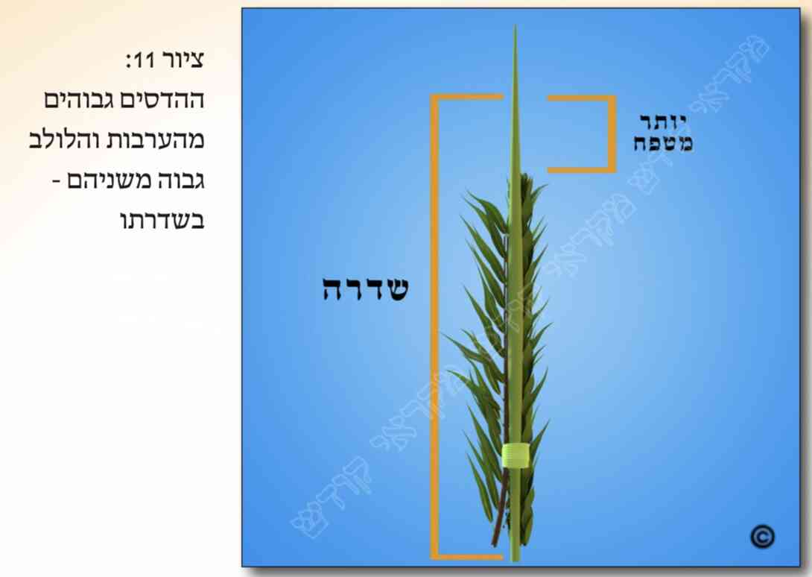

א. מצווה לאגוד יחדיו את שלושת המינים: הלולב, ההדסים והערבות, ודבר זה הינו משום נוי המצווה והידורה.
ב. אף שאגידת שלושת המינים הינה מצווה, בכל אופן אין זו חובה גמורה, ולכן מי שנטלם ללא אגידה יצא ידי חובה. ומכל מקום כבר נהגו ישראל לאוגדם.
ג. אגידת המינים צריכה להיות לכתחילה בקשר כפול (היינו קשר על גבי קשר), ולא בקשר עניבה. ובענין מנהג האשכנזים, ועוד דברים (כגון בענין אגידה על ידי "טבעות"), ראה עוד כאן במקורות, ולקמן (בסעיף כ"ב).
ד. כתבו הרבה פוסקים שניתן לאגוד על ידי בית יד העשוי מעלי הלולב (הנקרא בפי העם "קוישיקלאך"), משום שלדעתם גם זה נקרא "אגד". וכן נוהגים האשכנזים (אם כי רבים מוסיפים לעשות קשר אחד כפול על גבי הקוישלאך עצמו, בכדי שיחשב כאגידה ראויה). ולדעת הספרדים אין אגידה ע"י קוישיקלאך נחשבת כאיגוד. ומכל מקום טוב שגם האשכנזים האוגדים באופן זה, יקשרו את שלושת המינים בתחתיתם מעל הקוישיקלאך בשני קשרים, זה על זה, כדי לצאת לפי כל הדעות.
ה. צריך להזהר שהדבר שאוגדים בו את שלושת המינים הללו לא יחצוץ בינם לבין יד האוחז בהם. ואם האגודה עשויה מאחד (או יותר) מהמינים הללו אין זו חציצה. וכן אם האגודה עשויה ממין אחר, אך אגודה זו מייפה את הלולב ומיניו ועושה אותם נאים יותר, מותר לאגוד אף בדבר שאינו משלושת המינים הללו.
ו. לאור האמור בסעיף הקודם, מותר לאגוד את שלושת המינים גם בדבר שאינו ממינים אלה (וכגון בחוטי זהב וכדומה), אם הוא מייפה את הלולב ומיניו. ומכל מקום נהגו רוב העולם לאוגדם בעלי לולב. ועוד מדיני חציצה ראה לקמן (בפרק י"א סעיפים כ"ה – ל"ו).
ז. אין לתלוש עלים מהלולב לצורך האגידה של שלושת המינים, או לאגידת הערבות להושענא רבה, אלא באחד מהתנאים הבאים: 1) אם תולש ממנו העלים לפני שקיימו בו את מצוות נטילת הלולב. 2) אם לפני שקיים בו את מצוות הנטילה עשה תנאי ואמר שהוא מתנה שיוכל לקחת עלים מהלולב לצורך אגידת שלושת המינים או אגידת הערבות להושענא רבה.
ואם אין מתקיים אף תנאי מהתנאים הללו, ישנן כמה דעות בפוסקים:
יש אומרים שבמקרה זה אסור בשום אופן לתלוש עלים מהלולב כדי לאגוד על ידם את ההדסים והערבות יחד עם הלולב, וכן את הערבות להושענא רבה.
דעה שניה סוברת שבמקרה זה מותר לתלוש מהעלים הנמוכים שבלולב, והיינו העלים שהינם תחת ארבעת הטפחים העליונים (שהם כשלושים ושנים ס"מ, ויש אומרים כארבעים ס"מ) שבראש שדרת הלולב, כך שאינם נצרכים לצורך כשרות הלולב.
ודעה שלישית סוברת שמותר במקרה זה לתלוש מהלולב רק לצורך אגידת אותו לולב בעצמו, אך לא לצורך אגידת לולב אחר, או לאגידת הערבות של הושענא רבה. ולכתחילה יש לנהוג כדעה הראשונה. ולגבי תלישת עלים אלה ביום טוב ראה לקמן (בסעיף כ"ד).
ח. לפי האמור בסעיף ה' מתבאר עוד, שאם נשרו בתוך האגודה חלק מהעלים של שלושת המינים הללו, אין בכך בעיה של חציצה. ומכל מקום אם רוצים בחול המועד להחליף חלק מהמינים שבאגודה יש להתירה או לחותכה ואז להחליפם. אך לא יתחבם באגודה מבלי להתירה, שמא יפסלו המינים, הן הנשארים והן החדשים, בשל נשירת עלים מהם כך שלא ישאר בהם שיעור עלים כדין ויפסלו (וראה עוד במקורות). ולגבי החלפתם ביום טוב ראה לקמן (בסעיף כ"ה).
ט. כבר נהגו ישראל לאגוד לולב אחד, שלושה הדסים ושתי ערבות. וישנם מנהגים שונים באשר לאופן סידור המינים באגודה. יש המניחים את ההדס האחד מימין ללולב וצמוד לו, ומימינו ערבה אחת, ואת ההדס השני משמאל ללולב וצמוד לו, ומשמאלו ערבה אחת, ואת ההדס השלישי ישים מול פני האדם הנוטל מלפני הלולב, כשהוא נוטה מעט ימינה. וכן מנהג הספרדים ומעט מהאשכנזים. ואילו למנהג רוב האשכנזים יש לאגוד את כל ההדסים מימין הלולב, ואת כל הערבות משמאל הלולב (וכדלקמן בפרק י"א סעיף כ"א).
י. יש לאגוד באופן שהלולב הינו באמצע, ושדרתו מופנית כלפי הנוטל את המינים (וכדלקמן בפרק י"א סעיף כ"ב).
יא. גם איטר יד ימין יסדר את ההדסים והערבות באגודה בסדר הנ"ל.
יב. את כל שלושת המינים יש לאגוד דרך גדילתם. ולכן יש לאוגדם כשמקום חיבורם לאילן או לשיח הינו בתחתית האגודה וראשיהם כלפי מעלה. ואם אגדם כשהם הפוכים ונטלם כך, לא יצא ידי חובה ועליו לתקן הדבר. וראה עוד לקמן (בפרק י"א סעיפים ל"ז – ל"ט) לגבי הצורך ליטלם כדרך גדילתם, וראה שם (בסעיפים נ"ב - נ"ג) כיצד ינהג אם כבר נטלם כשלפחות מין אחד, כולו או חלקו, הפוך.
יג. לכתחילה יש להניח את שלושת המינים באגודה באופן שבעת הברכה יאחוז את כולם בידו. וראה עוד לקמן (בפרק י"א סעיף כ"ג).
יד. שדרתו של הלולב (היינו "עמוד השדרה" שלו ללא העלים) צריכה להיות גבוהה מהקצה העליון של ההדסים והערבות לפחות טפח (ששיעורו לכתחילה כשמונה ס"מ. ויש אומרים כעשרה ס"מ). וראה בציורים (ציון 11). ובענין כמה מיקרים ששייך בהם דין זה ראה כאן במקורות.
טו. ראשי ההדסים שבאגודה צריכים להיות גבוהים מעט מראשי הערבות [  ]. ויש להקפיד שלא תהיינה הערבות גבוהות מההדסים.
טז. יש לאגוד את ההדסים והערבות באופן שענפיהם יהיו קרובים ללולב ולא יראו כמתפזרים ממנו.
יז. למנהג האשכנזים (שבשעת הנענועים של הלולב מכסכסים אותו) יש להקפיד שלא לעשות שום קשר בטפח (היינו שמונה ס"מ. ויש אומרים כעשרה ס"מ) העליון של שדרת הלולב, וזאת כדי שיוכלו לנענעו ולכסכסו כראוי. ואילו הספרדים אינם מקפידים כלל בכך, אלא אדרבא, יש מהם הקושרים או המדביקים בנייר דבק את קצהו העליון של הלולב כדי שלא יפתח בעת הנענועים. ובאשר להדבקת עלי הלולב בדבק נוזלי הנכנס בין עלי הלולב, ראה כאן במקורות.
יח. כדי שיהא הדבר נחשב כאגד מספיק לעשות רק קשר אחד כפול באגודה. אולם למעשה נוהגים לאגוד את הלולב ומיניו בכמה קשרים כפולים (היינו בכמה מקומות), ומנהגים שונים בדבר:
יש הנוהגים (1) לעשות שלושה קשרים כפולים, באופן שקשר אחד הינו למטה במקום אחיזת שלושת המינים, ושני קשרים מעליו שהינם רק בלולב עצמו. יש הנוהגים (2) לעשות קשר אחד במקום אחיזתם, ושלושה קשרים בלולב עצמו. יש הנוהגים (3) לעשות חמישה קשרים, באופן ששלושה קשרים למטה במקום אחיזת שלושת המינים, ושנים בלולב עצמו, או (4) שני קשרים על מקום האחיזה ושלושה קשרים על הלולב. ויש אומרים שלפי המקובלים יש לעשות (5) שמונה עשר קשרים, מהם חמישה עשר קשרים על הלולב, ושלושה קשרים במקום האחיזה. ויש מהם (6) העושים שמונה עשר קשרים על הלולב עצמו, ונוסף לכך קושרים עוד במקום האחיזה . וכל אחד יעשה כמנהגו. ומכל מקום כל הקשרים הללו, הינם קשרים כפולים, וכנ"ל (בסעיף ג').
יט. אף על פי שמעיקר הדין מותר לאשה, לילד שאינו חייב במצוות, ואפילו לגוי, לאגוד את שלושת המינים, בכל אופן לכתחילה טוב להזהר שהם (ובפרט גוי) לא יאגדו. ויש אומרים שאם הם כבר אגדו, וניתן הדבר, יתיר את האגודה ויאגוד שוב מי שחייב במצוות. ומכל מקום כל זה אמור רק לגבי הקשרים התחתונים האוגדים את שלושת המינים. אך מותר להם לכתחילה לאגוד את הקשרים העליונים שבלולב עצמו.
כ. אף שיש מי שמחמיר שלא לאגוד את שלושת המינים בלילה, מכל מקום לדעת רוב הפוסקים מותר לאוגדם אף בלילה (אך עדיף לא בליל יום טוב, כדלקמן בסעיף כ"ב).
כא. לכתחילה יש לאגוד את שלושת המינים בערב יום טוב (והיינו ביום שלפני החג). וכאשר יום טוב חל בשבת, עדיף שיאגדנו במוצאי שבת (אך ודאי לא בשבת).
כב. כפי שכתבנו בסעיף הקודם, לכתחילה יש לאגוד לפני החג. אך אם מכל סיבה שהיא לא אגד את שלושת המינים לפני כניסת היום טוב, או שאגדם אך הם הותרו, אזי לא יאגדם ביום טוב בקשר כפול כביום חול, אלא יאגדם בקשר עניבה (כמבואר במקורות). ויש שכתבו שניתן אז לאוגדם באופן שכורכים דבר מה (עלה לולב וכדומה) סביב שלושת המינים הללו, ולאחר מכן תוחבים את קצהו בתוך העיגול הכרוך ומהדקים אותו.
כג. אסור לעשות "קוישיקלאך" (כנ"ל בסעיף ד'), שלם או חלקו, וכן "טבעות" מעלי הלולב ביום טוב. ומכל מקום מותר ביום טוב לתחוב את שלושת המינים לתוך "קוישיקלאך" שכבר עשוי, וכן לכרוך אותם ב"טבעות" המוכנות מלפני החג.
כד. אף מי שאינו אוגד את שלושת המינים לפני החג, בכל אופן לכתחילה יכין לפני החג את ענפי הלולב שבכוונתו לאגוד בהם. ואם לא הכינם לפני החג, ועתה ביום טוב נצרך הוא לשם כך לתלוש כמה עלים מהלולב כדי לאגוד בהם (כדלעיל בסעיף ו'), יש מי שאוסר לתולשם מהלולב ביום טוב, אך לדעת רוב הפוסקים מותר הדבר כיוון שהלולב כבר תלוש מהקרקע לפני החג. וכן העיקר להלכה. אך כיוון שיש שכתבו שנהגו להחמיר בכך, לכן יש הנוהגים לתולשם בשינוי (כגון על ידי השיניים), ויעשו כן בצנעה. וראה עוד כאן במקורות.
כה. אין להתיר ביום טוב את הקשר הכפול של האגידה. ואם מסיבה כלשהי רוצה הוא להחליף את ההדסים או הערבות ביום טוב, והקשר של האגודה מהודק, ראה דינו כאן במקורות.
כו. יש אומרים "לשם יחוד" וגו' לפני אגידת שלושת המינים, ויש האומרים תפילה קצרה לפני האגידה. ומכל מקום אין מברכים על האגידה.
כז. עוד מדיני אגידת שלושת המינים ראה כאן במקורות.
כח. נחלקו הפוסקים אם יש לאגוד את הערבות שחובטים בהושענא רבה. ולמעשה נוהגים לאוגדן.
כט. מנהגים שונים ישנם לגבי מספר בדי הערבה שחובטים בהם בהושענא רבה. יש הנוהגים לחבוט בשלושה בדי ערבה, יש הנוהגים בחמישה, ויש בשבעה. ונראה שמנהג רוב העולם לחבוט בחמישה בדי ערבה.
ל. נהגו מהאשכנזים להסיר בהושענא רבה (מן הלולב) את הקשרים מהלולב עצמו. ומנהגים שונים יש להם בכך, וכל אחד יעשה כמנהגו. והספרדים אינם נוהגים כלל להסיר את הקשרים מהלולב ביום זה.
לא. עוד מדיני אגידת הערבות להושענא רבה, ראה כאן במקורות.
&הערות:
[1] א. איתא בגמ' סוכה (די"א, ב' ודל"ג, א'): תניא: לולב בין אגוד בין שאינו אגוד, כשר. רבי יהודה אומר: אגוד כשר, שאינו אגוד פסול. ע"כ (ומבואר בגמ' שר"י למד כן בגז"ש דלקיחה מאגודת אזוב, ורבנן לא למדו גז"ש זו). ושאלו בגמ': מאן תנא להא דת"ר: לולב מצווה לאוגדו, ואם לא אגדו כשר... אי רבי יהודה כי לא אגדו אמאי כשר. אי רבנן מאי מצווה קעביד. ואמרו, דלעולם הברייתא כרבנן, ומצווה משום "זה א-לי ואנווהו", התנאה לפניו במצוות. ע"כ. וע"ע במנחות (דכ"ז, א').
ואכן פסקו הפוס' כרבנן, שאין חובה לאגוד ואינו לעיכובא, ומ"מ מצווה לאגוד. שכ"פ הטור (סי' תרנ"א), מרן בב"י ובשו"ע (סי' תרנ"א ס"א), הלבוש, המ"ב (סי' תרנ"א סק"ז), כה"ח (סק"ט) וש"פ. וזה שלא כמש"כ הטור (בסי' תרנ"א) בד' רש"י ש"לכתחי' חובה לאוגדו" משום "זה א-לי ואנווהו".
וע"ע לקמן בסמוך (בהערה ד') מה שדנו הראשו' והאחרו' גבי הא דלרבנן הינו מצווה אך אינו לעיכובא. וע"ע לקמן (בהערה ג') גבי גדרי נוי מצווה.
[2] ב. הא דאוגדים דווקא ג' מינים אלה, לא פחות ולא יותר, ודווקא את אלה, הוא עפ"י הגמ' בסוכה (דל"ד, ב'). דאמרו שם בגמ': א"ר אליעזר: יכול יהא אתרוג עמהן באגודה אחת. אמרת, וכי נא' פרי עץ הדר וכפֹת תמרים. והלא לא נאמר אלא "כפֹת". ע"כ. והיינו מדכתיב גבי לולב "כפֹת" בלא וא"ו בתחילתו, משמע שהלולב הינו בפנ"ע, ואינו מאוגד עם האתרוג. והיינו שאין האתרוג באגידת ג' המינים האחרים. וגבי ההדסים והערבות כתיב וא"ו בתחילתן, ומשמע שמחוברים הם ללולב (עפ"י רש"י שם ד"ה "יכול").
וכעין זאת מצינו שכתב רבינו מנוח בס' המנוחה (הל' שופר, סוכה ולולב, פ"ז ה"ו):דאיתא בפסיקתא דרב כהנא, ש"פרי עץ הדר" כתיב כנגד דניאל, שהיה מהודר בחצר המלכים. ואילו כפות תמרים, ענף עץ עבות וערבי נחל הינם כנגד חנניה, מישאל ועזריה, ששלשתן עמדו בנסיון וקידשו שם שמים כשהושלכו לכבשן האש. והאתרוג לעצמו, כנגד דניאל שנתנסה לבדו וקידש ש"ש כשהושלך לגוב האריות. ע"כ [הב"ד בחזו"ע (סוכות. הל' דמ"י הערה י"ב דשמ"ב)]. וע"ע במ"א (סי' תרנ"א סק"ה).
אם אגד את הלולב, ההדסים והערבות יחד עם האתרוג, ונטלם כך, פסול ולא יצא י"ח כלל [פמ"ג (במש"ז סי' תרנ"א סקי"ד). שו"ע הגר"ז (בהשלמות. סי' תרנ"א ס"ג). ס' חיים וברכה (סי' ט'). הב"ד בסא"ה (במיל' לדיני איגוד הלולב, סק"א)].
[3] ג. הא דהוא משום נוי מצוה והידורה, הוא עפ"י הגמ' בסוכה (די"א, ב' ודל"ג, א'), וכנ"ל (בהערה א'), שיש להתנאות לפני ה' במצוות.
כ' המט"מ (סי' תתקכ"ו), שמצווה לאגוד כדי שלא יתפזרו ענפי הערבות לכאן ולכאן. ע"כ. וכ"כ השל"ה (דרמ"ה, ב'). והיינו כדי שענפי הערבות יהיו נוגעים בלולב. הב"ד כה"ח (סי' תרנ"א סקי"ב) וכ' דלפי"ז ה"ה בהדס, אלא דנקט ערבה משום דענפיה רכים יותר ועלולים להתפזר. ע"כ.
כ' הג' החת"ס בחידושיו לסוכה (דף ל"ו), דכיוון שהאגד בלולב הינו משום "זה א-לי ואנווהו", וכמ"ש חז"ל (סוכה די"א, ב') התנאה לפניו במצוות, אין לנו אלא מה שהתורה מייפה עלינו, ולא מה שאנו ממציאים ייפוים והידורים (והמשיך, שלכן עיקר "ואנווהו" הוא לאגוד הלולב במינו, וכו'. וע"ע לקמן בהערה י"ג). הב"ד בסא"ה (במיל' לדיני האיגוד סק"ו, דש"ו), ובחזו"ע (סוכות. הל' דמ"י הערה י"ב דשמ"ג).
[4] ד. כמו שכתבנו בס"ד לעיל (בהערה א'), שאין זו חובה אלא מצוה. ושכ"פ המ"ב (סי' תרנ"א סק"ז).
כ' הריטב"א בסוכה (די"א, ב' ד"ה "ואי רבנן"), דליכא למימר דלרבנן מצווה לאוגדו מן התורה, ובדיעבד אי לא אגדו כשר, דהא כל בדאו' לא שני לן בין לכתחי' לבדיעבד. ופרקינן דהוי מצוה מדרבנן לאוגדו משום שנא' זה א-לי ואנווהו, התנאה לפניו במצוות. ע"כ. והיינו דס"ל דדרשה ד"ואנווהו" היינו מדרבנן, וקרא אסמכתא בעלמא. וכ"כ כמה אחרו' בד' התוס' בסוכה (דכ"ט, ב' ד"ה "לולב היבש פסול"). ר' בחזו"ע (סוכות. הל' דמ"י, הערה י"ב ד"ה "וכתב").
אמנם יש שחלקו ע"כ וכתבו שעיקר הידור מצוה דאו' הוא, דכתיב "זה א-לי ואנווהו", ודרשינן, התנאה לפניו במצוות. שכ"כ בחידושי אנשי שם על הרי"ף (ספ"ז דברכות). ואע"ג שמבואר בתוס' בגיטין (ד"ג, ב') דבדאו' אין חילוק בין לכתחי' לבדיעבד [וכ"נ מד' התוס' במנחות (דל"ח, א' ד"ה "ואם")]. מ"מ מד' התוס' בפסחים (די"א, א' ד"ה "קוצרין") מוכח שיש מקומות דבדאו' נמי שאני לן בין לכתחי' לבדיעבד. וע"ע ע"כ באורך בחזו"ע (סוכות שם). וחכ"א שליט"א הסביר, שאף את"ל דנוי מצווה מדאו', מ"מ גם בזה אין שיעור מדאו' לנוי זה, ודי בשיעור מועט.
וא"כ נחלקו הפוס' האם מ"מ לרבנן מצוות איגוד הינה מדאו' או מדרבנן, אף שלדעתם אינה חובה ואינה לעיכובא.
[5] ה. שכן מבואר בהדיא בגמ' סוכה (די"א, ב' ודל"ג, א'), דרבנן ס"ל שאם לא אגדו כשר. וכן מתבאר מדברי מרן (בסי' תרנ"א ס"א) וש"פ שכתבו ש"מצווה" לאוגדו ואינו חובה. והיינו דאינו לעיכובא.
[6] ו. שכ"כ הרמ"א (סי' תרנ"א ס"א), המ"ב (סק"ח), בחזו"ע (הל' דמ"י הערה י"ב דשמ"ג ד"ה "ומה") וש"פ. ופוק חזי מאי עמא דבר, שהאשכנזים אוגדים ע"י הקוישיקלאך, וגם להם ישנם מנהגים שונים (וחכ"א העיר שאין זה ממש מנהגי אבות, אלא פשוט יש אשכנזים שמעצמם עושים כן, ואחרים עושים אחרת). שיש הנוהגים לעשות קשר א' או יותר סביב הקוישיקלאך עצמו, וחלקם קושרים מעל הקוישיקלאך את ג' המינים, ויש שאינם קושרים כלל את ג' המינים (ור' ע"כ לקמן בהערה י"ג). והספרדים אוגדים את ג' המינים ע"י עלי לולב, ויש מהם המלפפים חוט זהב או כסף דקיק ויפה סביב ג' המינים.
[7] ז. ראשית נקדים בס"ד שישנם כמה סוגי קשרים שדנו בהם הפוס' גבי אגידת ג' המינים (באמת ישנם לפחות שישים וארבעה סוגי קשרים, וכמו שמלמדים בחיל הים, אך אנו מדברים על מש"כ הפוס' גבי ני"ד: 1) קשר כפול. 2) עניבה על גבי קשר. 3) עניבה ע"ג עניבה. 4) קשר ועל גביו כריכה (כדלקמן בסעיף כ"ב). 5) כריכה ע"ג כריכה. 6) כריכה בודדת. 7) טבעת (היינו שעושים עיגול קטן בקצה החוט או בקצה עלה הלולב, ואת שארית החוט כורכים סביב ג' המינים, ומשחילים אותו לתוך העיגול הנ"ל ואז מושכים אותו ומהדקים אותו). ובס"ד יבוארו הדברים בהמשך פרקנו, ובנספחים (נספח ב').
מה שכתבנו שכדי שיחשב הדבר כאגד צריך לעשות קשר כפול באגודה, כ"כ הרא"ם בס' היראים (סי' קכ"ד), הב"ד במרדכי (סי' תשמ"ח). וכ"כ באו"ז הגדול (סי' ש"ז). וכ"כ מרן בב"י ובשו"ע (בסי' תרנ"א ס"א) שמצווה לאוגדם בקשר גמור דהיינו ב' קשרים זה על זה. ע"כ.
וכ"כ כמה אחרו' (מהם אשכנזים, והנ"מ כדלקמן בהערה י"א). שכ"כ הביכור"י (סי' תרנ"א סק"ח), שפקפק במנהג האוגדים הג' מינים ע"י טבעות, וכ' דלא הוי קשירה גמורה, שהרי יש לקשור קשר הנאסר בשבת, וכמש"כ המרדכי והראבי"ה, וא"כ בעינן דוקא קשר גמור. ולכן כ' הביכור"י שאם רוצה לאגוד ע"י טבעות, מ"מ למטה מאותן טבעות, סמוך לסוף המינים, יאגוד את כל המינים ביחד קשר ע"ג קשר. והוסיף, שיעשה הקשר מהודק שפיר, באופן שלא יוכל להוציא ולהכניס הדס וערבה מבלי התרת הקשר, דאל"כ לאו קשר הוא. עכת"ד.
גם החת"ס בחידושיו לסוכה (דל"ו, א') כ' שהעיקר לאוגדו ולעשות בו קשרים זה על זה, ולא כמו שנוהגים לעשות כמין טבעות... שזה אינו "ואנוהו" שאמרה התורה, אלא צ"ל קשר ע"ג קשר. עכת"ד.
[8] ח. כנ"ל בהערה הקודמת בשם המרדכי ועוד כמה ראשו'. ושכ"כ מרן בב"י, שבחול יש לאוגדו אגד הנאסר בשבת וביו"ט, ואין אסור אלא שני קשרים זה על זה. ע"כ. הב"ד כה"ח (סי' תרנ"א סק"י). וכ"כ המ"ב (סי' תרנ"א סק"ח) שלא יאגוד בעניבה, דאי"ז קשר הנאסר בשויו"ט ולא מיקרי אגד. ע"כ. ומ"מ גבי אגידה ביו"ט (כשלא אגדו בעיו"ט, או שהותר אגודו) יעשה ע"י עניבה (עפ"י מרן שם, וכדלקמן בסעי' כ"ג).
[9] ט. כתב הראבי"ה (סי' תרס"ו) דאנן נהגינן לקשור פעם אחת (היינו קשר א'), ושוב מתעגל וכורכו סביב, ומתוך כך מהודק יפה כאילו קשרו בשני ראשי האגד שתי פעמים. ע"כ. הב"ד מרן בב"י (רס"י תרנ"א ד"ה "כתב המרדכי").
והטור (שם) כ' שכשאוגד ביו"ט, שא"א לאוגדו בקשר גמור, אוגדו כאגודה של ירק, שכורך האגודה סביב ותוחב ראש האגודה לתוכה בלא קשירה.
אלא שהרמ"א בד"מ (סק"א) העיר ע"ד הראבי"ה שהביא בב"י, שתחילה קושרים קשר א' ושוב כורכו סביב ומהדקו יפה שזה כאילו קשרו בשני ראשי האגד ב' פעמים, וכ' ע"כ הרמ"א שכן הם נוהגים אף בחול, ודלא כמשמעות הטור בהמשך דבריו שמשמע שדווקא ביו"ט שאסור לעשות קשר גמור, אז יש לקשור בכה"ג. ע"כ.
ובאמת לא כ"כ זכיתי להבין את דברי רבנו הרמ"א. דממה דקאי ע"ד הראבי"ה שבב"י, משמע דמישתעי אמציאות של קשר ועליו כריכה ככריכת הירק. ואילו ממה שהזכיר את דברי הטור בהמשך דבריו גבי יו"ט משמע דמישתעי גבי מציאות של כריכה ככריכת ירק בלבד, ללא קשר אחד לפני הכריכה. ולאור זאת לא זכיתי להבין האם דברי הרמ"א שכן המנהג בחול, המישתעי גבי קשר ואח"כ כריכה או כריכה לבד.
והרמ"א במפה (סי' תרנ"א ס"א) הזכיר ד' הטור שיש נוהגים לכרוך (ללא קשר כלל), וכ' שכן נוהגים. וכ' ע"כ המ"א (בסק"ג) שכן נוהגים אפי' בחול. וציין זאת בשם הד"מ (ואינני יודע אם הציונים שבדברי הג' המ"א אכן המ"א כתבם. אך כך באמת נראה). וכ"כ בשמם הבה"ט (סק"ג). ומשמע שהמ"א הבין שהד"מ כתב שהמנהג אף בחול הוא לכרוך לבד ללא קשירה. ושכן ד' המ"א עצמו. וע"ע בעט"ז ובלבו"ש.
ומתוך זה מובנים ד' הגר"א בהגהותיו (ברס"י תרנ"א), שע"ד הרמ"א במפה שכ' דכן נוהגים לכרוך כריכה א' בלבד ללא קשר, כ' ע"כ הגר"א שדברי הרמ"א נסמכים ע"ד המרדכי, אך המרדכי כ' שקודם קושר קשר א' ואח"כ כורך, וזה נחשב כב' קשרים. וגם המ"ב (בסקי"א) תמה ע"ד המ"א, והזכיר גם את תמיהת הגר"א, ולכן הסיק שהקשר (התחתון מבין ג' הקשרים) שאוגד את ג' המינים יחד, יעשה קודם קשירה ואח"כ יכרוך, שרק זה נחשב כב' קשרים.
ולפי"ז יוצא שגבי אגידה ביו"ט, לד' מרן המ"ב יש לאוגדו בכריכה בלבד, ללא שום קשר לפני הכריכה (כמש"כ בריש סקי"א). ואילו כשאוגד בחול (בעיו"ט או בחוה"מ), בקשר התחתון יעשה תחילה קשר א' ואח"כ כורכו ככריכת הירק (היינו מסובב את עלה הלולב ותוחב את קצהו בסיבוב. ובשאר הקשרים יעשה רק כריכה. וכ"כ כה"ח (סקכ"ג) בסו"ד, דאפשר שזו נמי כוונת הד"מ שבחול יעשה קשר א' ואח"כ הכריכה דהוי כב' קשרים. ע"כ. ומשמע מדבריו שכן יעשה בכל הקשרים. וראה במ"ב הוצ' עוז והדר (לסי' תרנ"א הערה כ"ד), ע"ד המ"ב כאן רסקי"א, שכתבו שיש ב' הבנות בפוס' בדברי הרמ"א כאן.
ועוד בענין אגידה ביו"ט עצמו, ר' לקמן (בסעי' כ"ב). ומ"מ בהלכות כתבנו "שלכתחי'" יש לאגוד דוקא בקשר ע"ג קשר, משום שאין זה פשוט שיש הכרח בדבר, דהא ביו"ט שאסור לד' רוה"פ לעשות קשר כפול, הרי אוגד באופנים אחרים וגם אז זה נחשב שאגד, וכדלקמן (בסעי' כ"ב).
בענין אגידה ע"י טבעות.
אמנם כתבנו לעיל שעכ"פ לפי"ד הביכור"י והחת"ס צריך לאגוד דוקא בקשר ע"ג קשר, דבעי קשר אמיץ וחזק. אך באמת הג' הפמ"ג כ' (בא"א סי' תרמ"ז סק"א) שמנהגו לאגוד ע"י טבעות, וללא קשרים. וכ"כ בערוה"ש (סי' תרנ"א סעי' ז') שכן נוהגים. הב"ד בפסתש"ו (סי' תרנ"א הערה 14) וכ' שלכן הנוהגים לאגוד ע"י טבעות בלבד, ללא קשרים, יש להם על מה שיסמוכו.
[10] י. כתב בשו"ת בית דוד (או"ח סי' תנ"ד) לדון בענין הנוהגים שלא לקשור ולאגוד הלולב ומיניו כלל, אלא שעושים מעלי הלולב מעשה אורג, כמין בית יד, והוא כעין קנה חלול, ומכניסים ותוחבים לתוכו את הלולב ומיניו, ותופשים בו כשהם אדוקים יחד (ונראה דכוונתו לקוישיקלאך). והסיק שם בבי"ד, דלא אריך למיעבד הכי, שבגמ' ובפוס' תפשו לשון קשירה, ומשמע דוקא בקשירה ולא באופן אחר. ואע"ג שגם בזה מיהדק שפיר ואיכא נוי, אנן נוי המתקיים בעינן, ואילו כאן יכול לשולפו ממנו. עכ"ד.
וכ"נ מד' הרא"ם בס' היראים (סי' קכ"ד), שכ' שצריך שיאגדנו בשני קשרים זה ע"ג זה. דכי היכי דמצריך רבי יהודה אגד לעיכובא, מצרכי רבנן למצווה. עכ"ד. וכ"נ מד' המרדכי (בסי' תשמ"ח) שהב"ד היראים, וכ"נ מד' האו"ז (סי' ש"ז), וכנ"ל (בהערה ז'). וכן מתבאר מד' מרן בשו"ע (סי' תרנ"א ס"א), דבעי דוקא קשר ע"ג קשר.
אמנם בשו"ת אגורה באהלך (די"ב ריש עמודה ג') כ' ע"כ: ואנכי לא ראיתי טענה מספקת לזה. שמכיוון שלדידן קיי"ל שא"צ אגד מן הדין אלא לנוי, בני"ד נמי כשמכניס הלולב בתוך הארוג הזה, והוא מהודק היטב הדק, יש לו נוי הרבה, ולמה לא יכשר אף לכתחי', וחשיב כאילו קשור בכמה קשרים זה ע"ג זה, וכו', באופן שאין מכל דברי הבית דוד לסתור המנהג. עכת"ד.
את דברי שו"ת אגורה באהלך הביאו הפת"ת, המ"ב (סק"ח), כה"ח (סקי"א), חזו"ע (הל' דמ"י הערה י"ב דשמ"ו, ב') וש"פ.
אמנם יש להעיר ע"כ כמה דברים.
ראשית. מדברי המ"ב (שם) משמע דפוסק להקל כשו"ת הנ"ל. אמנם ק"ק לי. שאמנם את דברי השו"ת הנ"ל לא ראיתי, אך יש להעיר שממה שהביא דבריו בחזו"ע (שם) משמע שמודה הוא דלא חשיב קשר כדין, אלא שבשל הא דאין חובה מדינא לאגוד (וכרבנן), לכן היקל בכך, וכתב ד"חשיב כאילו קשור בכמה קשרים". ואילו ממה שהביא דבריו המ"ב מבואר להיפך, ש"ג"ז בכלל קשר".
שנית. ק"ק לענ"ד ע"ד שו"ת אגורה באהלך. דאם שורש קולתו הינו משום שמעיקה"ד באמת א"צ אגד, א"כ שלא יעשה איגוד כלל. אך אם כבר עושה איגוד, לכאו' צריך לעשותו עפ"י המבואר בפוס'. דאם נקל בענין הא דבעי קשר ע"ג קשר, אזי נבטל גם הרבה מאוד מהלכות אחרות של דיני האיגוד.
ועוד. אם אכן בשו"ת הנ"ל הקל משום שגם בית היד הזה (הקוישיקלאך) הריהו בכלל קשר, לכאו' אי"ז מובן כלל. שהרי ג' המינים שמונחים בתוכו אינם קשורים כלל זל"ז, ואין זה כהגדרת הפוס' גבי קשר (ואי"ז קשר אף לפי"ד המקילים שדי בכריכה ככריכת הירק).
וכבר הבאנו בס"ד לעיל (בהערה ז') את דברי הביכור"י והחת"ס שאין לאגוד באופן זה משום דאין זה קשר גמור. וזאת עפי"ד המרדכי והראבי"ה.
[11] יא. הנה כבר בשו"ת בית דוד הנ"ל (בהערה הקודמת) מבואר שכן היו שנהגו בכך. וכן מבואר בדברי שו"ת אגורה באהלך הנ"ל שכן המנהג. וכן נהג הפמ"ג (כמבואר בא"א סי' תרמ"ז סק"א), וכ"כ בערוה"ש (סי' תרנ"א ס"ז) שכן נוהגים. וכ"כ המ"ב (סי' תרנ"א סק"ח) וש"פ אשכנזים. וכן המנהג פשוט כיום אצל האשכנזים. אלא שהעירו לי כמה ת"ח שרוב האשכנזים למרות שאוגדים ע"י הקוישיקלאך בכל אופן מוסיפים הם לעשות קשר אחד כפול על הקוישיקלאך, בכדי שתהא אגידה כדבעי. ויש מהם שגם אוגדים את הלולב בחלקו העליון עם שלוש טבעות.
בס"ד יש להעיר שנודע לי שהקוישיקלאך – רובם נעשים ע"י ערבים. וישנם סוחרים יהודים – אינשי דלא מעלי – שלצערנו קונים זאת מהם בסיטונאות ומוכרים לקהל הרחב. לכן טוב יעשו אנשים בעלי יוזמה שיארגנו קבוצות של יהודים, נערים, וכדו', שיכינו קוישיקלאך. ואף אם אותם סוחרים ירוויחו קצת פחות, בכל אופן עי"כ הם יחזיקו ידי יהודים ויפרנסום, ועוד, שעי"כ גם לא יפרנסו את אויבינו. וכבר הארכנו בכך בס"ד במקראי קודש הל' תשעה באב (פ"ז הערה י').
נוסף ע"כ, כפי שכתבנו בס"ד לקמן בפרקנו (בסעי' כ'), הרי שלכתחי' אין לאגוד ע"י גוי. אמנם צ"ע אי עשיית הקוישיקלאך נחשבת כאיגוד. שמא דווקא הכנסת ג' המינים אליו נחשבת כאגידה. וכן מסתבר.
ומ"מ ברור שבשל הענין שדווקא יהודים יעשו הקוישיקלאך, אין להגיע למצב שבכניסת החג אין לו קוישיקלאך וירצה לעשות זאת בחג עצמו. דזה ודאי אסור, וכמו שכתבנו בס"ד לקמן בפרקנו (בסעי' כ"ג).
בשל דברי הביכור"י והחת"ס הנ"ל (בהערה ז'), רצוי לעשות את הקוישיקלאך באופן שיש בו חור לרוחבו כך שניתן יהיה להשחיל באמצעו עלה של לולב, ועי"כ עלה זה יקשור בחוזקה את ההדסים והערבות יחד עם הלולב. ומ"מ אם ההדסים והערבות מוכנסים עמוק בקוישיקלאך ובולטים דים למטה מהקוישיקלאך, לכאו' מועיל לקשור אותם בתחתיתם. ור' ע"כ לקמן (בהערה י"ג).
[12] יב. כפי שכתבנו בס"ד לעיל (בהערות ז' וי'), הרבה פוס' כתבו שלא לאגוד ע"י בית יד (קושיקלאך) ולא ע"י טבעות. שכ"כ הג' בית דוד והג' החת"ס. ושכ"נ כבר מד' כמה ראשו', היראים, הראבי"ה, והמרדכי, דבעי ממש קשר ע"ג קשר. וכ"כ גם האחרו' המאוחרים. שכ"מ ממסקנת כה"ח (סקי"א) ובפרט מדבריו גבי אופן סידור ההדסים והערבות סביב הלולב (בסקי"ד) בשם מהר"י צמח בפע"ח (שהוא הוציא את ס' אוצרות חיים מקברו של מהרח"ו זצ"ל, ערכו, הכינו וגם חקרו והדפיסו). דאם בעי לשים את ההדס השלישי מול פני האדם הנוטל, באמצע בין שני ההדסים האחרים, הרי שהקוישיקלאך אינו יכול לשרת מטרה זו של האגידה. וכן העירו כבר בהערות איש מצליח על המ"ב סק"ח שכ' גבי הקוישיקלאך, ובהערות הנ"ל (בהערה 7) כתבו שעפ"י המבואר בכה"ח הנ"ל אין להשתמש בקוישיקלאך לאיגוד (ועיי"ש גם בהערה 2 על המ"ב סקי"ב).
גם בדברי הגר"ע יוסף זצ"ל בחזו"ע (סוכות. הל' דמ"י, הערה י"ב, דשמ"ג ד"ה "ומה" ודשמ"ו – שמ"ז ד"ה "והנה") מבואר שאין ליטול הדמ"י ע"י הקוישיקלאך. ואע"ג שלאחר שהב"ד שו"ת אגורה באהלך כ' שנמצא שאף הנוהגים כן יש להם ע"מ שיסמוכו, מ"מ בסו"ד הב"ד החת"ס שהתנגד לכך, וכ' ע"כ החזו"ע שכן עיקר.
וכן ד' הגר"מ אליהו זצ"ל, בס' הל"ח (הוא ס' מאמר מרדכי במהדורותיו המאוחרות. פנ"ב סעי' צ"ג) שכ' שלא ליטול הד' מינים ע"י קוישיקלאך. ע"כ. וכן ראינו את גדולי הספרדים, שלא נטלו כלל הד' מינים ע"י הקוישיקלאך, ולמפורסמות א"צ ראיה.
[13] יג. שכ"כ הביכור"י (סי' תרנ"א סק"ח) שאם רוצה לאגוד ע"י טבעות, מ"מ למטה מאותן הטבעות, סמוך לסוף המינים יאגוד את כל המינים יחד בקשר ע"ג קשר, ויעשה קשר זה מהודק היטב באופן שלא יוכל להוציא הדס וערבה מבלי התרת הקשר. ע"כ. הב"ד בסא"ה (במיל' לדיני איגוד. סק"ה), ועפי"ז כתב גם בגוף הספר (בדיני איגוד הלולב, ס"ז) שטוב לקשור את ג' המינים בשני קשרים זע"ז כדי לצאת ידי כל הדעות (וזאת אעפ"י שהמ"ב לא הזכיר זאת, ובהקדמת ס' ארבעת המינים הנ"ל כ' שפסקיו מושתתים ע"ד המ"ב. בכל אופן כתב בגוף הספר שטוב לנהוג כן).
גם כה"ח (בסקי"א) לאחר שהב"ד שו"ת אגורה באהלך הנ"ל שהיקל בשימוש בקוישיקלאך, מ"מ כ' בסו"ד שהנכון לקושרם יחד ואח"כ לתוחבן בבית היד אם חפץ בבית יד, וזאת כדי לצאת אליבא דכו"ע (היינו כבית דוד שהחמיר בזה). וע"ע גבי ני"ד בפסתש"ו (סי' תרנ"א הערות 7-11).
ובענין היכן לקשור את הקשרים הללו. מדברי הביכור"י עולה שיקשור בתחתית הג' מינים, תחת הטבעות. אמנם אותם שאוגדים בקוישיקלאך, מבחינה מציאותית אינם יכולים לקשור תחתיו, אלא יכולים לקשור דוקא מעל הקוישיקלאך וסמוך אליו, כך שיוצא שקשרו את כל ג' המינים גם ע"י קשר א' או יותר. וכן אמרו לי שיש אשכנזים רבים הנוהגים כן. ועוד אמרו לי, שישנם כמה וכמה ת"ח אשכנזים שבכלל לא אוגדים ע"י קוישיקלאך אלא אוגדים ע"י קשרים בלבד. אך נראה שזה רק מיעוטא דמיעוטא. ועוד אמרו לי האשכנזים, שיש מהם הקושרים דוקא סביב הקוישיקלאך ועליו ממש, אך עושים זאת לא מהטעם ההלכתי, והיינו כדי שיהיו הג' מינים אגודים באופן חזק ומהודק, אלא פשוט כדי שהקוישיקלאך יחזיק את ג' המינים ולא יתפרק (וכנ"ל בהערה ו'). ולכאו' אין זה מועיל לד' הביכור"י הנ"ל, דהא אין ג' המינים מהודקים היטב עי"כ. ולא זכיתי להבין את הרב פסתש"ו, שכ' (בסי' תרנ"א סוף הערה 14) שיש לקשור הטבעות סביב הסלסלה (היינו הקוישיקלאך). וצ"ע מדוע לא העיר שאי"ז מועיל לביכור"י ולשאר הפוס' שכתבו שאין הקוישיקלאך חשיב כאגד. ועוד כתב בפסתש"ו שם (בהערה 14 בסופה), ש"נראה שיש לקשור הטבעות סביב הסלסלה (היינו הקוישיקלאך) תוך שיעור ג"ט של הדסים וערבות". ונראה בס"ד, שאם ההדסים והערבות גבוהים יותר מג"ט מראש הקוישיקלאך, יקשור הטבעות בתוך הג' טפחים העליונים.
[14] יד. עפ"י הגמ' בסוכה (דל"ז, א'), הטור (סי' תרנ"א), מ"ב (סי' תרנ"א סק"ט), כה"ח (ססקי"ז) וש"א. והיינו דשרי רק כשמתקיימים שני התנאים שבהמשך הסעיף.
עפ"י הדין דני"ד כ' המהרי"ל (במנהגים) שכשקונה ההדסים ויש חוט המחבר אותם זה לזה, יזהר להסיר חוט זה דהוי דבר שאינו ממינו (ממין הג' מינים) וגם אינו לנאותו. וכ"פ הרמ"א (בסי' תרנ"א ס"א), המאמ"ר, המ"ב (סק"י), כה"ח (רסקי"ח) וש"פ.
[15] טו. שכן איתא בסוכה (דל"ז, ב'), דאמר רבא דמין במינו אינו חוצץ. וכ"פ הרמ"א (בסי' תרנ"א ס"א), הלבו"ש, מחה"ש, הגר"ז, המ"ב (ססק"י), כה"ח (ססקי"ח) וש"פ.
[16] טז. שכן אמר רבא בגמ' סוכה (דל"ז, א') גבי האוחז הג' מינים ע"י בית יד שאינו מא' מג' מינים אלה, שכל לנאותו אינו חוצץ (ודלא כרבה). וכ"פ הטור והב"ח (סי' תרנ"א). וכ"כ בהבנת השו"ע (רס"י תרנ"א) המאמ"ר, המ"ב (סק"ט), כה"ח (סקי"ח) וש"פ.
ובאמת שכ"ז הוא עפ"י הבנת הפוס' שרבה ורבא נחלקו גבי ההיתר לאוגדו בדבר שאינו ממין הג' מינים, דאף בזה לרבא כל לנאותו אינו חוצץ. אלא שהב"ח (שם) כ' שלד' התוס' (שם בגמ' ד"ה "כי היכי") מחלו' רבה ורבא איירי בשאגדו במינו (ממש"כ התוס' "דקסבר רבה מין במינו חוצץ". ומשמע דרבא שחולק וס"ל דאינו חוצץ הוא משום דס"ל דמין במינו אינו חוצץ, הא בשאינו מינו אף רבא מודה דחוצץ. אלא שהמהרש"א (שם ע"ד התוס' הנ"ל בדל"ז, א') הסביר שגם לתוס' רבא ס"ל שאינו חוצץ אף בשאינו מינו (הב"ד בשעה"צ שם סק"ח. ועיי"ש במ"ב הוצ' דירשו).
כ' הב"ח, דמה שיכול לאוגדו במין אחר (כשהוא לנאותו), אף שמוסיף עי"כ עוד מין אחר שבו אוגד הלולב, אין בזה משום בל תוסיף, דכיוון שאין חובה לאגוד הרי שהאי לחודיה קאי והאי לחודיה קאי. ע"כ. הב"ד המ"ב (סק"ט), כה"ח (סקי"ז) וש"פ.
[17] יז. כנ"ל בהערה הקודמת.
ויש להעיר שבאמת בענין האגידה לכאו' לא שייך לומר ש"מותר" לאגוד בדבר מסוים, דהא ממילא אין חובה לאגוד אלא זו מצווה, וכנ"ל בהערה א', אלא לכאו' צ"ל שמצוות האגידה מתקיימת אם אוגד באופן זה או אחר. אך מ"מ בני"ד אכן צריך לומר שמותר לאגוד בחוטי הזהב וכדו', דאם לא יתקיים הטעם להתיר הרי שזה יהיה אסור מדין חציצה בין הלולב ליד האוחז בו (אם אוחז במקום האגד. ועפי"ר אוחזים בו). כך בס"ד נלע"ד.
[18] יח. שכ"מ מדברי המהרי"ל (במנהגים. דיני הושענא רבה) שכ': וההדס הניח קשור כמו מעיקרא אל הפולמא (הלולב) בעלים של הפולמא. ע"כ. וכ"כ בכפות תמרים (סוכה דל"ו, ב') שראה חסידים ואנשי מעשה שאין אוגדין הלולב אלא בעלה של הלולב. וכ"כ בחיים וברכה (סי' ו') בשם רבנו מנוח שכך נהגו כל ישראל. ע"כ. הב"ד בסא"ה (בדיני האיגוד. ס"ג הערה 9) וכן עינינו רואות גם כיום, שרובא דעלמא אוגדים בעלים התלושים מהלולב.
[19] יט. מה שכתבנו שמותר לתלוש את עלי הלולב לצורך האגידה אם טרם נטל אותו למצווה, הוא משום שכיוון שאם כבר קיים בו המצווה הרי שכבר התקצה למצווה. ואכן שני טעמים כתבו הפוס' לאסור שימוש בעלי לולב שכבר נעשתה בו המצווה: 1) משום שכבר הוקצה למצוותו [ראה למשל ברמ"א (סי' תרמ"ט ס"ה), וגבי ני"ד בלוח א"י (לגרימ"ט זצ"ל. דיני הו"ר) ובשו"ת קנין תורה (ח"ה סי' ע'). ובענין אזמניה, כל שטרם נעשתה בו המצווה, ר' שו"ע ורמ"א למשל בסי' מ"ב (סעי' א' וג'). ואכמ"ל].
2) וכן משום שאין מורידין מקדושה חמורה (שהלולב כבר התקדש למצווה ממש של נטי' הדמ"י) לקדושה קלה [הפוס' הנ"ל. וע"ע בא"א מבוטשאטש (סס"י תרס"ד וסי' תרס"ה סק"א), ופסתש"ו (סי' תרס"ד סק"ד)]. וממילא אם טרם נטל הלולב הרי שטרם התקדש ושרי לתלוש את עליו. אמנם בענין החשש של הורדה בני"ד מקדושה חמורה לקדושה קלה, יש מקום רב לדחותו, משום שכלל זה, לד' פוס' רבים, אינו אמור אלא רק גבי תשמישי קדושה ולא תשמישי מצווה, ואילו הלולב ושאר הדמ"י הינם תשמישי מצווה ולא תשמישי קדושה (שבהם ישנו כתב של דברי קדושה). ור' ע"כ באורך לקמן (בפרק י"ד הערה ל"ט). וע"ע במאירי בסוכה (דף מ"ד, ב').
ומה שכתבנו שמהני תנאי הוא עפ"י הרמ"א (סי' תרמ"ט ס"ה), המ"א (סי' תרמ"ט סקי"ט), המ"ב (שם סקמ"א), וש"פ.
ויש להוסיף שבפסתש"ו (סי' תרס"ד הערה 17) כתב שמותר לתלוש את עלי הלולב אם הלולב הינו של קטן שטרם הגיע למצוות, וזאת עפי"ד הגמ' בסוכה (דמ"ו, ב'). ונראה שכוונתו למה שאמרו שם ששומטין דווקא האתרוגים של התינוקות, ופרש"י שם שאתרוגים של תינוקות לא הוקצו למצווה גמורה ולכן אינם אסורים עד סוף היום. עיי"ש. ומ"מ לא כתבנו זאת בהלכות, דמאן יימר לן שהנ"מ הינה שאכן אין להם קדושה כזו שמותר לתלוש את עליהם לצורך האגידה.
[20] כ. כאשר אין מתקיים שום תנאי מהתנאים הנזכרים בהערה הקודמת, הרי שבאמת מעיקר הדין צריך לאסור את תלישת עלי הלולב, מהטעמים הנ"ל בהערה הקודמת (שהוקצה למצוותו ושאסור להורידו לקדושה קלה). ואכן יש אוסרים זאת מכל וכל, ויש המקילים בכך בתנאים מסוימים.
דעת האוסרים במקרה זה לתלוש מעלי הלולב לצורך האגידה (של ג' המינים, וכן של הערבות דהו"ר), היא ד' הריטב"א ועוד פוס', הסוברים שאפי' בעצי סוכה הוקצה הכל, ואפי' ביותר משיעור הכשר הסוכה, וכ"ש באתרוג שהוא גוף אחד. וכ"כ מרן בב"י, וכ"פ הגר"א. הב"ד המ"ב (סי' תרמ"ט ססקמ"א) ובשעה"צ (שם סקל"ט), וכה"ח (סי' תרמ"ט סקע"ג). וכ"כ בשו"ת קנין תורה (ח"ה סי' ע'), עיי"ש שתמה ע"ד לוח א"י שהתיר לתלוש את העלים שתחת ד' הטפחים העליונים, וכתב דלאו כו"ע מודו בזה להקל, שהרי כמה ראשו' סוברים שאף ביותר ממה שצריך למצווה הוקצה למצוותו, וכמש"כ המ"א (רס"י תרל"ח). ועוד הקשה ע"ד לוח א"י (שהיקל בני"ד), דגם עפי"ד המ"א שהביא בלוח א"י, הרי התם מישתעי המ"א דמהני רק ע"י תנאי. ולכן הסיק שם שאין להתיר אלא רק אם התנה לפני סוכות שיוכל לקחת מעלי הלולב לצורך האגידה או ההושענות [הב"ד בפסתש"ו (סי' תרס"ד) הערה 16). עיי"ש מה שרצה להקל גבי התנאי, אם נוהג כן תמיד, ונשאר בצ"ע. ובאמת צ"ע אי יש להקל בתנאי מטעם דידיה].
אמנם יש להעיר, שלפחות חלק מהפוס' הללו הישוו דין לולב החסר לדין אתרוג חסר. וכפי שהעירו במ"ב הוצ' עוז והדר (בסי' תרמ"ט סקמ"א בהערה פ"ז), לכאו' אין ההשוואה פשוטה (שם דיברו גבי השוואת אתרוג לדפנות הסוכה. אך מצד הסברות שם ה"ה גבי ני"ד). כיוון שגבי האתרוג, אם הוא גדול יותר משיעורו ההכרחי, הרי שיכול הוא לקיים המצווה בכל חלק וחלק של האתרוג שבו יש השיעור ההכרחי, ולכן נאסר כולו. אך גבי לולב הרי צריך הוא לקיים המצווה דווקא בחלקו העליון, ולכן שרי לכאו' לתלוש ממנו את עליו התחתונים שלמטה מהשיעור ההכרחי [שבפשטות הוי ד"ט. וראה כאן בהמשך, ואכמ"ל). ומ"מ גבי דמ"י בשאר הימים למרות שגם חסר כשר [מרן ורמ"א (סי' תרמ"ט ס"ה) ומ"ב (סקל"ה)], בכל אופן צריך שישאר להם השיעור ההכרחי (מ"ב סי' תרמ"ט סקמ"ז). ויש מקום עוד לפלפל בהשוואה שבין קדושת הסוכה (אי הקדושה הינה מדאו' דוקא בחלק הקטן שבו הסוכה כשרה ובשאר הדפנות הקדושה היא מדרבנן, או שבכל הסוכה הקדושה הינה מדאו'), ובין קדושת הלולב ובין קדושת האתרוג, ומ"מ אנו כתבנו את מה שכתבו הפוס' להשוותם, ואכמ"ל.
ובענין ד' המקילים בני"ד, ומתירים ליקח מעלי הלולב, אף אם לא עשה תנאי לפני נטילת הלולב, ולמרות שכבר נטלו. כן מתבאר מהתוס' בסוכה (דמ"ו, ב' ד"ה "אתרוג"), מהרא"ש (שם פ"ג סי' כ"ג), מהטור (סי' תרמ"ט), המ"א (סי' תרמ"ט סקי"ט), ומחה"ש (על המ"א שם), שנאסר רק מה שהוא השיעור ההכרחי מד' המינים [הב"ד המ"ב (סי' תרמ"ט סקמ"א)]. וכ"כ גבי ני"ד בסא"ה (בדיני איגוד הלולב, ס"ד) עפ"י הרוא"ח הללו. וכ"כ הגרימ"ט זצ"ל בלוח א"י גבי אגידת ההושענות שחובטין בהו"ר, שאם אין לו עלים מלולב אחר שאינו הלולב שבירך עליו ונטלו, יכול לאוגדן ולקושרן בעלי הלולב שבירך עליו. והוסיף שיקח העלין שלאחר הד"ט משדרת הלולב (ציין לדבריו בסא"ה שם).
אמנם כתבנו (עפי"ד סא"ה) שכל ההיתר לתלוש מעלי הלולב לצורך האיגוד של לולב אחר הוא דווקא מעלי הלולב שלמטה מהד' טפחים העליונים של שדרת הלולב, אך לענ"ד צ"ע אי למ"ד זה שמתיר לתולשן שמא יש להקל יותר לצורך זה ולתלוש גם את עלי הלולב העליונים יותר, כל עוד הינם תחת הי"ג גודלין ושליש גודל, שהוא השיעור הראשון שהביא מרן בשו"ע (סי' תר"נ ס"א), והביא זאת בסתמא (דלכאו' צ"ל שהוא השיעור העיקרי לדעתו, דסתם ויש מי שאומר הלכה כסתם. ואכמ"ל). ואף לרמ"א שכ' שם שלכתחי' נוהגים כדעה השלישית (המחמירה) שהוא ט"ז גודלין (שהם ד"ט) מ"מ כתב ש"כן נוהגים לכתחי'", הא בדיעבד די בי"ג גודלין ושליש גודל (מ"ב שם סק"ח בשם האחרו'). ואע"ג שבני"ד לא עסקינן גבי בדיעבד אלא גבי אגידה לכתחי', מ"מ מישתעינן גבי שעה"ד, וכבר דנו הפוס' רוא"ח אי שעה"ד כדיעבד דמי. ובפרט שגבי ני"ד כבר כ' בקיצוש"ע (סי' קל"ו ס"א) שאף ב"שעת הדחק" מחשבינן שיעור הלולב כי"ג גודלין ושליש גודל. ודי בזה.
וא"כ בשעה"ד יש מקום לכאו' להקל לתלוש העלים שתחת הי"ג ושליש גודל העליונים שבלולב. אלא שעדיין צ"ע בכ"ז. ראשית, יתכן שהקיצוש"ע הנ"ל היקל בשעה"ד רק גבי נטילת הלולב וברכה עליו, כשאין לו כלל לולב אחר. אך הכא הרי מישתעינן שיש לו לולב ארוך יותר אלא שרק רוצה לתלוש עליו. ובפרט שכל דין האגידה הינו מצווה ולא חובה, יתכן דשוא"ת עדיף, שלא יאגוד כלל, וזאת כדי שלא להכניס עצמו למצב שלא יהיה לו לולב כשר. ואע"ג שכבר נטלו באותו יום, יתכן שיצטרכנו ליום אחר ולכן הוא אוגדו. ואף אם נטלו ביום השביעי, שמא יבוא אדם ויצטרך ליטלו עוד באותו יום. ולכאו' יש עוד צד להקל בני"ד, ולומר שמה שהוא תולש ה"ז רק את העלין, אך סו"ס שדרת הלולב נשארת, ולכאו' יש מקום לצרף את ד' המקילים שכל עוד רוב שדרת הלולב מכוסה בעלים ה"ז כשר (כנ"ל בהערות הקודמות). וחכ"א שליט"א העיר שיכול לתלוש לא את העלה התחתון ביותר אלא את העלה שלפניו ובפרט שתולש את העלה שהינו לאחר י"ג גודלין ובתוך הט"ז גודלין ועי"כ השיעור ישאר ואף הלולב ישאר רובו מכוסה בעלים. עכ"ד.
ועוד יש להעיר גבי ני"ד, שהרי מרן הביא את הדיעה המקילה (של י"ג ושליש גודל) כסתם, ואת הדעה המחמירה כיש מי שאומר, ויש להזכיר את מחלו' הפוס' מהו הטעם שמרן הביא את דעת היש מי שאומר (או היש אומרים) הרי ממילא אין הלכה כדעה זו. די"א שהביאה רק לשם כבוד, אך באמת לא ס"ל הכי כלל [ד' הרמ"ע מפאנו (בתשובות, סי' צ"ז), הגר"ע יוסף זצ"ל (למשל ביבי"א ח"ו חיו"ד סי' ה' סקכ"ב), ועוד פוס']. וי"א שהביאה כדי להתחשב בה. והיינו במקום הצורך ניתן לסמוך עליה להקל, ומאידך היכא שאפשר להחמיר יש לחשוש לה לכתחילה ולהחמיר כמותה [ד' כה"ח (סי' י"ג סק"ז). וראה גבי מחלו' זו מה שכתבנו בס"ד בקונט' קדושת השבת (ח"ב במיל' פ"ד סוף ענף 15), ובמקראי קודש הל' רה"ש (פי"א הערות י"ג ול"ה), בהל' סוכה (פי"א הערה כ"ו), בהל' ליל הסדר (פ"ב הערה ס') ובשאר דוכתי. ואכמ"ל]. ולפי"ז אם נקטינן ככה"ח, הרי שמרן ס"ל לכתחי' להחמיר כמ"ד ששיעור הלולב הינו ט"ז גודלין (היינו ד"ט), וממילא אין לתלוש עלים שהינם בתוך שיעור זה.
ומ"מ בס"ד נראה לענ"ד למסקנה שגבי תלישת העלין שבתוך הד"ט העליונים, אע"ג שהם תחת הי"ג ושליש הגודלין העליונים, הרי דשוא"ת, ועדיף שלא יאגוד כלל ולא יגיע למצב שעלול הוא לפסול את לולבו בשל האגידה. אך כיוון שאח"כ ראיתי את ד' הגר"ע יוסף זצ"ל בחזו"ע (סוכות. הל' דמ"י סי"ז) שסמך בשתי ידיו על דברי הפוס' ששיעור לולב הינו י"ג גודלין ושליש גודל, כד' מרן בשו"ע (כמ"ש בסתם). לכן נלע"ד שספרדי המיקל בכך ותולש לשם אגידת הלולב את העלים שתחת הי"ג גודלים ושליש גודל אמנם יש לו על מה לסמוך, אך מ"מ אין לעשות כן לכתחילה. והאשכנזים בודאי שלא יתלשו העלים אלא רק הנמוכים מד"ט, שהרי הרמ"א כתב שהמנהג לכתחילה הינו כדעה זו דד"ט. וה' יצילנו משגיאות.
ועוד בענין השארת הלולב כשר לאחר תלישת העלים, שישארו בו די עלים כדין, ראה בהערה הבאה.
ומה שכתבנו ששיעור ד' טפחים היינו כשלושים ושנים ס"מ הוא עפ"י שיעורי הגרא"ח נאה, ושיעור ד"ט לפי הגאון החזו"א הינו כארבעים ס"מ. וכמבואר בס"ד באורך בהל' סוכה (בנספחים. נספח י"ז ענפים 9,10) עיי"ש.
ומה שכתבנו שלדעה זו שרי לתלוש את העלים שתחת הד"ט העליונים בתנאי שאינם נצרכים לצורך כשרות הלולב, הוא משום דשמא גובה ההדסים והערבות הינו יותר מג"ט, ואז צריכים אנו ללולב שהוא יותר מד"ט, וכמו שכתבנו בס"ד כאן בנספחים (נספח יג).
[21] כא. כ"כ המהרש"ם בהגהותיו לס' אורחות חיים (ספינקא. סי' תרנ"א סק"ד), שאם כבר נטל הלולב למצווה, הרי אע"פ שהוקצה כבר למצוותו, בכל אופן שרי לתלוש את עליו לצורך אגידת אותו לולב עצמו. וכהוכחה לדבריו ציין לתוס' בשבת (דכ"ב, א' ד"ה "אבוהון". ובסא"ה כתב בשמו ד"ה "רב אמר". עיי"ש. וצ"ע), ושם (דמ"ב, ב' ד"ה "ואין" ודמ"ה, ב' ד"ה "אמר ליה"), למ"א (סי' רס"ג סקכ"ז וסי' רע"ט סק"ב). עכ"ד. ובס' חיים וברכה (סימן ח') כ' שהעולם אינם יודעים להזהר בזה. הב"ד בסא"ה (דיני האיגוד, דקכ"א ס"ד).
אמנם חכ"א העיר, שכל זה הוא דוקא אם לאחר שיתלוש עלי הלולב, מכל מקום ישארו בו די עלים באופן שישאר כשר. וזאת אע"ג שהוא תולש העלים לצורך אגידת אותו לולב עצמו. עכת"ד. ובאמת דין תלישת העלים מהלולב אינו פשוט. דישנן בזה כמה דעות.
י"א שכל המקום המגולה בשדרת הלולב (היינו שאין בה עלים) אין שמו לולב אלא "אופתא" [ר' בה"ל (סי' תרמ"ה ס"ב ד"ה "ועדיין") בשם הרשב"א והר"ן. ולכאו' כ"מ מסתימת הרמ"א שם, שכ' ש"עדיין הלולב מכוסה בעלים". וכן יש המפרשים את ד' הגר"א בזה (ר' בה"ל שם)]. וכ"כ להחמיר בזה הג' החזו"א (או"ח סי' קמ"ו סקכ"ה) שאין להקל כלל בגילוי מקצת השדרה. וע"ע שם (בסקכ"ו) שכ' שאין חולק בזה על עיקר ד' הר"ן דגילוי שדרה פסול משום דהוי אופתא ואין שם לולב עליו [אמנם צ"ע, דיתכן שמאידך החזו"א (שם בסקכ"ג) מיקל למנות שיעור הד"ט אף מעל סיום השדרה, עד מקום פיצול התיומת. עיי"ש, ובמ"ב (סי' תר"נ סק"ב)]. אמנם יש המקילים יותר, וס"ל שכל עוד רובו של לולב מכוסה בעלים ה"ז כשר [שו"ע הגר"ז. וכן יש מפרשים את ד' הגר"א (ר' בבה"ל שם)].
ומה שכתבנו שלכתחילה יש לנהוג כדעה הראשונה, משום שזו דעת כמה ראשו' (לאפוקי הדעה השלישית). ולכתחי' אין לנהוג כדעה השניה, משום שממילא האגידה אינה מעכבת המצווה, ומדוע להכנס למחלו' ראשו' כדי לקיים מצווה שאינה חיובית. ולכן לא הוספנו בהלכות שהמיקל יש לו ע"מ לסמוך, דיוצא שמיקל בקדושת הלולב.
[22] כב. עפ"י רבא בגמ' סוכה (דל"ז, ב'). דאמר רבה: לא לידוץ איניש לולבא בהושענא דדילמא נתרי טרפי והוי חציצה (ופרש"י: לאחר שאגד הערבה וההדס יחד לא יתחוב הלולב מלמעלה בתוך האגד). ורבא בגמ' שם חלק ע"כ ואמר דמין במינו אינו חוצץ. ע"כ. ומזה למדו הפוס', שאם נשרו מהעלין של המינים ונשארו תחובין בתוך האגודה בענין שמפסיק וחוצץ בין האגד למינים, או בין א' המינים לחבירו, אין לחוש, משום דמין במינו אינו חוצץ. עכ"ד. וכ"פ מרן והרמ"א (סי' תרנ"א ס"א).
[23] כג. כ"ז עפי"ד הביכור"י והא"ר. שעל מש"כ הרמ"א (בסי' תרנ"ד ס"א) שנוהגין ליקח בכל יום בחוה"מ ערבה חדשה ולקושרה בלולב, ושהוא הידור מצוה, כ' הביכור"י (סי' תרנ"ד סק"ד), דהיינו שיקשור הערבה מבחוץ עם הלולב, ושלא כאותם שתוחבין הערבה באגד. וכ"כ גם הא"ר (סי' תרנ"א סק"ה) וקרא תגר על מנהג התוחבין באגד, וכ' ע"כ ב' טעמים לאסור: א'. דעי"כ שהוא מכניס ומוציא תמיד, לפעמים נושרין רוב העלים (והם נפסלים). ב'. דעי"כ שתוחב המינים באגד לא מיקרי אגד כהלכתו, שאין זה קשר ממש כיוון שמכניס ומוציא. לכן הסיק שיתיר הקשר לגמרי, ויחזור ויקשור. וכל זה מישתעי דוקא בחוה"מ. ע"כ. הב"ד המ"ב (סי' תרנ"ד סק"ה) ומשמע שפסק כמותם. וכ"פ בסא"ה (דיני איגוד הלולב, סי"ג). ועיין עוד בא"ר (בסי' תרנ"א) שלדעתו יותר טוב לאגוד קודם יו"ט הערבה שלימה עם הלולב וליתן הלולב במים, ולא ליקח בכל יום ערבה חדשה [הב"ד כה"ח (סי' תרנ"ד סקי"ב)].
אמנם בס"ד יש להעיר הערה חשובה על כל הנ"ל. דמשעייננו במקור הדברים בא"ר (סי' תרנ"א סק"ה) ראינו שלאחר שכתב שעדיף שיתן הלולב במים ולא יקח ערבה חדשה בכל יום ויאגדנה, הוסיף הא"ר בסו"ד כמה תיבות מאוד חשובות, וז"ל: אם לא שיעשנו בענין שלא ינשרו העלין. ע"כ [הב"ד כה"ח (סי' תרנ"ד ססקי"ב)]. ואכן לפי תיבות אלה יש מקום ופתח להקל בכל ני"ד, שאם מוציא הוא את הערבות או ההדסים הישנים בזהירות גדולה ויתירה וכך גם מכניס את החדשים, וגם בתנאי שהאגד אינו הדוק מאוד לג' המינים, כך שישנה אפשרות שלא ינשרו עלים כלל, הרי שיהיה מותר לו להחליפם מבלי להתיר האגד. ובאמת מאוד תלוי ד"ז גם במציאות, עד כמה האגד מהודק למינים [וכבר הבאנו בס"ד לעיל את ד' הביכור"י (בסי' תרנ"א סק"ח) שיש לקשור קשר שנאסר בשבת וקשר מהודק שפיר, באופן שלא יוכל להוציא הדס וערבה מבלי התרת הקשר, דאל"כ לאו קשר הוא].
ולכאו' לפי הנ"ל לא זכיתי להבין את דברי מרן הח"ח, שכל תיבותיו שקולות ומדודות טובא. מדוע לא הזכיר את סוף דברי הא"ר הללו. אלא שבס"ד יש להסביר הדברים כך: שהמ"ב הב"ד הא"ר רק כהוכחה למש"כ בשם הביכור"י, שאין לתחוב את ההדסים והערבות בתוך האגודה. וגם המשך דברי המ"ב להביא טעם שני שלא יתחוב, דממילא לא מיקרי בכך אגד, הריהם דברי המ"ב עצמו, ואינם דברי הא"ר. וממילא מובן שד' המ"ב בני"ד הינה להחמיר לגמרי שלא לתחוב אף הדס וערבה לאגודה, אלא האפשרות היחידה לדעתו להחליפם הינה רק ע"י התרת האגודה. ולכן מה שלא הביא את הסיפא של דברי הא"ר הינה משום שבכל כה"ג אוסר הוא להחליפם כך, כי ישנם לדעתו עוד טעמים לאסור [ובאמת יש להבין האם בני"ד יש להחמיר בשל ב' או ג' טעמים: טעם א', משום נשירת העלים והחשש לפסילת ההדסים והערבות בשל כך. טעם ב' שכ' המ"ב, דלא מיקרי אגד כהלכתו דאין זה קשר ממש כיוון שמכניס ומוציא. וצ"ע מהי כוונתו בטעם זה. האם ר"ל שלא מיקרי אגד משום שאגד הוא דווקא כשקושרו באופן מהודק שכזה כך שלא ניתן להוציא ולהכניס הדס וערבה מבלי התרת הקשר, ואל"כ לאו קשר הוא. וזה ממש כד' הביכור"י (סי' תרנ"א סק"ח) שהבאנו דבריו לעיל בסמוך. או שיתכן שכ' מרן הח"ח במ"ב שאמנם "התוצאה" של האגידה ישנה אף בכה"ג שהוא מוציא הישנים ומכניס החדשים (דסו"ס מתקיים בו דין "זה א-לי ואנווהו"), אך מ"מ "פעולת" האגידה ליתא, כיוון שהוא לא קשר את ההדסים והערבות החדשים אלא רק מכניסם לאגד שכבר מוכן. ואם אכן זו כוונת המ"ב הרי שזה טעם שלישי לאסור בני"ד. ומ"מ קצת נראה יותר ההסבר הראשון בד' המ"ב].
ומ"מ למסקנה נראה בס"ד שאכן האשכנזים (אם רוצים לאגוד) צריכים להחמיר בכך ולא לתחוב את ההדסים והערבות החדשים לתוך האיגוד. שהרי המ"ב פסק בסכינא חריפא להחמיר בזה (ואף ביודעין לא הזכיר את הסיפא של ד' הא"ר שיש מקום להקל בכך). ואילו לספרדים נראה שיש יותר מקום להקל בכך, אך זאת בשני תנאים כדלעיל: 1) שמוציאים ומכניסים בזהירות גדולה ויתירה. 2) בתנאי שהאיגוד אינו מהודק בחוזקה (וכגון שאוגד ע"י עלי לולב שבמשך הימים הם מתרחבים מעט ממה שהיו בעת האיגוד. ומ"מ זה לא שייך ביו"ט הראשון). והיינו שתלוי הדבר גם מבחינת המציאות. וצ"ע אי באגידה ע"י קוישיקלאך יש יותר מקום להקל, דאין ההדסים והערבות מהודקים שם ביותר, ולכן החמירו כמה פוסקים לגביו שאינו נחשב כאגד (כנ"ל בסעיף ד' ובהערות שם). אך לפי"ז לכאו' המ"ב היה צריך להקל יותר, שהריהו מצדד לאגוד ע"י קוישיקלאך (בסק"ח). אלא שמ"מ בקוישיקלאך יש צד הפוך, שכדי להכניס בתוכו את ההדסים והערבות יש לתחוב אותם בחוזקה, ובזה יש חשש גדול שיתלשו חלק מעלי ההדס והערבה, וכ"ש כשמוציא ממנו את ההדסים והערבות, ואולי לכן החמיר מרן המ"ב גבי הכנסתם לאגד הקיים. ואח"כ ראיתי שכן כתב בהדיא בס' פרי הדר (מרגולין. סוף הל' הדס), שאותם האוגדים ע"י קוישיקלאך, חייבים הם להזהר בהכנסת והוצאת ההדסים והערבות שלא יפסלו. אמנם על מה שכתב שאם בעת ההכנסה לקוישיקלאך לא נכנסים ג"ט העליונים של ההדסים או הערבות, בזה אין צד לחשוש אם נופלים חלק מעלי ההדס או הערבה התוך הקוישקלאך. עכ"ד. לענ"ד עדיין גם בזה לכתחי' צריך להזהר, דהא הגמ' בסוכה (דל"ז, ב') אמרה בשם רבה, דלא לידוץ (יתחוב. רש"י) איניש לולבא בהושענא דדילמא נתרי טרפי והוי חציצה (אמנם עיי"ש שלרבא מין במינו אינו חוצץ). ומ"מ גם אם לא מצד חציצה, יש חשש של פסילת ההדסים והערבות, וכנ"ל, אם אגד חלק מג' הטפחים העליונים.
[24] כד. מה שכתבנו שהמנהג ליטול לולב א', באמת כך הוא מצד הדין (ולא רק מצד המנהג). והוא עפ"י הגמ' בסוכה (דל"ה, א') שלמדו מהפס' (בויקרא פכ"ג פס' מ') דבעינן לנטילה אתרוג א' ולולב א'. וכ"פ מרן (בסי' תרנ"א סט"ו). ועיי"ש במ"ב (סקנ"ט).
וגבי מס' הערבות, לא נתנה בו התורה שיעור, וקיי"ל דבעינן ב' ערבות דכתיב "ערבי נחל", ומיעוט "ערבי" היינו שתים. אך טפי מכך ג"כ ש"ד [כמרן (שם). וע"ע ברמב"ם (פ"ז מלולב ה"ז), במ"ב (שם) ובבה"ל (ד"ה "והמדקדקים")]. וה"ה בהדסים, רשאי להוסיף מהם כל מה שירצה [מרן (שם)].
ומ"מ המדקדקים אינם מוסיפים על ב' ערבות וג' הדסים עבות [ב"י. מרן (שם)]. וכן המנהג פשוט. ואף יוצאי תימן שהולכים בתר פסקי הרמב"ם אינם אוגדים אלא בב' ערבות וג' הדסים, ורק מקיפים את כל האגודה בהרבה מאוד הדסים. וקיצרנו בכ"ז [וע"ע לעיל (בפרק א')].
ובאשר לאופן סידור הג' מינים באגודה. סידור זה נזכר כבר בדורות קדמונים. חלק מאופנים אלה נזכר כבר מזמן התנאים (היינו בזוה"ק) וחלקם מזמן הראשו'.
ומצינו כמה מנהגים גבי אופן האגידה.
שני המנהגים העיקריים הינם כמו שבס"ד כתבנו כאן בהלכות ובהערות הבאות. אמנם מצינו עוד מנהגים, הן גבי סידור המינים (כבהערה כ"ה) והן גבי מספר ההדסים שאוגדים.
ולגבי מס' ההדסים. כפי שכתבנו לעיל בסמוך הרי שגבי מס' ההדסים והערבות כ' מרן בשו"ע שמוסיף כל מה שירצה. ויש מי שנהג אכן ליקח ט' הדסים, ולשים ג' מימין, ג' משמאל וג' באמצע [ר' בפסתש"ו (סי' תרנ"א הערה 24) מה שדנו הפוס' גבי מנהג זה. ואכמ"ל].
יש מהפוס' שכתבו שלשם האגידה תחילה יטול בידו את הלולב, לאחר מכן יצרף אליו את ההדסים, ולבסוף יניח לידם לאגידה את הערבות, והוא כסדר הזכרתם בתורה [אורחות חיים ספינקא בשם העיטור. הב"ד בסא"ה (דיני איגוד הלולב, הערה 15) ופסתש"ו (סי' תרנ"א סק"ד)].
[25] כה. כתב מהר"י צמח ז"ל בפע"ח (שער כ"ט סוף פ"א) וז"ל: אופן קשירת הלולב עם מיניו: תשים ג' הדסים, א' בצד ימין וא' בצד שמאל וא' באמצע (וכ"ה בזוה"ק פר' "תצוה" דף קפ"ו ע"ב). והלולב תקח אותו השדרה נגד פניך, כי צד הימין שלו הוא לימינך והשמאלי לשמאלך. ואותו בד הדס שתשים באמצע תטה אותו לצד ימין... כך שמעתי מהר"ץ שאמרו בשם הרח"ו שאמר בשם מורי זלה"ה. עכ"ל. עיי"ש שהסביר זאת עד"ה. וכ"כ בנגיד ומצוה, הרדב"ז (ח"א סי' ק"ע. וכ' שכן הוא עצמו נוהג), המ"א וכה"ח (סי' תרנ"א סקי"ד). וכ"כ בחזו"ע (הל' ד' המינים דשמ"ג בהערה י"ב) ופסתש"ו (סי' תרנ"א הערה 23).
ובאשר למה שכתבנו שההדס האמצעי יהא נוטה מעט לימין, ג"ז כ' שם מהר"י צמח, וכנ"ל, והסביר משום דהדס זה הינו כנגד הת"ת שהיא נוטה כלפי החסד.
גבי סידור המינים מצינו עוד מנהג, בס' מנהגי החת"ס (פ"ח הערה ז') שהיה מסדר את ההדסים אחד מימין הלולב, אחד באמצעו על השדרה מבחוץ, ואחד באמצעו על פניו מבפנים. ואת שני בדי הערבה היה שם מצד שמאל. וכן נהג גם בעל הכת"ס [הב"ד בסא"ה (במיל' לדיני איגוד. דש"ה ססק"ג). פסתש"ו (סי' תרנ"א הערה 23)].
וע"ע בשו"ת התעוררות תשובה (ח"ב סי' כ"ח).
[26] כו. גבי מנהג הספרדים, לכאו' פשוט הוא שכן מנהגם. ואף שלא בדקתי אצל כל העדות מ"מ נראה שכן מנהג כולם (מלבד הבאלדים יוצאי תימן). וכ"כ כה"ח (סי' תרנ"א סקי"ד), בחזו"ע (דיני דמ"י, הערה י"ב דשמ"ג), בס' מאמ"ר (לגר"מ אליהו זצ"ל, פנ"ב סצ"ה), ובהערות איש מצליח (על המ"ב סי' תרנ"א סקי"ב. בהערות 2,3).
ולגבי מנהג האשכנזים. הנה המ"ב (בסי' תרנ"א סקי"ב) כ' בשם המט"מ שיש לנהוג אחרת (וכדלקמן בהערה הבאה). ובשעה"צ (סקי"א) הב"ד המ"א בשם האריז"ל, והוסיף שלא העתיקו משום שהפמ"ג כ' שלא לנהוג כן אלא מי שמוחזק בחסידות. וגם הוא יעשה כן רק בצנעה ולא בפרהסיא. ע"כ. אמנם כבר העירו ע"כ בהערות האיש מצליח (בהערה 3 על שעה"צ הזה), שלדידן (הספרדים) שכולנו נוהגים עפ"י הקבלה, אין לחוש ליוהרא כלל, כיוון שכבר פשט המנהג כן גם אצל המון העם. וכיוצ"ב כ' מרן הגחיד"א במחב"ר (סי' ל"ד סק"ב). עכ"ד. וע"ע שם באיש מצליח (בהערה 2). וא"כ פשוט שדברי הפמ"ג ושעה"צ אינם אמורים גבי הספרדים.
אלא שגם אצל האשכנזים אין זה ברור שיש לאסור לאגוד כן. ואכן כ' בסידור הגר"ז (היינו חב"ד) שכן יש לנהוג, ולא כ' דהוא דוקא למי שמוחזק בחסידות. הב"ד בפסתש"ו (סי' תרנ"א הערה 22), והוסיף שהרבה צדיקים ואנשי מעשה אשכנזים היו נוהגים לאגוד את הג' מינים כד' האריז"ל, ואף בפרהסיא. עכ"ד. ואכן בררתי אצל חסידי חב"ד פעיה"ק, ואמרו לי שבאמת מנהגם לאגוד את ג' המינים כדברי האריז"ל, והיינו לולב והדס באמצע, הדס וערבה מימין, והדס וערבה משמאל, ולכן כתבנו שכן מנהג מעט מהאשכנזים, משום שבמציאות כיום רוב האשכנזים אינם נוהגים כן.
ולאחר כתיבת הדברים שאלתי את הגרז"נ גולדברג שליט"א גבי ני"ד. הגרזנ"ג ראה את דברי המ"ב בשעה"צ הנ"ל (בסקי"א), ואמרתי לו שאצל הספרדים המנהג הוא פשוט לאגוד כדברי האריז"ל הנ"ל, והיינו כחצי מעם ישראל נוהג כיום כאריז"ל בכך. אך עדיין אמר הגרזנ"ג שליט"א שלאשכנזים אין להקל בכך, כי רואים שאותו אדם הינו אשכנזי ושהוא נוהג כאריז"ל. אמנם הוספתי שלד' הגרש"ז מלאדי בסידורו יש לאגוד כאריז"ל גבי הדס וערבה מימין והדס וערבה משמאל, ושאכן גם חסידי חב"ד נוהגים לאגוד כך. וענה לי הגרז"נ גולדברג שליט"א שאם כך אזי אין בזה יוהרא במציאות שלנו כיום וגם אשכנזים יכולים לאגוד כסדר האריז"ל. עכת"ד.
[27] כז. כתב השלה"ק (דרמ"ה, ב') בשם דרשות ר"י אבן שועייב, שיאגוד ערבה בשמאל והדס בימין ולולב באמצע, והוא על דרך הסוד. ע"כ. וכ"כ בשמו הט"ז (בסי' תר"נ), המ"א (סי' תרנ"א סק"ד) וכה"ח (סקי"ד). וכ"כ המ"ב (סקי"ב) בשם המט"מ (סי' תתקכ"ז), והוסיף שכן נוהגין. ע"כ. ואכן נראה שכן מנהג רובא דרובא דהאשכנזים.
ואגב, יש להעיר על מש"כ השלה"ק שדברי הג' אבן שועייב הינם ע"ד הסוד. ואילו כה"ח (סקי"ד) כ' שדברי הפע"ח בשם האריז"ל מתאימים לדברי הזוה"ק. ולכאורה זו סתירה עד"ה. אלא שדרשות הר"י אבן שועייב הינן עד"ה טרם התגלתה תורת רבנו האריז"ל, שגילה דברים שלא היו ידועים כמה דורות קודם לכן. וכיום בפשטות פסקינן כרבנו האריז"ל ואיננו זזים מדבריו ימין ושמאל (במה שנוגע לענייני הסוד).
[28] כח. כתב הגאון אבן שועייב בדרשותיו שצריך ליטול פנים בפנים, והיינו פני הלולב (ולא שדרתו) כנגד פני האדם הנוטל, והשדרה לחוץ. ע"כ. אלא שבעל תולעת יעקב (בסוד ארבעת המינים) כ' להיפך מכך, שהבא ליטול את הלולב יטלנו כששדרתו כלפי פני הנוטל, ופני הלולב כלפי חוץ. והסוד עפ"י הפס' "וראית את אחורי ופני לא יראו". והב"ד השל"ה (שם), וכ' שכיוון שהרב בעל תולעת יעקב היה רב גדול בחכמת הקבלה וכל דבריו עפ"י הזוה"ק ראוי לנהוג כוותיה. עכ"ד.
ואמנם מצינו עוד כמה גדולים דס"ל שיש ליטול באופן ששדרת הלולב כלפי חוץ. שכ"כ השלטי גיבורים בסוכה (דמ"ב, א'), והוסיף שכ"ד האשכול, האבן שועייב, והמהרי"ק. ע"כ. וכ"כ האבודרהם בשם רס"ג, והוסיף שיש שנוטלים הלולב להיפך, אך מ"מ כדאי הגאון (הרס"ג) לסמוך עליו. עכ"ד האבודרהם [הב"ד הד"מ (סי' תרנ"א סק"ד) והמ"א (סי' תרנ"א סק"ח). ובסא"ה (במיל' לדיני איגוד הלולב, סק"י. דש"ז)]. ואף הא"ר (בסי' תר"נ) כתב שהעיקר כד' האבן שועייב, דאיכא כמה רבוותא דסברי כוותיה.
אלא שהרדב"ז (בח"א סי' ק"ע) כתב שהוא נוטל אחורי הלולב כנגד פניו לקיים מש"כ "וראית את אחורי וגו', ושכן ראוי לעשות לפי סוד המצוה, וכן נמצא בספרי הקבלה, וכ"כ השה"ל בשם המדרש. ואפי' לפי הפשט ראוי לעשות כן, וכן הוא ראה שנהגו המקובלים הראשונים. הב"ד מרן הגחיד"א בברכ"י. וכ"כ הפמ"ג (במש"ז בסי' תר"נ) שהעולם נוהגים כתולעת יעקב. וכ"כ המ"ב (סס"י תר"נ) וכ' דהכי נוהגים כתולעת יעקב. וכ"כ הבא"ח (ש"ש פר' "האזינו" סי"ג) וכה"ח (סי' תרנ"א סקט"ו) ואע"ג שכל הפוס' הללו דיברו גבי הנטילה ולא גבי האגידה, מ"מ פשוט הוא שאם נוטל הוא כך הרי שגם צריך לאגוד כך, דהא ההדסים והערבות צ"ל בצידם הנכון. ועוד, דהרי כבר כתב בהדיא מהר"י צמח בפע"ח (בשער כ"ט ספ"א) שיש "לאגוד" הלולב כששדרתו כנגד פני הנוטל, וכנ"ל עפ"י כה"ח (סקי"ד).
נמצאנו למדים שאמנם הרבה קדמונים, מהגאונים והראשו' ס"ל ששדרת הלולב צריכה להיות כלפי חוץ, אלא שדברי גדולי האחרו' מתאימים לדברי רבנו האריז"ל ששדרת הלולב צ"ל כלפי האדם הנוטלו. וכן היום המנהג פשוט, ואין אחר המנהג כלום. וע"ע גבי ני"ד לקמן (בפרק י"א, בדיני הנטילה, הערות נ"ו ונ"ז) שפרטנו ג"כ את ענין זה.
[29] כט. גבי איטר צידד הפמ"ג (בא"א סי' תרנ"א סק"ד) דלא אזלינן בתר דידיה אלא בתר עלמא, ולכן יסדר את ג' המינים כשאר אדם [ולכאו' כ"ז שייך דוקא לאשכנזים, שהריהם אוגדים כשההדסים מימין והערבות משמאל. אך לספרדים לא שייך ד"ז, שהרי ממילא המינים שנמצאים מימין הלולב הינם גם המינים שנמצאים משמאלו והיינו הדס א' וערבה א'. וכנ"ל (בסעי' ט'). ושמא הנ"מ לספרדים גבי ההדס האמצעי שצריך להיות נוטה מעט לימין].
וכן נראה שפסק גם המ"ב (שם סקי"ב). אמנם יש להעיר שהמ"ב ציין לעיין בביכור"י, ובביכור"י (סק"ט) כ' שצ"ע בכך, כיוון שפסקינן דאיטר נוטל הלולב בימין דיליה שהוא שמאל כל אדם (והיינו לאשכנזים, וכמש"כ הרמ"א בסעי' ג', ושלא כמרן שפסק להיפך), ואם אכן יטול הלולב בשמאלו וההדס לימינו הוי תרתי דסתרי. ועוד, דבזה ישנה מנהג העולם שסומכין את האתרוג לערבה, והוא יסמוך להדס. עכ"ד. ומ"מ מדברי המ"ב משמע שמצדד שהעיקר כד' הפמ"ג (ובפרט שגם הביכור"י לא חלק בהדיא ע"כ).
[30] ל. איתא בגמ' סוכה (דמ"ה, ב'): אמר חזקיה א"ר ירמיה משום רשב"י: כל המצוות כולן אין אדם יוצא בהן אלא דרך גדילתן, שנא' "עצי שטים עומדים". תניא נמי הכי: "עצי שטים עומדים", שעומדים דרך גדילתן. ע"כ. ועיי"ש ברש"י, ובחזו"ע (הל' דמ"י הערה י"א דש"מ). וכ"פ מרן (בסי' תרנ"א ס"ב) דבעי ליטול האגודה ראשיהם למעלה ועיקריהן למטה. ע"כ. וע"ע מה שנכתוב בס"ד לקמן (בפרק העוסק בדיני נטילת הדמ"י. ועיי"ש בסעי' מ', דין מי שנוטלם במאוזן, בשם שו"ת בנין שלמה). ועוד בכה"ג (גבי עמידת עצי השיטים כעמידת השרפים), ר' בזוה"ק (פר' "תרומה", דק"ע, א').
וכ"ז גבי מצוות נטי' הדמ"י. וממילא מובן דבעי אף לאוגדם דרך גדילתם, דאל"כ, אלא שיאגדם חלקם דרך גדילתם וחלקם הפוכים, הרי לא יי"ח בכך (ואם יטלם כך ומיד יהפוך אותם אולי יצא י"ח בכך). ואכן כ' המט"מ (בסי' תתקכ"ו) שצריך גם לאגוד הג' מינים דרך גדילתם, ולכן כשהיו קונים מהגויים הדסים אגודים, צריך להתיר אגודתם ולראות אם הם מונחים כתיקנם, דלפעמים הגויים נותנים עיקרו של זה לצד ראשו של זה. והוסיף שיש גם להזהר שלא יהיו ראשי ההדסים כפופים כלפי פנים, שגם בזה חשיב כלא מונח דרך גדילתו. אלא יזקפם ויפשוט ראשי הגבעולים, ויניחם כולם דרך גדילתם. עכ"ד. הב"ד השל"ה, הא"ר (סק"ב) שע"ת וכה"ח (סקי"ג).
ומ"מ מתבאר בפוס' שאם למשל אוגד ע"י עלי לולב, כך שיוצא שעלים אלה הינם מאוזנים, אין זה נחשב כאילו נוטל חלק מעלי הלולב מאוזנים ולא עומדים, כיוון שזו רק האגידה ולא המינים עצמם שנוטלם. ופשוט [ר' בשעה"צ (סי' תרנ"א סקי"ט)].
[31] לא. כדפרש"י בסוכה (דמ"ה, ב' ד"ה "דרך"), שהתחתון למטה והעליון למעלה. עכ"ל [ולא זכיתי להבין מדוע ביומא (דע"ב, א' ד"ה "דרך גדילתן") פירש רש"י ההיפך, והזכיר תחילה העליון ואח"כ התחתון. ושמא גבי הדמ"י החשיבות הינה ממקום אחיזתם ולכן החל בתחתון. וצ"ע]. ואף מרן בשו"ע (סי' תרנ"א ס"ב) כ' שיטלם (וה"ה גבי אגידתם, וכנ"ל) כשראשיהם למעלה ועיקריהם למטה. ע"כ. וכ"כ ש"פ.
[32] לב. הנה גבי קיום מצוות הנטילה, אם נטלם הפוכים, מפשט הגמ' מבואר שלא יצא כך י"ח. דאמר חזקיה בשם רבי ירמיה בשם רשב"י, שכל המצוות כולן אין אדם יוצא בהן אלא דרך גדילתם (גמ' בסוכה דמ"ה, ב'). וכ"כ המ"ב (סי' תרנ"א סקט"ז) בשם הפוס'. ואי לא יי"ח אפי' בדיעבד בנטילתם הפוכים, ודאי שחובה לאוגדם דרך גדילתם.
וראה לקמן (בפרק י"א בסעיפים נ"ב ונ"ג) שבס"ד דננו לגבי מקרה שלפחות מין אחד או חלקו הפוך. האם חייב ליטול שוב, והאם יברך על הנטילה החוזרת.
אמנם הסתפקתי גבי מי שהוסיף על מס' ההדסים או הערבות, וחלקם הפוכים, אך ישנם ג' הדסים וב' ערבות ישרים שאינם הפוכים. והישרים הללו – כולם או חלקם – צמודים ללולב. האם רואים את ההפוכים כליתא דמי וכל האגודה כשרה כדבעי.
ואכן שאלתי את הג"ר אשר וייס שליט"א לגבי מש"כ הפוס' (שו"ע סי' תרנ"א ס"ב) עפי"ד הגמ' שאין לאגוד ואין ליטול את ארבעת המינים אלא כדרך גדילתם. והוסיפו הפוסקים שאם נטלן שלא כדרך גדילתן לא יצא י"ח אפי' בדיעבד [שו"ע (סי' תרנ"א ס"ב)]. ושאלתיו גבי מי שלקח לאגידה יותר משתי ערבות ושלושה הדסים, באופן שחלק מההדסים והערבות הפוכים ואינם דרך גדילתם, וחלקם דרך גדילתם. ומכל מקום ישנם לפחות שלושה הדסים ושתי ערבות שאגודים באופן נכון כדרך גדילתם. וענה הגר"א וייס שאין זה פוסל את הנטילה, ויוצא בכך ידי חובה. ושאלתיו מדוע, האם משום שאנו רואים את ההדסים והערבות ההפוכים "כמאן דליתא דמי". ואישר זאת הגראז"ו ואמר שאכן מסתבר שזה "כמאן דליתא דמי", ולא אמרינן בזה שכל יתר כנטול דמי [חולין (דנ"ח, ב'). ופרש"י, שיתר אחד כחסר אחד. ע"כ. והיינו שאותו שיתר כאילו לוקח עמו ומחסיר עוד אחד עמו]. עכת"ד.
עוד יש להעיר שכיוון שאפי' הדס אחד או ערבה אחת (כשישנם למשל רק ב' ערבות) פוסלים את הנטילה, לכן נראה שאם מצא כך את אגודתו אפי' ביום טוב כשחלק מהמינים הפוכים, הרי שצריך הוא לחתוך את האגידה (דווקא לחתוך, אך לא להתיר, שביו"ט לא יתיר קשר כפול) ולסדר את ג' המינים כראוי, ואז צריך הוא לקשור את האגודה בקשר המותר ביו"ט (ר' כל זה לקמן בפרקנו בסעיפים כ"ג ואילך, ולקמן בנספחים, בנספח יד). אמנם אי ההדסים והערבות ההפוכים הינם יתרים, דיש לו באגודה למשל יותר מב' ערבות (וכנ"ל), הרי שאם מצא זאת ביו"ט וצריך הוא עדיין ליטלם, והוא רוצה "להחמיר" ולהופכם או להוציאם, הרי שאם יתיר או יחתוך את האגודה ויקשרנה אח"כ בקשר עניבה, לכאו' יוצא שחומרתו היא קולתו [והרי קיי"ל שכל דין שאתה דן תחילתו להחמיר וסופו להקל אינו דין (פסחים דכ"ז, ב'). וע"ע ע"כ ביד מלאכי (בכללי הכ"ף, סי' שכ"ג)]. והרי הכא יוצא הדבר לקולא, משום שאגודתו הראשונה היתה ע"י קשר כפול, ואילו עתה הוא אוגד רק בקשר המותר ביו"ט, שהוא קשר עניבה. ואם יוציאם מהאגידה מבלי להתירה, ע"מ להופכו, עלול הוא לתלוש עלים ולפוסלו כליל, וכמו שכתבנו בס"ד לעיל. ומ"מ למעשה צריך עיון אי אכן עדיף להחמיר שאף אחד מההדסים והערבות לא יהיה הפוך, אף היתרים שבהם, ובשל כך יאגוד בקשר פחות טוב, או שישאיר את הקשר היותר טוב ובשל כך יטול הדמ"י כשחלק מההדסים או הערבות היתרים הינם הפוכים [וכעין מקרה דומה כתבנו לקמן (בנספח י"ג) גבי הא שהלולב צ"ל גבוה לפחות טפח מראשי ההדסים והערבות, ואם יש לו כמה וכמה הדסים וערבות בלולב העודפים על המספר הנצרך להם, ואותו מס' העודפים הם גם גבוהים באופן שאין הלולב גבוה מהם טפח. ובס"ד דננו שם אם אכן זה פוסל את הנטילה. אך שם תלוי הדבר בכמה טעמים מיוחדים לאותו דין. ואכמ"ל].
ואכן שאלתי את הג"ר אשר וייס שליט"א לגבי מש"כ הפוס' (שו"ע סי' תרנ"א ס"ב) עפי"ד הגמ' שאין לאגוד ואין ליטול את ארבעת המינים אלא כדרך גדילתם. והוסיפו הפוסקים שאם נטלן שלא כדרך גדילתן לא יצא י"ח אפי' בדיעבד [שו"ע (סי' תרנ"א ס"ב)]. ושאלתיו גבי מי שלקח לאגידה יותר משתי ערבות ושלושה הדסים, באופן שחלק מההדסים והערבות הפוכים ואינם דרך גדילתם, וחלקם דרך גדילתם. ומכל מקום ישנם לפחות שלושה הדסים ושתי ערבות שאגודים באופן נכון כדרך גדילתם. וענה הגר"א וייס שאין זה פוסל את הנטילה, ויוצא בכך ידי חובה. ושאלתיו מדוע, האם אנו רואים את ההדסים והערבות ההפוכים "כמאן דליתא דמי". ואישר זאת הגראז"ו ואמר שאכן מסתבר זה "כמאן דליתא דמי". ולא אמרינן בזה שכל יתר כנטול דמי. עכת"ד.
[33] לג. כ"כ המהרי"ל, וכ"כ הרמ"א (סי' תרנ"א ססע"י א'), שישפיל ההדס והערבה בתוך איגוד הלולב כדי שיטול כל שלושת המינים בידו בשעת הברכה. ע"כ. והיינו שיאגדם למטה במקום שאוחז הלולב, כך שיאחז את שלושתם כאחד (גר"ז. כה"ח סקכ"ו). ומ"מ אין חובה לאגוד ההדסים והערבות ממש בתחתית הלולב אלא העיקר שיהיו במקום שאוחז הלולב, ומסתבר שזה בחציו התחתון.
כתבו האחרו', דאע"ג דלקיחה ע"י דבר אחר שמה לקיחה, כבסעי' ז' בשו"ע, וא"כ מהני שיחזיק בידו רק את הלולב, ואילו את שאר המינים – ההדסים והערבות, יטלם תוך כדי נטילת הלולב, מ"מ לכתחי' היכא דאפשר לא עבדינן הכי ליטלם ע"י דבר אחר [מרנא הגר"א. מ"ב (סקי"ג). כה"ח (סקכ"ז). וש"פ].
אך בדיעבד אם החזיק בידו רק את הלולב, ועל ידי כך נטל גם ההדסים והערבות, יצא בכך ידי חובה. שכ"כ הגר"ז בשו"ע שלו (סעי' י') שאם לא השפיל ההדסים והערבות עד לתחתית הלולב, אלא נטל בידו רק את הלולב, ואילו ההדסים והערבות היו אגודין למעלה מידו, ה"ז מותר, דלקיחה ע"י ד"א שמה לקיחה [הב"ד כה"ח (סי' תרנ"א ססקכ"ו)]. אמנם חכ"א העיר שלכאו' בני"ד עדיף טפי מלקיחה ע"י דבר אחר. דבני"ד סוף סוף הלולב הריהו חלק מהדמ"י, וחשיב מין במינו שאינו חוצץ. וע"ע לקמן (בפרק י"א הערה ס') מה שהבאנו בס"ד את דברי שו"ת בנין שלמה (סי' מ"ח) והשד"ח (מע' למ"ד סי' קמ"א ס"ק ס"ט) שלא ברור להם שאכן יצא י"ח אם לא החזיק ממש את ג' המינים בידו בשעת הנטילה. עיי"ש.
[34] לד. ראשית יש להקדים שלקמן בנספחים כתבנו בס"ד (בנספח י"ג) באריכות על כל דין זה, הן בהבאת המקורות והשיטות השונות, והן גבי מיקרים פרטיים. קחנו משם. והזכרנו דין זה לעיל (פרק ב' סעי' ל"א). ועתה נפרט בס"ד מעט בענין זה.
עיקר ד"ז שהלולב צריך להיות גבוה לפחות טפח מעל ראשי ההדסים והערבות הוא מהגמ' בסוכה (דל"ב, ב') עפי"ד המשנה (שם דכ"ט, ב'). וכ"פ מרן (בסי' תר"נ ס"א) וש"פ רוא"ח.
שיעור הלולב נמדד דוקא בשדרתו, ואינו כולל את העלים העולים מעל ראש השדרה [רמב"ם. מרן (שם בסעי' א' וב'). ובמ"ב (סי' תר"נ ס"א). ובגמ' (בדל"ב, ב') נחלקו בכך האמוראים. מ"מ כ"פ הפוס'].
צריך שיהא הלולב גבוה טפח הן מראשי ההדסים והן מראשי הערבות (עד כאן מענף 1 בנספח הנ"ל).
כשההדסים והערבות הינם בשיעור ג' טפחים (ולא יותר), נחלקו הפוס' מהו תוקף החיוב בטפח הנוסף של הלולב. י"א שהחובה שהלולב יהיה לפחות בן ד' טפחים הינה מדאו', וי"א שמדאו' החיוב שיהא הלולב בן ג"ט ואילו הטפח הרביעי חיובו מדרבנן (הנספח הנ"ל, בענף 2).
ישנם כמה טעמים מדוע צריך שיהא הלולב גבוה טפח מעל ההדסים והערבות: י"א כדי שיוכל לנענע הלולב (גמ' בסוכה. וזה הטעם היחידי הנזכר בחז"ל). וי"א משום שדרך הלולב להיות ארוך מההדס (רש"י, רבנו מנוח, ועוד ראשו'). ונאמרו ג' פירושים בטעם זה: 1) שהאילן של הלולב (היינו עץ הדקל) גבוה משאר האילנות של ג' המינים. 2) הלולב בצורתו הטבעית ארוך משאר המינים. 3) הלולב גבוה מהם בערכו הרוחני.
ועוד יש ב' טעמים קלושים יותר: י"א שהלולב עיקר וצריך שתהא נטילתו מפורסמת כך שיהא ראוי לנענע ולהושטה הניכרת. וי"א שכך יפה יותר ונאה יותר מצווה זו (בנספח הנ"ל ענף 3).
לד' רוה"פ שיעור ג"ט (קטנים או בינוניים) להדסים ולערבות, וכן כל הד"ט (הנ"ל) דלולב הינם לעיכובא. וצריך שהלולב יהא גבוה מהם לכתחילה לפחות 8 ס"מ (ולד' החזו"א לפחות 10 ס"מ). ומ"מ בדיעבד אפשר להקל אם הוא גבוה מהם לפחות 6.6 ס"מ (ולחזו"א 8.2 ס"מ). ועדיף שיטול שוב כשהשיעור הוא לפחות 8 ס"מ (ולחזו"א 10 ס"מ), אך לא יברך שוב.
הדין כשההדסים והערבות גבוהים יותר מג' טפחים.
כיוון שיש מקום לחלק בין מציאות שההדסים והערבות הינם בני ג' (או אפי' שנים וחצי) טפחים ותו לא (היינו השיעור הקטן וההכרחי של ההדסים והערבות), לבין מציאות שהינם גבוהים יותר, לכן דנו הפוס' האם גם בכך חייב הלולב להיות גבוה מהם לפחות טפח. ומ"מ לדעת רוה"פ רוא"ח, אף כאשר ההדסים והערבות גבוהים יותר מג' טפחים, צריך הלולב להיות גבוה מהם לפחות טפח. ונראה שזו גם דעת מרן בשו"ע (ענף 5).
כאשר ההדסים והערבות גבוהים יותר מג' טפחים ואין הלולב גבוה מהם לפחות טפח, נחלקו הפוס' אי הדבר הוי לעיכובא. ונראה בס"ד שהעיקר להלכה שאכן חובה עליו לתקן הדבר וליטול שוב. ומ"מ בשעה"ד כשאינו יכול לתקן וליטול שוב, יסמוך אז על המקילים (ענף 6 שם).
בענין שעורי הטפח לני"ד:
כפי שכתבנו לעיל בסמוך, לכתחי' יש לחשב טפח זה בשיעור טפח בינוני (בן ארבעה גודלים), וזאת עפי"ד מרן בשו"ע (סי תר"נ ס"א), והיינו לגרא"ח נאה הוי לפחות 8 ס"מ, ולחזו"א הוי 10 ס"מ. אלא שכיוון שישנה דעה בראשו' (בהבנת דברי ר"ט), והביאה השו"ע, שדי בני"ד בטפח קטן (בן שלושה גודלים ושליש גודל) לכן כתבו הפוס' שבדיעבד יצא י"ח אם היה המרחק בין קצה שדרת הלולב לבין ראשי ההדסים והערבות לפחות 6.6 ס"מ (ולחזו"א 8.2 ס"מ). ומ"מ עדיף שבמקרה זה ישוב ליטול כשהמרחק הינו כמרחק שהינו לכתחי' (8 ס"מ. ולחזו"א 10 ס"מ), אך ודאי שלא יברך שוב (ולכאו' יש מקום לדון שאף אם נטל כשהמרחק הינו פחות מ-6.6 ס"מ שגם אז לא יברך שוב. דהא י"א שבמקרה זה אין הדבר לעיכובא כלל. וצ"ע). עד כאן מהנספח הנ"ל (מענף 7 שם).
בכל הדברים הללו אין נ"מ (מצד ההלכה) בין יו"ט ראשון לשאר ימי החג. (אמנם מצד המציאות, בימי חוה"מ יותר קל לתקן הדבר (כמבואר שם בענף 9. ועיי"ש דין מי שעבר ותיקן ביו"ט את הדבר באופן האסור).
כל הדינים הללו אמורים הן לגבי אשכנזים והן לגבי ספרדים. וכן הם אמורים הן גבי האוגדים את הלולב רק למטה במקום אחיזת ג' המינים, והן לגבי האוגדים גם במשך אורך הלולב עצמו.
ועוד הערנו בס"ד, שני"ד שונה מהדין המבואר לקמן (בפרקנו בסעי' י"ז). דכאן מישתעינן במרחק בין ראש שדרת הלולב לבין ראשי ההדסים. ואילו התם מישתעינן גבי המרחק בין ראש שדרת הלולב לבין הקשר העליון ביותר של האגידה (עד כאן מענף 9 שם בנספחים).
[35] לה. גם הענינים הנזכרים בהערה זו כבר נידונו בס"ד לקמן בנספחים (בנספח א' בענפים 7-8) עיי"ש ע"כ בפירוט. ואלו המיקרים:
1) כאשר רק חלק מב' הערבות או חלק מג' ההדסים (או חלק משניהם) גבוהים באופן שאין שדרת הלולב גבוהה מהם לפחות טפח (ואפי' רק הדס א' מהשלושה גבוה באופן הנ"ל), והאדם כבר נטל באופן זה, חובה שיתקן הדבר ויטול שוב, אך מבלי לברך. וראה עוד בס"ק הבא.
2) כאשר באגודה ישנם יותר מג' הדסים או יותר מב' ערבות, או יותר משניהם (שמותר הדבר עפ"י מרן בסי' תרנ"א סט"ו), ורק היתרים על ג' הדסים או ב' הערבות הינם גבוהים באופן שאין הלולב גבוה מהם לפחות טפח. גם בזה חובה לתקן הדבר (כגון להוציא את העודפים הללו או להורידם מעט למקומם הראוי) ולשוב וליטול בלי ברכה.
בשני המיקרים הנ"ל הדין כן אם אורך ההדסים והערבות הינו ג"ט והלולב אורכו ד"ט. וכאשר אורך ההדסים והערבות גדול מג"ט, ג"כ יש להחמיר לכתחי' בשני מיקרים אלה, אך בזה בדיעבד (כשכבר נטלם כך) יש מקום להקל יותר שלא יצטרך ליטלם שוב [עד כאן מענף 7 שם בנספחים].
3) כשנוטל את ארבעת המינים יחדיו אך מבלי לאוגדם (אלא אוחזם סתם כך בידו. ושרי הדבר, דהא אגידה מצווה היא ואינה חובה), ובשעת הנטילה הלולב אינו גבוה מהם טפח. אם טרם נטלם, ודאי שצריך הוא להוריד את ההדסים והערבות הגבוהים וליטול כדין (בין אם ההדסים והערבות גובהם דווקא ג"ט. ובין אם גבוהים יותר מכך). ואם כבר נטלם כך, המיקל יש לו על מה לסמוך (בפרט במקרה שההדסים והערבות גבוהים יותר מג"ט).
4) כשנוטל את ארבעת המינים כל אחד לחוד, זה אחר זה [שיוצאים י"ח באופן זה, כמבואר בגמ' במנחות ובשו"ע (סי' תרנ"א סי"ב), ולקמן (בפרק י"א סעיף מ"ה), עיי"ש בטור ובב"י שיש ג' שיטות ראשו' בהא, אי חובה שמ"מ יהיו הדמ"י לפניו בשעת הברכה. ואכמ"ל], ואין הלולב עודף עליהם בגובהו טפח (היינו אם יעמידו אותם בשווה זה ליד זה. שהרי מדובר שנוטל את כל אחד מהם בנפרד). נראה בס"ד שמעיקר הדין יש להקל בזה וא"צ שהלולב יהא גבוה מעליהם טפח, אם כי גם בזה יש צדדים להחמיר. ולכן המחמיר בכך (ונוטל הלולב שגבוה מהם טפח) תבוא עליו ברכה.
5) כשנוטל את כל ארבעת המינים יחדיו אך ההדסים או הערבות (שיש להם את השיעור הדרוש) אגודים באופן שתחתיתם גבוהה מתחתית הלולב, ובשל כך אין נראה טפח גלוי בלולב מעליהם (אף שמצד האמת אכן אורכו של הלולב יתר על ההדסים והערבות יותר מטפח). נראה בס"ד שלד' רוה"פ אין לאגוד באופן שכזה. ואם כבר אגד ונטל כך יתיר את האגודה, יתקן זאת ויטול מחדש. ובשעת הדחק, כשאינו יכול לעשות כן, יטול שוב אך ללא אגידה כלל (כשהלולב גבוה מהם טפח). ומכל מקום ברור שמדובר שהלולב גובהו לפחות ד"ט.
6) כשנוטל את כל ארבעת המינים יחדיו, אך ההדסים והערבות אגודים באופן שתחתיתם נמוכה יותר מתחתית הלולב, ורק בשל כך נראה טפח גלוי למעלה בשדרת הלולב (אך מצד האמת אין הלולב ארוך מהם טפח). הדבר שנוי במחלו' הפוס', ולכן לכתחי' יש להחמיר. ובפרט שאף לדעת המקילים נראה שעדיף שלא לעשות כן לכתחי' [עד כאן מענף 8 שם]. ובענין אי מותר לקצוץ את ההדסים והערבות כדי שהלולב יהא גבוה מהם טפח. ראשית צריך להיות ברור שאם קוצצם הרי שצריך שלאחר הקציצה ישאר בהם שיעור כזה שיהיו כשרים [כבשו"ע והרמ"א (סי' תר"נ ס"א), וכמבואר בס"ד אצלנו בפרקים העוסקים בשיעורי ההדס והערבה]. אלא שמ"מ נראה בס"ד שביום טוב עצמו אסור לקצוץ ההדסים והערבות כדי להכשירם להיות אגודים עם הלולב, דחשיב כמתקן מנא. כך נלע"ד, עפי"ד השו"ע (בסי' תרמ"ו ס"ב) גבי המתקן ההדס עי"כ שממעיט את ענביו. וכן עפ"י שעה"צ (סי' תרמ"ו ססקל"ב). ושמא יש מקום להקל בני"ד ולסמוך ע"ד המקילים שבכה"ג חשיב שיש בלולב טפח מגולה. וא"כ לא יצטרך כלל למעט את שיעור ההדסים והערבות, אלא יסמוך על המקילים. ומ"מ אז ספק אי יברך על הנטילה. וחכ"א העיר שיש מקום להקל ולקצוץ את ההדסים והערבות. ולא דמי לקוצץ ענבי ההדס. דהתם הפסול הינו בהדס עצמו ולכן אסור להכשירו. משא"כ בני"ד ההדס עצמו הינו כשר, ורק בשל חיבורו ללולב יש פה בעיה. עכ"ד. ודבריו דברי טעם. ומ"מ עדיין צ"ע בכך. ומ"מ יש עוד צד להקל, משום שכאן ההדס עצמו ודאי כשר, אלא שרק עם לולב זה אינו כשר.
ועוד העלנו בס"ד: בכל הדברים הללו אין נ"מ (הלכתית) בין יו"ט ראשון לבין שאר ימי החג (ומ"מ מצד המציאות בימי חוה"מ יותר קל לתקן האגודה ע"מ שתהיה כדין).
כל ההלכות הנ"ל אמורות הן גבי אשכנזים והן גבי ספרדים. וכן הן אמורות הן גבי האוגדים את הלולב רק למטה במקום אחיזת ג' המינים והן גבי האוגדים גם בהמשך אורך הלולב.
וע"ע בסוף ההערה הקודמת מנ"מ בין הנידונים הללו לבין המדובר לקמן בסעי' י"ז.
[36] לו. עיקר ד"ז כתבו הרמ"א (סי' תרנ"א ס"א), שיש לקשור (באגידה) ההדס גבוה יותר מן הערבה. ע"כ. ומקורו בשו"ת מהר"י וייל (סי' קצ"א). וכ"כ עוד כמה ראשו', מהם שב"ל (סי' שנ"ח), האורחות חיים (הל' לולב סק"א), ספר הפרדס (לרש"י. דמ"ה, א') ועוד. והוא עפי"ד המדרשים והגאונים, וכדלקמן.
וכ"פ האחרו', אשכנזים וספרדים, מהם הלבוש, מחה"ש, היפ"ל, המ"ב (סי' תרנ"א סקי"ב), כה"ח (ס"ק כ"ד), מאמ"ר (לגר"מ אליהו זצ"ל. פנ"ב סעי' צ"ז), חזו"ע (סוכות. הל' ד' מינים. הערה י"ב דף שמ"ג - שמ"ד) וש"א.
והרבה טעמים נאמרו לדבר זה:
מהר"י וייל (שם בשו"ת) כ' שהטעם בספרים הפנימיים. והיינו עפ"י הקבלה. הב"ד המ"ב (סקי"ב. מש"כ המ"ב עיין בלבוש, אין כוונתו שהטעם עפ"י הקבלה נזכר בלבוש. אלא הכוונה שגם בלבוש יש טעמים לכך, וכמו שפירש מחה"ש את דברי המ"א. ר' מ"ב - עוז והדר כאן סקכ"ה).
אמנם נאמרו בכך גם הרבה טעמים עפ"י הפשט, ובפרט עפ"י מדרשי חז"ל:
טעם א': ההדס רומז לעיניים, והערבה לשפתים. ובאדם העיניים גבוהות מהשפתים [מדרש רבה (פר' אמור. פרשה ל' סי' י"ד). אורחות חיים (הל' לולב סק"א). הגר"א בביאורו (רסי' תרנ"א) חזו"ע (הל' דמ"י הערה י"ב. דף שד"מ) וש"א].
ועוד טעם (ב') איתא שם במדרש רבה: ההדס דומה לעיניים והערבה דומה לפה. והרי אות ע' קודמת לאותפ'.
טעם ג': איתא במדרש, שבאתרוג יש טעם וריח, שהם כנגד אותם בישראל שהם בעלי תורה ובעלי מעשים טובים. בלולב יש טעם (אולי הכוונה לפירות הדקל, והיינו לתמרים), ואין ריח, והוא כנגד אותם בישראל שהם בעלי תורה ואינם בעלי מעשים. בהדסים יש ריח ולא טעם, כנגד אותם בישראל שהם בעלי מעשים טובים ואינם בעלי תורה. ובערבה אין בה לא טעם ולא ריח, כנגד אותם בישראל שאינם בעלי תורה ולא בעלי מעשים טובים... ואין להגדיל את אותם שאין בהם (מהדברים הנ"ל) על אותם שיש בהם [ספר הפרדס הגדול לרש"י ז"ל (הל' לולב סי' קצ"א) בשם הר"ש ב"ר שמשון ז"ל בשם המדרש. חזו"ע (שם דף שד"מ) וש"א. וע"ע בשב"ל (סי' שנ"ח)].
טעם ד': ההדס מוקדם בתורה לפני הערבה ולכן יש להגביהו יותר [לבוש (סי' תרנ"א ס"א). כה"ח (סי' תרנ"א סקכ"ד). סא"ה (במיל' לדיני איגוד, סק"ב) חזו"ע (שם)].
טעם ה': כדי שיראו את ההדס (שלא יהא מכוסה ע"י הערבות) ולא יאמרו שנוטל הלולב ללא הדסים [לבוש (שם). כה"ח (שם). סא"ה (שם)]. ולכאו' טעם זה שייך רק כשאוגדים כרבנו האריז"ל. אך אם אוגד כל הערבות מצד אחד וכל ההדסים מצד אחר, לכאו' אין חשש זה.
טעם ו': כי הערבה רומזת למיה"ד, מלשון "ארץ ערבה ושוחה". ולהחליש כוחה אמרו "חביט חביט ולא בריך", וההדס רומז לחסד. ויש למתק הדינים ולהרכיב החסד על הדין [ספר מצודת דוד (מצוה קי"ח דכ"ג, ב'). חזו"ע (שם)].
הביאו דברים אלה גם במ"ב (הוצאת עוז והדר סי' תרנ"א על המ"ב סקי"ב). ש"ס הוצ' מתיבתא לסוכה (ילקוט ביאורים לסוכה דל"ב, ב' סק"א), ופסתש"ו (סי' תרנ"א סק"ד).
ומה שכתבנו שיש להקפיד שבכל אופן לא תהיינה הערבות גבוהות מההדסים, ג"ז כ' בס' הפרדס (ענין הלולב עמ' רל"ו), שאסור שהערבה תהיה גבוהה הרבה מההדס, וכמו שמוכח מדברי שמואל ובדברי הברייתא ששיעורם צ"ל שווה. והוסיף שאם גדולה הערבה יותר מדאי מההדס, פסול. ע"כ. וכ"כ בשב"ל (סי' שנ"ח) בשם הגאונים שאין אדם יוצא באותה אגודה, שאין להגדיל הערבה על ההדס אלא בשיעור שווה... ושיעור ערבה הואיל וגדולה על ההדס יותר מידי פוסל את האגודה. עכ"ל [הב"ד היפ"ל, כה"ח (שם סקכ"ה) ובמתיבתא (שם)]. והיינו שלא יגביה הערבות מעל ההדסים.
ועוד כתבו הפוס' שלא יחפו הערבות את ההדסים [ס' הפרדס (שם). הב"ד בחזו"ע (שם), בגמ' מתיבתא (שם) ופסתש"ו (סי' תרנ"א הערה 20)]. ויש מי שכתב שמשתדלים שהערבות לא יראו כל כך [הוספות שבסוף שו"ע הרב. פסתש"ו (שם)].
ויותר מזה כתבו כמה פוס', שאין להגביה הערבה על ההדס ולא לחפותו בו. והמגביהו והמחפהו בה עובר על דברי חכמים ומסתכן בעצמו. דתניא חומר בדברי סופרים מד"ת [ס' הפרדס לרש"י (דמ"ה, א') וכן הוא בס' הפרדס הגדול (סי' קצ"א). יפ"ל (ח"ב סי' תר"נ). כה"ח (סי' תרנ"א סקכ"ה). חזו"ע (דיני ד' המינים דשד"מ)]. ומ"מ לענ"ד צ"ע אי גם בכה"ג מעיקר הדין לא יצא י"ח בדבר שאינו מפורש בגמ'.
[37] לז. בס' הפרדס לרש"י (דמ"ה סע"א) כ' שלולב שלא נאגד אלא אגד אחד, כשר. דאף רבי יהודה דיליף לקיחה לקיחה מאגודת אזוב, לא מצינו שם מנין אגודים, ובאגד א' סגי. אבל לנוי מצווה אפי' לרבנן יש לאוגדו למעלה ולמטה, שלא יתפזרו ענפי הערבה לכאן ולכאן. ע"כ. וכן הוא בסידור רש"י (סי' ש"ג). הב"ד בחזו"ע (דיני ד' המינים הערה י"ב דשמ"ג, ב'). והיינו שיש להקפיד שלא תתפזרנה הערבות לכאן ולכאן. וכ"כ הרוקח (הל' סוכה), המט"מ (סי' תתקכ"ו) והשל"ה (דרמ"ה, ב').
אמנם כה"ח (סי' תרנ"א סקי"ב), אחר שהביא דבריהם הוסיף, דה"ה בהדסים, אלא שנקט ערבה משום שענפיה רכים יותר מההדס ועלולים להתפזר מהלולב. ע"כ. והסכים עמו בסא"ה (בדיני איגוד הלולב ס"ח).
[38] לח. שכ"כ בדה"ח (בדיני נטילת לולב, סעי' ב') בשם הא"ר (סי' תרנ"א סק"ו). הב"ד המ"ב (סי' תרנ"א ססקי"ד), ופסק כמותם. וכ"פ כבר גם הפמ"ג (סי' תרנ"א ס"ק א') והגר"ז (בסי' תרנ"א סי"א). הב"ד כה"ח (סקכ"ט).
והא דבעי טפח דוקא ב"שדרת" הלולב, ולא מצרפים את גובה העלים לכך, כ"כ בשו"ע הגר"ז (שם), בביכור"י (סי' תרנ"א סק"י), בקיצוש"ע (כלל קל"ו ס"ח), ובסא"ה (דיני האגידה דקכ"ד הערה 28).
אמנם יש להעיר ע"כ: הגר"ז בשולחנו הטהור כ' ע"כ וז"ל: וצריך להזהר מאוד שיהא שדרו של לולב יוצא למעלה מאגד העליון טפח כדי נענוע, כמו שנתבאר בסי' תר"נ. עכ"ל. במבט ראשון נראה דמישתעי גבי אורך הלולב (דבעי ששדרתו תהא גבוהה טפח מההדס). שהרי בסי' תר"נ דיברו על גובה הג' מינים ולא על אגידה כלל. אלא שאז קשה: א. מקמ"ל, הרי כבר דיבר ע"כ בסי' תר"נ. ב. מדוע הביא דין זה כאן בסי' תרנ"א שבו עסקינן בדיני אגידה. לכן חשבנו בס"ד שאכן בסי' תרנ"א דיבר הגר"ז גבי אגידה, ומה שציין לסי' תר"נ הכוונה רק למש"כ שם בסעי' ב', שיש להשאיר טפח ששדרת הלולב צ"ל נקיה טפח גם מכל שאר דברים, כולל זאת שלא יאגוד שם כלל. והיינו המכנה המשותף שלהם הוא טפח עליון ריק בשדרת הלולב. אך כ"א מדבר על דין אחר: בסי' תר"נ מישתעי שהטפח הינו למעלה "מהאגודה" (כלשונו שם), והיינו מעל האגודה של ההדסים והערבות (מעל ראשיהם). ואילו בסי' תרנ"א דיבר על טפח "מהאגד העליון", והיינו מהקשר העליון של האגידות. כך בס"ד נלע"ד. וה' יצילנו משגיאות (ומה שהג' כה"ח בסי' תרנ"א סקכ"ט העתיק את לשון הגר"ז בלי ביאור, ק"ק לי ע"כ, דלענ"ד זה קצת עלול להטעות).
אלא שמ"מ עדיין לא זכיתי להבין את דברי הגר"ז בזה. דבמקורות על דבריו בסי' תרנ"א סי"א כ' שמקור הדין הוא בשו"ע סי' תר"נ סעי' ב'. וידוע שהמקורות של שו"ע הגר"ז כתבם הגר"ז בעצמו. וא"כ לכאו' שוב לא מובן הדבר: יוצא שדבריו בסי' תרנ"א מוסבים על דיני אורך הלולב ולא על דיני האגידה. ולכאו' אי"ז פשט הדברים שם. וחכ"א הסביר שכוונת הגר"ז בסי' תרנ"א במקורותיו שכוונת המשנה (בדכ"ט, ב') והגמ' דבעי לנענע היינו לכסכס. ולכן הצריך שיהא הטפח העליון ראוי לכסכוס – הן מצד ההדסים והן מצד הקשרים, שלא יפריעו לכסכוס. ולכן ציין לסימן תר"נ. עכ"ד. והקב"ה יאיר עיני בתורתו ויפתח את לבי להבין הדברים לאמיתתם.
[39] לט. מה שכתבנו בס"ד בהערה הקודמת שכ"ז אמור רק גבי האשכנזים, הוא משום שרק הם מכסכסים את הלולב בעת הברכה והנענועים. אך הספרדים נוהגים רק לנענע את כל הלולב למעלה, למטה ולצדדים, מבלי לכסכס בעליו, וממילא רשאים הם לקשור ולאגוד את הלולב אף בקצהו העליון (וכן אני הקטן נוהג, להדביק בנייר דבק שקוף את הלולב בקצהו העליון על מנת שלא יפתח ושלא תשבר ה"קורא". ואכמ"ל). וע"ע בתשובות והנהגות (שטרנבוך. ח"ד סי' קנ"ד), שמתבאר גם בדבריו שמי שנוהג כרמ"א לקיים הנענוע ע"י כסכוס, הרי לא יקח לולב עם קורא, דאם סגור לגמרי הקורא לא שייך כסכוס כמצוותה לכתחי'. עיי"ש. ולפי"ז הספרדים, שהריהם נוהגים כמרן (בסי' תרנ"א ס"ט) שאינם מכסכסים אלא מנענעים פשוט, יכולים גם יכולים ליקח לולב עם הקורא בלי פקפוק. ואדרבא, כך לכאו' עדיף טפי, שבודאי לא נפרדו עליו והעלה העליון סגור היטב. ואח"כ ראינו שגם השד"ח (אס"ד. מע' ד' המינים סי' ב' סק"א) כתב שכן נוהגים הספרדים בא"י לדקדק לקחת לולב סגור בקורא, וגם בין האשכנזים יש הלוקחים לולב כזה. וכ"כ באוצר מנהגי חב"ד שכן מנהגם. ע"כ. הב"ד בפסתש"ו (סי' תרמ"ה הערות 13,14). ובס"ד יתבאר כאן בפרק העוסק בכך.
[40] מ. לאחר עיון בדברי הפוס', נראה בס"ד שיש לחלק בני"ד בין שתי מציאויות: אחת, שהלולב עדיין אינו פסול, אך יש חשש שיפסל. ושניה, שהלולב כבר נפסל.
גבי מציאות שיש מהפוסקים שפוסלים לולב זה, אך לד' רוה"פ הינו כשר. וכן גבי המציאות שהלולב עדיין אינו פסול אך יש חשש שיפסל. וכגון לולב שהתיומת שלו נחלקה פחות מרובה, שבזה מעיקה"ד כשר [ראה מרן (סי' תרמ"ה ס"ג) ומ"ב (שם סקי"א), וברמ"א שם, ובמ"ב (סקי"ט) ולעיל (בפרק ב')]. אמנם יש מחמירים בזה אפי' בנחלקה התיומת קצת, משום שבשל הנענועים רגיל הלולב להיות בסופו סדוק כולו (רמ"א ומ"ב שם סקי"ט).
ואכן כ' הג' המהרש"ם בדע"ת (סי' תרמ"ה ס"ז) גבי פסול הימנק, שאם נסדק רק מעט, והעלים אינם כשיעור שיני מזלג, אף שנראה חלל ברור בין שני העלים, מ"מ לדעתו אם כשמניח הלולב בשכיבה על שלחן, או ע"י נענוע, נוגעים הסדקים זב"ז, הרי שאין דינו כהימנק וכשר הלולב. וכ' שאף אם נחמיר בזה (כד' הלבו"ש שמחמיר בהימניק אפי' במשהו. ר' בה"ל ד"ה "ונסדק") מ"מ מועיל שידביקנו בדבק. עכ"ד. ואח"כ מצאנו בס"ד שכ"כ בס' חיים וברכה (סי' ק"צ) בשם המהרש"ם, שכשיש דעות שנפסל, אלא שלא פסקינן כך, שרי להכשיר בדבק. וכמו כן עיין בהערות המהרש"ם לספר אורחות חיים החדש [(בסי' תרמ"ה סק"ז). עיי"ש שהיקל במקרה שנסדק ההימנק מתחילת ברייתו, שבזה היקל הר"ן בשם אחרים. והמהרש"ם היקל במקרה זה ע"י דבק].
וכן גבי מקרה שנחלקה התיומת קצת כתב להקל הגרי"י פישר זצ"ל (בעל האבן ישראל) בהערותיו לסא"ה (בסוף ההסכמה האחרונה, עמ' 12-13) שלדעתו יש להכשיר לולב זה עי"כ שידביק בדבק את מה שנחלק. ואין כאן משום בל תוסיף באינו מינו, דהיינו בדבק, כי הדבק מתבטל ללולב. וציין ע"כ למ"ב סי' תקפ"ו סקמ"ו ובבה"ל שם [עיי"ש שמרן בשו"ע (סעי' ח') כ' שאם נסדק השופר לאורכו, פסול. וי"א אפי' בכל שהוא, וי"א דוקא ברובו ומ"מ אם דיבקו כשר, אפי' דיבקו בדבק. ע"כ. וכ' המ"ב (סקמ"ו) שאין הדבק נקרא שלא במינו של השופר, דשאני נסדק מניקב, דאין הדבק ניכר בין הדבקים. ואם הסדק רחב וניכר הדבק בודאי יש להחמיר בזה דהוי כסתמו בשאינו מינו. עכ"ד. ומה שציין הגרי"י פישר זצ"ל לבה"ל, נראה שכוונתו לבה"ל (ד"ה "אפי'") מש"כ בשם הפמ"ג שמצדד קצת דאף בנקב שיש בו חיסרון, אם הוא קטן (מאוד) ויוכל ליתן שם דבק הוי כמינו, ור"ל כיוון שאין מינכר. עכ"ד]. ועוד הוסיף הגריי"פ זצ"ל וציין להוכיח דבריו משע"ת סי' תרמ"ה סק"ה [נלע"ד שר"ל סק"ד. ועיי"ש שהב"ד השבו"י גבי אותם הצובעים הלולבים, אם יש בו איסור בל תוסיף. ועיי"ש מש"כ גם בשם הא"ר ועוד פוס', וחילק בין אם יש בצבע ממשות אם לאו]. ואף שלענ"ד, אני הקטן, יש מקום לחלק בין המיקרים שמהם הוכיח לבין ני"ד ולאסור, וכגון מהא דכ' המ"ב הנ"ל שאם הסדק רחב וניכר הדבק שבזה יש להחמיר, דהוי כסתמו שלא במינו. ולכאו' ה"ה בני"ד אם הדבק ניכר. ועוד, מהפוס' שהביא השע"ת בסי' תרמ"ה דווקא משמע להחמיר בני"ד. וכן בס' מועדים וזמנים (ח"ו סי' כ"ב) חכך להחמיר בני"ד – בנחלק משהו [הב"ד הפסתש"ו (סי' תרמ"ה הערה 19)]. וע"ע לקמן בנספחים, שבס"ד שאלנו כמה רבנים גבי ני"ד, וכמה מהם (כגון הגרז"נ גולדברג שליט"א) הקלו לפחות כאשר אין הדבק גורם לחציצה בין יד הנוטל לבין הלולב ומיניו, וכן כשהדבק לא גורם לחציצה בין עלי הלולב. עיי"ש.
וא"כ אין הכרע בזה להקל או להחמיר, אי שרי להדביק את הלולב בדבק נוזלי כאשר הלולב עדיין כשר מדינא ורק יש חשש שיפסל, אך מ"מ נראה שד' רוה"פ נוטה להקל בזה.
ומ"מ גבי מציאות שלכל הפוס' או לרובם הלולב כבר נפסל, האם שרי להכשירו ע"י הדבקתו בדבק נוזל, בזה כבר המסקנה ההלכתית שונה לגמרי.
שמצד א' כ' הגרי"י פישר זצ"ל (בהסכמתו הנ"ל לס' ארבעת המינים), וז"ל: ועוד יותר נראה, דגם בפסול נסדק כהימנק שפוסל בתיומת במשהו, כיוון שכל פסולא דהימנק הוא משום דנראה כשנים, וכשיתדבק אינו נראה כשנים, ולא מיבעי לדעת המחבר (היינו מרן – מ.ה.) דס"ל שיש להכשיר תיקון אפי' בבא מכח פסול, עי' מ"ב סי' תרמ"ט סקל"ח בשם הגר"א [עיי"ש שדייק הגר"א מד' מרן (בסי' תרמ"ח סי"ד) שאם עלתה באתרוג חזזית או שהוא מנומר וקולפו, שאם חוזר למראה האתרוג, כשר, שמרן ס"ל שגם הבא מכח פסול יש לו אפשרות לתיקון ויהיה כשר. ושכן צידד המאמ"ר]. אלא אפי' לד' הרמ"א שם דאין להכשיר היכא דבא מכח פסול, הרי כבר כתב הביכור"י דהיכא דלא ניכר פסולו הקודם גם לד' הרמ"א כשר, כמבואר בדברי הרמ"א בסי' תרמ"ח סעיף י"ד. עיי"ש. וכש"כ בשאר הימים דמועיל להכשירו כן, לדעת הגרע"א דס"ל דנסדק כהימנק פסול גם בשאר ימים. עכ"ל.
אלא שנראה שד' רוה"פ להחמיר ולפסול לולב כזה, שלאחר שנפסל לא מהני להכשירו ע"י הדבקתו. שלאחר שהביא בסא"ה את דברי הגרי"י פישר זצ"ל שמתיר כנ"ל, כתב (שם בעמ' שכ"ד, בסוף המילואים לחלק א') שהעירו לו כמה מגדולי ההוראה שלדעתם אם כבר נפסל הלולב אין להקל ולהכשירו ע"י דבק. ומהם הגרש"ז אוירבך והגרי"ש אלישיב זצ"ל. ע"כ. וע"ע בפסתש"ו (סי' תרמ"ה הערה 40) שכ' שאם כבר נפסל הלולב שוב אין מועיל להדביקו לכו"ע, והסוחרים העושים כן מכשילים את הרבים. עכ"ד [אמנם ק"ק על דבריו מדוע לא הזכיר את ד' הגרי"י פישר זצ"ל שהיקל אף בכך, ומדוע כ' שלכו"ע אין מועיל להדביקו. והרי ראה את דברי הגרי"י פישר זצ"ל, כדמוכח בדבריו באותו סימן בהערה 19. וצ"ע].
וא"כ למסקנה גבי מקרה שכבר נפסל הלולב מדינא, לדעת רוה"פ לא מהני להכשירו ע"י הדבקה בדבק. ואילו גבי מציאות שהלולב הינו כשר אך יש חשש שיפסל. או שיש מהפוס' דס"ל שהוא פסול אך לדעת רוב הפוס' הינו כשר. בזה נחלקו דעות הפוס' אי שרי להדביקו, ונראה שד' רוב הפוס' להקל. כך בס"ד עולה מהפוס'. וראה עוד ע"כ לעיל [(בפרק ב'), ובנספחים בתשובות הרבנים גבי טבילת הלולבים בדבק נוזלי].
[41] מא. שכ"כ בס' הפרדס לרש"י (דמ"ה, א'), שלולב שלא נאגד אלא אגד א' כשר. דאף רבי יהודה דיליף לקיחה לקיחה מאגודת אזוב, לא מצינו שם מנין אגודים, ובאגד א' סגי. אבל לנוי מצווה אפי' לרבנן יש לאוגדו למעלה ולמטה, שלא יתפזרו ענפי הערבה לכאן ולכאן. עכ"ד [הב"ד בחזו"ע (הל' ד' מינים הערה י"ב. דשמ"ג)]. ומבואר בדבריו שמצד עיקר דין איגוד די באגד א' ותו לא. וכ"כ המט"מ (סי' תתקכ"ז, שבדיעבד סגי באחד), השל"ה, הא"ר, המ"ב (סי' תרנ"א סקי"ד), כה"ח (סק"ל) וש"א.
[42] מב. הא דנוהגים לעשות בעלמא דוקא ג' קשרים, כ"כ המרדכי (פ' לולב הגזול), וכ"כ הרמ"א (סי' תרנ"א ססע"י א'), והוסיף שכן נוהגים. וכ"כ המ"א (סק"ה), הא"ר, המ"ב (סקי"ד), כה"ח (סקכ"ח), סא"ה (דיני האיגוד הערה 23) וש"א.
והטעם שדוקא ג', הוא כנגד ג' האבות [המרדכי (שם), המ"א, ושאר הפוס' הנ"ל].
יש מי שכתב שיש להזהר שלא להוסיף על זה [השלמות "דברי נחמיה" (בסוף קונט' אחרון בשו"ע הגר"ז, סק"ה). סא"ה (שם הערה 24)].
והא דמחלקים הג' קשרים הללו ששנים מהם הינם למעלה בלולב עצמו לאגוד העלין שבשדרה (ללא קשירת ההדס והערבה), כ"כ הט"ז (בסק"א), שו"ע הגר"ז (סעי' י"א) ועוד אחרו'. הב"ד המ"ב (סקי"ד) כה"ח סקכ"ח) וסא"ה (דיני איגוד הלולב הערה 23).
והסביר הט"ז (שם) בשם המרדכי בשם הראבי"ה, דמשום דכתיב "כפֹת תמרים" חסר וא"ו (והיינו כאילו כתיב כף א' יחידה), לכן אוגדים את הלולב שיהא דומה לכף אחת (הב"ד סא"ה שם).
ובענין הא שיש רק קשר א' למטה במקום חיבור ג' המינים, וב' הקשרים למעלה בלולב עצמו. הנה המ"ב (בסקי"ד) כ' וז"ל: ונראה "דהקשרים" של מטה, דהיינו מה שקושר כל הג' מינים ביחד משום נוי, הוא "נחשב" לאחד, ויעשה למעלה עוד שנים אם אפשר לו. עכ"ל. ומשמע לכאו' מדבריו דבעי לעשות למטה כמה קשרים, אלא שכל אלה נחשבים כאחד בלבד. אלא שהמעיין במקור הדברים, יראה שהט"ז (שם) כ' וז"ל: ועכ"פ נראה שהקשר של מטה, דהיינו מה שקשר כל הג' מינים ביחד משום נוי, הוא נחשב לאחד, ויעשה למעלה עוד שנים אם אפשר לו. עכ"ל. וא"כ מבואר בט"ז דלמטה בעי רק קשר א'. וכן מבואר בהדיא גם בגר"ז (שם בסי"א), שכ' וז"ל: שמלבד האגד שאוגד ג' מינים אלו ביחד, עושין בלולב עצמו עוד שתי אגידות לאגוד העלין שבשדרה. עכ"ל. וכן מתבאר מדברי כה"ח (סקכ"ח), סא"ה (שם הערה 24) ופסתש"ו (סי' תרנ"א ס"ה). וכן כתבנו כאן בהלכות.
[43] מג. שכ"כ הא"ר (סק"ו), שהג' קשרים הינם בלא קשר הדס וערבה עם הלולב, אלא קושרים ג' למעלה בלולב. וכ' להשיג ע"ד הט"ז בזה. הב"ד המ"ב (סקי"ד) וכה"ח (ססקכ"ח). וכ"כ במאמ"ר (סי' תרנ"א סק"ה) בשם רבינו מנוח.
[44] מד. הא דבעלמא בעי דוקא ה' קשרים כ"כ בכמה ספרים. וכ"כ בס' החשוב חיים וברכה (ס"ק רפ"ח), והב"ד התפא"י על המשנה באבות (פ"ג מ"ו) שאומרת: מנין אפילו חמישה, שנאמר "ואגודתו על ארץ יסדה". דלכאו' קשה מה הראיה מפס' זה דהוא דוקא חמישה. ומאריך שחמישה הוא מספר קדוש לענין שבו נאגד הכל. ע"כ. וע"ע שם בתויו"ט.
ומ"מ ישנם ב' מנהגים בענין זה. מנהג א' הוא שעושים ג' קשרים למטה במקום האגידה וב' בלולב, ומנהג ב' שעושים ב' קשרים למטה וג' בלולב.
המנהג לעשות ג' קשרים למטה וב' בלולב לבדו, כתב בס' חיים וברכה הנ"ל (שם). וכ"כ בהוספות שבסוף שו"ע הגר"ז (והוסיף שנכון שב' הקשרים שבלולב יהיו מכוסים בהדסים ובערבות. ע"כ. ומ"מ ברור שאין זו חובה לכסותם). וכ"כ שנהג החת"ס (בספר מנהגי החת"ס. פ"ח הערה ז'), שהיה קושר הג' מינים יחדיו בג' קשרים, ולמעלה מהם עוד ב' קשרים בלולב עצמו. ע"כ. הב"ד בסא"ה (דיני האגידה, הערה 26. ובמילואים לדיני איגוד סק"ג) ובפסתש"ו (סי' תרנ"א הערה 27).
[45] מה. כ"כ בסא"ה (דיני האגידה, דקכ"ד הערה 27) בשם הקיצוש"ע (הוצ' הרב דוד פלדמן, בהוספות לסי' קל"ה). והוסיף שזה לפי שיטת הא"ר הנ"ל (כדלעיל בהערה מ"ג). וכ"כ בפסתש"ו (שם הערה 25) בשם ספרי המנהגים.
[46] מו. כתב הג' יד אהרן (בסי' תר"נ בהגב"י): שמעתי בשם האריז"ל שצריך לעשות ח"י קשרים כנגד ח"י חוליות שבשדרה. ויעשה ט"ו קשרים בלולב וג' קשרים באגד הערבה וההדס. ע"כ.
הביא דבריו כה"ח (סי' תרנ"א סקט"ז) והוסיף, דמיהו יש נוהגין לעשות כל הח"י קשרים בלולב, משום שהוא רמז לשדרה, חוץ ממה שקושרים ההדס והערבה עם הלולב שזו בחינה אחרת. עכ"ל. וזו הדעה השניה הנזכרת כאן בשם המקובלים (ובפרט שגם הג' כה"ח בעצמו היה מקובל אמיתי).
ומ"מ בהלכות לא כתבנו כמה קשרים קושרים במקום האחיזה. דמדברי כה"ח משמע שקושרים לפחות קשר אחד. אך זכורני שי"א שגם בזה יקשרו עוד שלושה קשרים. ולכן סתמנו דברינו.
אלא שיש המערערים על כל ענין זה. שבמ"ב הוצאת מכון "איש מצליח" (הישיבה הגדולה המפורסמת "כסא רחמים"), לאחר שהביא (על המ"ב סקי"ד, בהערה 4) את דברי היד אהרן הנ"ל, כתבו שם שד"ז לא נמצא בשמונה שערים שחיבר מהרח"ו ז"ל, וידוע שאין לסמוך אלא על הכתוב בשמונה שערים. עכ"ל. ואכן אלה דברים כדרבנות. שאכן כן קיי"ל, שאין לנו מדברי האר"י ז"ל אלא מש"כ מהרח"ו ז"ל בשמונה שערים, ועוד מעט ספרים [כגון עץ חיים ואוצרות חיים. וכן מש"כ מהר"י צמח בפע"ח, וכדו']. וכבר כתב כן לפני יותר ממאתים שנה גאון עוזנו מרן הגחיד"א זצ"ל בספר שם הגדולים [(מערכת ספרים. ערך עמק המלך). עיי"ש שכתב גבי ספר עמק המלך, שמחברו היה מגורי האר"י זצ"ל. ויצאו עליו עוררין... וכבר כתבתי כמה פעמים שהרוצה ללמוד בכתבי רבנו האר"י זצ"ל האמיתיים יעסוק שמונה שערים שסידר הרב מהר"ש ויטל בן רבנו מהרח"ו ז"ל, ובס' דרך עץ חיים למהר"ם פאפירש ז"ל... וס' אוצרות חיים כ"י, מצאו הרב מהר"י צמח ז"ל מכתיבת מהרח"ו ז"ל... גם עולת התמיד שסידר מהר"י צמח ז"ל בכוונות, העיד שהוא מכתיבת יד מהרח"ו ז"ל. עכ"ל. עיי"ש. וע"ע שם (במערכת הספרים בסוף האות ק', ערך קבלה), שכתב מרן הגחיד"א זצ"ל בשם הרב הרמ"ז ז"ל, שהיה נזהר שלא לקרוא שום ספר קבלה כ"א כתבי האר"י זצ"ל... ואף ספרי הרמ"ע (מפאנו) לא היה קורא. עיי"ש דברים חוצבי להבות. ואכמ"ל]. וכן הדברים פשוטים גם אצל מקובלי דורנו. והטעם פשוט – דשמא השתרבבו דברים לא אמיתיים ולא מדויקים בשם האריז"ל. ואם אלה דברים למעשה ה"ז חמור מאוד. ואם אלה דברים השייכים לכוונות ה"ז חמור פי שבעה. דמדבר כזה עלולים להגרם ח"ו שיבושי הדעות. ואם הדבר מדובר בקבלה מעשית, ה"ז חמור פי שבעים ושבעה (ר' למשל מש"כ מהר"י ג'יקטליה ז"ל בהקדמתו לספרו שערי אורה). ואכמ"ל.
ולפי"ז אכן אין לסמוך על דברי הגאון הי"א הנ"ל מש"כ ששמע בשם האר"י ז"ל.
אלא שעדיין ק"ק לי הקטן ע"כ שהרי ידוע שגם הג' בעהמח"ס כה"ח זצ"ל היה מקובל אמיתי, מלומדי ישיבת המקובלים הקדושה "בית א-ל" פעיה"ק. ורבים מדברי האריז"ל ומהרח"ו ז"ל הכניס לספריו כה"ח וקול יעקב. וגם ברור שידע את הכלל שאין לנו אלא דברי מהרח"ו בשמונת שעריו (ועוד, כנ"ל), ובכ"ז הכניס לספרו כה"ח את דברי היד אהרן הנ"ל. וא"כ נבוך אני בכך.
ומ"מ נציין את דברי הגרמ"א זצ"ל בס' מאמר מרדכי (או בשמו הקודם "הלכות חגים". שם פרק נ"ב סעי' צ"ה), שכ' שיש הקושרים י"ח קשרים, ויש הקושרים בחוט עד סופו לנאותו. עכ"ל.
בסא"ה (במילואים לדיני איגוד, דש"ו ססק"ד) כ' בסו"ד לעיין בדברי הפמ"ג גבי חלוקת ההדסים והערבות באיגוד (עפ"י האר"י ז"ל), שאין לעשות כן (כאר"י ז"ל) אלא מי שמוחזק בחסידות. ואף הוא לא יעשה כן אלא בצנעה. ע"כ. אמנם נלע"ד בס"ד שכיום אין חשש לעשות כן בפרהסיא, דהא רבים מהספרדים נוהגים בדברים רבים כאריז"ל בכלל, ובדבר זה בפרט. וראה לעיל שהבאנו את דברי הגרז"נ גולדברג שליט"א, שכיוון שיש רבים מהאשכנזים הנוהגים בכך, הרי שאין בכך חשש יוהרא אף לאשכנזים (וכמו שכתבנו בס"ד לעיל בהערות כ"ה וכ"ו).
[47] מז. כ"כ בהערות "איש מצליח" הנ"ל (על המ"ב סקי"ד), שכיום אין מנהג ברור בזה, וכל אחד יעשה כמנהגו. ע"כ. וכן נראה בס"ד לענ"ד.
[48] מח. כנ"ל בסעי' ג' ובהערות שם.
[49] מט. הנה התוס' בגיטין (דמ"ה, ב' ד"ה "כל") הביאו את ד' רבינו תם, שאשה אינה אוגדת את הלולב כיוון שאינה מצווה על מצוות לולב. וכתבו התוס' שאין נראים דבריו, דמדפסלינן בגמ' במנחות ציצית דעובד כוכבים, מכלל דאשה כשרה.
אמנם יש מהפוס' שחששו לד' ר"ת. שכ"כ למשל הרמ"א (בסי' י"ד ס"א) שיש מחמירים להצריך אנשים (ולא נשים) שיעשו אותן (היינו שיטילו הציצית בבגד), וטוב לעשות כן לכתחי'. והוא עפ"י המרדכי (בהלכות קטנות סי' תתקמ"ט), הגמ"י (פ"א מציצית סק"ט) והתוס' בגיטין הנ"ל. וראה עוד מה שכתבנו ע"כ בס"ד באורך בהל' סוכה (פרק ו' הערות קפ"ב – קפ"ד. וע"ע שם בפ"א הערה י"ז אי יש שליחות לגוי), וכן כאן (בפרק ז' הערה ו' ואילך).
ומ"מ גבי ני"ד בס"ד יש לדון גבי קטן ואשה, ולהבדיל גם גבי גוי. כ' הרמ"א (בסי' תרמ"ט ס"א): לולב שאגדו כותי ועשאו, כשר כמו סוכת כותי. עכ"ל. ונראה קצת שלכאו' נחלקו הפוס' האחרו' בהבנת דבריו, האם שרי לכתחי'. שהמ"א (סק"ח) כ' שמשמע מד' הרמ"א הללו שלכתחי' לא יאגדנו גוי, וכמש"כ הרמ"א בסי' י"ד גבי נשים (באגידת ציצית). וכ"כ הגמ"י (פ"א מהל' ציצית בשם ר"ת. והוסיף המ"א, דצ"ע (מדוע להצריך דווקא אגידת ישראל) דהא קיי"ל דלולב א"צ אגד, וא"כ האגד אינו מן המצווה. עיין בסוכה די"א, ב'. וצריך לומר שכיוון שהוא לנוי למצווה חשוב כמו מצווה עצמה. ע"כ. וכ"כ הא"ר [הב"ד המ"ב (סי' תרמ"ט סקי"ד) וכה"ח (סק"ל)].
ועוד כתבו כמה פוס', דלפי טעם זה לאסור גבי גוי משום שכל שאינו מחויב בדבר אינו רשאי לתקנו, הרי שיש לאסור לכתחי' גם לאשה לאגוד הג' מינים. ובפרט שכן מבואר בהדיא בתוס' הנ"ל בגיטין בשם ר"ת [מחה"ש (סי' תרמ"ט). כה"ח (שם)]. ועוד כתבו, דלפי"ז ה"ה שיש לאסור לכתחי' גם לקטן [יד אפרים. שעה"צ (סי' תרמ"ט סקט"ו). כה"ח (סי' י"ד סק"ד וסי' תרמ"ט סק"ל)].
אמנם מאידך מצינו שיש מהפוס' שהקלו בכך אף גבי גוי אף לכתחי', ונראה שלמדו זאת גם מדברי הרמ"א עצמו. שכ"כ המ"ב גבי ני"ד (בסי' תרמ"ט סקי"ד), שעל מש"כ הרמ"א כנ"ל, כ' המ"ב דר"ל דאע"ג שלכתחי' מצוה לאוגדו משום נוי מצוה, מ"מ כשר ע"י גוי. ומשמע קצת מדבריו שלדעתו שרי אף לכתחי'. ואכן לאחר שהמשיך והב"ד המ"א הנ"ל, הוסיף המ"ב והזכיר את דבריו (בבה"ל) ברס"י י"ד (ד"ה "להצריך") דמדינא אין חשש בדבר. ואמנם התם מישתעי גבי אשה וקטן ולא כתב בהדיא להקל לגבי גוי. ולכאו' גבי גוי חמיר טפי, כמו שמבואר בהדיא בתוס' בגיטין (דמ"ה, ב' ד"ה "כל"). ושכ"כ להחמיר דוקא בגוי גם מרן (בסי' י"ד ס"א), וכ"כ הגר"ע יוסף זצ"ל בחזו"ע (הל' ד' המינים, הערה י"ב דשמ"ג ד"ה "אף על פי"). אלא שהתם הטעם הוא משום דרשת הפס' "דבר אל בני ישראל", ולאפוקי גוי. אך גבי ני"ד הרי היקל הרמ"א אף גבי גוי [ובאמת גבי לולב יש צד להקל יותר גבי אשה מגוי, ולהקל יותר בקטן מאשה. דגוי לא שייך כלל במצוות דמ"י, משא"כ באשה שיכולה היא לקיים המצווה ולברך "וציוונו", אע"פ שהיא אינה מצווה ועושה – לד' ר"ת והפוס' האשכנזים, וזאת למרות שמעיקה"ד היא פטורה. וכן יש מקום להקל טפי בקטן מבאשה. שאשה לעולם לא תהיה חייבת בכך מעיקה"ד, משא"כ קטן שאע"ג שעתה הוא פטור מעיקה"ד, מ"מ משיגיע לי"ג שנה יהא חייב בכך מדינא מדאו'. ויותר מכך: האשה לעולם אין לה שום חיוב מעיקה"ד, אף לא דרבנן. ואילו קטן זכר הרי כבר מגיל חינוך חייב הוא מדרבנן. וכמבואר כ"ז בפוס'. ראה מה שכתבנו גבי בניית סוכה, בהלכות סוכה (בפ"ו סעיף ס"ז). וכיוון שמצוות האגד אינה חיוב אפי' מדרבנן, לפי"ז לכאו' יוכל הקטן לאגוד לאביו אפי' לנטי' של היו"ט הא'. ומ"מ פשוט שהקטן צריך להזהר שלא לפסול את הדמ"י.
ולמעשה, אע"ג שיש מגדולי הפוס' שהחמירו בני"ד לכתחי' (כנ"ל בשם המ"א ועוד פוס', וכ"נ גם ד' כה"ח הנ"ל), מ"מ כיוון שמרן המ"ב העלה להקל בזה מעיקר הדין אף לכתחילה (וכמש"כ "דמדינא אין חשש בדבר"), ולא כתב שמדינא כשר), ואנן בתר פסקי מרן החפץ חיים אזלינן (למעט מיקרים יוצאי דופן. ראה למשל במקראי קודש הל' ליל הסדר בנספח ט"ו בסופו). לכן כתבנו "שמעיקר הדין" מותר לאגוד הלולב ע"י אשה וקטן, ואפי' גוי. וכן הסיק הגרע"י זצ"ל בחזו"ע (הל' דמ"י דשמ"ג).
[50] נ. שכן מסקנת המ"ב בני"ד (בסי' תרמ"ט סקי"ד) גבי גוי ואשה. ונראה דה"ה גבי קטן. וכן הסיק הגר"ע יוסף זצ"ל בחזו"ע (הל' דמ"י, דשמ"ג), דלדידן (היינו הספרדים) מישרא שרי, ורק מהיות טוב יש לחוש לכתחי' שלא יאגוד הלולב ע"י אשה. ע"כ. וכ"כ בפסתש"ו (סי' תרנ"א הערה 6).
ומה שכתבנו שכ"ה בפרט גבי גוי, הוא עפ"י המבואר בהערה הקודמת וכן עפ"י מש"כ בס"ד בהל' סוכה (פ"ו הערות קפ"ג, קפ"ד).
[51] נא. מחה"ש. שעה"צ (סי' תרמ"ט סקט"ו). וכה"ח (סק"ל) וש"א.
[52] נב. ביכור"י. מ"ב (סי' תרמ"ט סקי"ד). כה"ח (שם) וש"א.
[53] נג. כ"כ המהרש"ם זצ"ל בהגהותיו לס' אורחות חיים (החדש. סי' תרנ"א סק"ד). וציין לעיין בהגהותיו לסי' י"ח. ושם בסק"ב הביא ב' דעות בזה לענין עשיית ציצית (היינו הטלת הציצית בבגד) בלילה. שלד' הפמ"ג יש להכשיר (ואגב, זו גם ד' הגר"מ אליהו זצ"ל, כפי ששמעתי ממנו פעמים רבות), ואילו לד' הרב נאות דשא יש לפסול משום תעשה ולא מן העשוי. וא"כ לבעל הנאות דשא יש לאסור גם באיגוד [הב"ד בסא"ה (דיני איגוד הלולב, דקכ"ה סט"ז)].
[54] נד. שכ"כ להקל בהגהות לס' חיים וברכה (סי' שכ"ד), שבאיגוד לא שייך תולמ"ה, לפי מאי דקיי"ל דאם לא אגדו כשר. וא"כ אף לנאות דשא הנ"ל יהיה מותר לעשות האיגוד בלילה. והסכימו עמו רבני וורשא. וכ"כ בקיצוש"ע (הוצ' הרב דוד פלדמן, בהוספות לסימן קל"ה). וכן מתבאר מד' הפמ"ג (הנ"ל) שמיקל אף בציצית. ועוד הוסיפו הפוס' להקל ולהוכיח דשרי, דהא אוגדים גם בעיו"ט אע"ג שגם אז זה אינו זמן מצוות נטילת הלולב [הב"ד בסא"ה (שם הערה 33) ופסתש"ו (סי' תרנ"א ססק"א)].
[55] נה. הא דלכתחי' יש לאגוד דווקא לפני כניסת יו"ט, זאת כדי שלא יצטרך לאגוד ביו"ט (כי ביו"ט האגידה מוגבלת לאופני קשירה מסוימים, כדלקמן בסעיפים הבאים). ואכן כתבו כמה פוס' שלכתחי' יאגוד בעיו"ט [שכ"כ בליקוטי מהרי"ח ועוד. הב"ד בפסתש"ו (סי' תרנ"א רסק"א)]. ובפרט אמורים הדברים לפי"ד החת"ס והביכור"י דס"ל שאיגוד הלולב צ"ל דוקא ע"י קשר ע"ג קשר, באופן הנאסר לעשותו בשבת ויו"ט. וכן בסידורים בשם האר"י ז"ל כתוב לאגוד הלולב בעיו"ט אחר הטבילה, ולאגוד בסוכה [כ"כ בסידור רבי שבתי, ורבי אשר ורבי קאפיל. וכ"ה בדרכי חיים ושלום (ס"ק תשס"ח). הב"ד בפסתש"ו (שם). אמנם ק"ק לי מה שייך לאגוד לפני כניסת יו"ט דוקא בסוכה, הרי טרם נכנס החג ומותר לאכול ולישון חוץ לסוכה. ובפרט קודם חצות וקודם שעה חמישית, שטרם נכנסה אפי' הארת החג. וצ"ע].
כמו כן מצינו את דברי הא"ר והא"ז. שעל מש"כ הרמ"א (בסי' תרנ"ד ס"א) שנוהגין ליקח בכל יום של חוה"מ ערבה חדשה ולקושרה בלולב, כ' הא"ז שתמה הוא על מנהג זה, דעי"כ שתוחבין הערבה החדשה נתלשין העלים מהערבה. והוסיף שלכן לדעתו יותר טוב לאגוד קודם יו"ט את הערבה עם הלולב ויתנם במים [הב"ד המ"ב (סי' תרנ"ד סק"ה) וכה"ח (סקי"ב)]. וע"ע לעיל (בפרקנו בהערה כ"ג).
באשר לשמירת טריות הערבות, שלא יכמושו, כתבו הפוס' שהיו מניחים את הערבות בתוך מים או בתוך לולב יבש, כדי לשמר את לחות הערבות [א"א. כה"ח סי' תרנ"ד ססקי"א)]. וחכ"א שליט"א אמר דשמא מישתעי בחו"ל, במקומות הקרים.
[56] נו. כאשר יו"ט חל בשבת, כתבו כמה פוס' שיאגדנו במוצש"ק (ולא בעש"ק, כדי שלא יתייבשו ההדסים והערבות), וכן נהג הגרי"י קנייבסקי זצ"ל [אורחות רבנו (ח"ב עמ' רמ"ט). פסתש"ו (שם הערה 4)].
אמנם יש להעיר שישנם שבמקרים אלה אוגדים את הג' מינים דוקא בבוקר של יום ראשון דנטילת ד' המינים, משום דדבר בעיתו מה טוב, לאוגדו בשעת מצוותו [כ"כ בביכור"י (סק"ד) בשם מרן הגחיד"א. וכ"כ בסידור לב שמח. הב"ד בפסתש"ו (שם הערות 1,4)].
[57] נז. ראשית נקדים שהערה זו הינה תמצית מהכתוב לקמן בנספחים (נספח י"ד). ופה רק נביא בס"ד את מהלך הדיון בקצרה והמסקנות למעשה.
הנה מרן כ' בהל' שבת (סי' שי"ז ס"א) שהקושר בשבת (וה"ה ביו"ט) קשר של קיימא (שנשאר לפחות יום א'. וי"א ז' ימים) והוא גם קשר של אומן, ה"ז חייב (בשבת וביו"ט, כ"א בסוגי חיובו). ואם קושר קשר של אומן אך אינו של קיימא, ה"ז פטור אבל אסור. ולקשור קשר שאינו של קיימא אך לצורך מצווה, מותר לכתחי' אע"פ שהוא קשר של אומן. עכת"ד. ומשמע מדבריו שגם לצורך איגוד הלולב מותר לעשות ביום טוב עצמו קשר על גבי קשר (שיש מחמירים וסוברים שהוא קשר אומן) אם יתירנו תוך שבעה ימים, כיוון שקיי"ל שאגידה, אע"פ שאינה חובה, מ"מ הינה מצווה, ולצורך מצווה מותר לשו"ע לקשור כך ביו"ט.
אלא שבהל' ארבעת המינים (בסי' תרנ"א ס"א) פסק מרן, שלמרות שמצווה לאגוד את ג' המינים, בכל אופן אם לא אגדם לפני יו"ט, או שאגדם לפני יו"ט והותרה האגודה, אי אפשר לאוגדו ביו"ט בקשר גמור אלא מותר לאוגדו רק בעניבה. עכ"ד. ועל כך שאלו הפוס' מדוע אסר מרן בהל' ארבעת המינים לאגוד בקשר גמור, ה"ז קשר שאינו ש"ק (אם קושרו לפחות מז' ימים) ועושה אותו לצורך מצווה (כמבואר בנספח הנ"ל בענפים 1-4 בפירוט).
וניתנו כמה תירוצים לכך, ומ"מ הלכה למעשה פסקינן כדברי מרן בהל' הדמ"י שמותר לאגוד רק ע"י עניבה, ולא ע"י קשר גמור, משום דסוגיא בדוכתא עדיפא (שם בנספח ענף 4). וכ"פ להחמיר גם הרמ"א ועוד פוס' אשכנזים כגר"ז, המ"ב וערוה"ש (שם ענף 5).
וכן מצינו כמה פוס' אחרו' ספרדים שהחמירו בכך כמרן, מהם הג' כה"ח, הגר"מ אליהו זצ"ל, וכ"נ גם מסקנת הגר"ע יוסף זצ"ל. ומ"מ לאחר העיון העלנו בס"ד שספרדי המיקל לאגוד ביו"ט ע"י קשר כפול (היינו קשר על גבי קשר), אם קושר הוא זאת למשך פחות מז' ימים (והיינו שיתירנו לפני שמיני עצרת), יש לו על מה לסמוך (שם בנספח ענף 6). וראה בשע"ת (רס"י שי"ז) שכ' בשם מרן הגחיד"א זצ"ל בברכ"י שהתיר לקשור בשבת (וביו"ט) קשר על גבי קשר – שאינו של קיימא והוא של הדיוט. עיי"ש.
ומ"מ הדגשנו שכיוון שאין חובה מעיקר הדין לאגוד את ג' המינים, הרי שלכתחילה לא יכניס אדם עצמו למציאות של מחלוקת, ולכן לא יאגוד כלל בקשר כפול (ואפי' לא ע"י עלי הלולב עצמו).
ובענין מהו "קשר עניבה" שהתירו הפוס' לאגוד ביו"ט, ראינו שפוס' רבים אסרו לאגוד ע"י קשר אחד ועליו עניבה. אלא הפוס' התירו בשופי לאגוד ע"י עניבה שעל גבי עניבה, וכן מותר לכתחילה לאגוד בעניבה על גבי קשר, אם יתיר הוא זאת תוך שבעה ימים מהקשירה. ומ"מ אף האוגד בעניבה על גבי קשר באופן שישאר דבר זה יותר משבעה ימים, יש לו על מה לסמוך (עד כאן מענף 7).
ובענין אגידה ע"י כריכה ר' בהערה הבאה.
[58] נח. איתא בגמ' סוכה (דל"ג, ב'): ת"ר: הותר אוגדו ביו"ט, אוגדו כאגודה של ירק. ע"כ. ופרש"י: הותר אגדו של לולב ביו"ט, אוגדו בכריכה בעלמא, יכרוך האגד סביב ויתחוב ראשו בתוך הכרך כמו שאוגדין אגודת ירק, ולא יקשור שני הראשים כאחד כשאר קשרים, דקשר של קיימא מאבות מלאכות הוא, וזה של קיימא שאינו חושש להתירו עולמית. עכ"ל. ואמרו בגמ' דהאי תנא ס"ל כרבי יהודה דעניבה קשירה מעלייתא היא לענין שויו"ט ולכן לא ס"ל דשרי עניבה ביו"ט, אך לא ס"ל כרבי יהודה לענין חיוב האגידה ולכן א"צ אגד מעלייתא. ע"כ. והסביר רש"י דאפי' לרבנן דפליגי עליה דרבי יהודה ואמרי דלולב שאינו אגוד כשר מודו דמצווה לאוגדו משום "זה א-לי ואנווהו".
ואכן גם הטור (סי' תרנ"א) כ' וז"ל: ואם לא אגדו מאתמול או שהותר אגודו ביו"ט, אי אפשר לאוגדו בקשר גמור אלא אוגדו באגודה (וי"ג כאגודה. ר' ב"י ושאר נו"כ) של ירק שכורך האגודה סביב ותוחב ראש האגודה לתוכה "בלא קשירה". עכ"ל. וכ"כ הרמ"א (בסי' תרנ"א ססע"י א'): ויש מי שכתבו... שכורכין סביבות שלושה מינים אלו ותוחבין ראש הכרך תוך העיגול הכרוך, וכן נוהגין. עכ"ל. וכבר כתבנו בס"ד לעיל בפרקנו (בהערה ט') מש"כ הפוס' אי הסיפא דנוהגין קאי איו"ט או אחול. והנ"מ אי בעי בחול לעשות קשר תחת הכריכה כדי שיהא קשר מעליא הראוי לאגידה.
ואת דין האיגוד ביו"ט ע"י כריכה פסקו גם האחרו', בין אשכנזים ובין ספרדים [הגר"א. המ"ב (סי' תרנ"א סקי"א), כה"ח (סקכ"א), מאמ"ר (לגר"מ אליהו זצ"ל. מועדים. פנ"ב סעי' צ"ח), חזו"ע (סוכות. הל' ד' מינים הערה י"ב, דף שמ"ה – שמ"ו) וש"א].
ובאשר לד' מרן בני"ד. הנה מרן כתב בשו"ע גבי מי שהותר אגודו או שלא אגדו מבעו"י, שיאגוד ע"י עניבה, ולא הזכיר כלל דין הכריכה, אע"ג שד"ז נזכר כבר בגמ', וכנ"ל, ואע"ג שמרן עצמו כתב ד"ז בב"י, אך בשו"ע השמיט ד"ז ולא הזכירו כלל. וכאן הגענו לדיון האם במקרה כזה ד' מרן שג"כ יש להקל ולפסוק כדעה זו שכוללת כריכה בדין איגוד.
כפי שכתבנו בס"ד בהלכות סוכה (פ"ה הערות כ"ח וע"ג) נחלקו הפוס' לגבי כה"ג שמרן כתב דין מסוים בב"י אך לא הזכירו בשו"ע, אי אכן ס"ל הכי למעשה או שחזר בו. שלד' מהר"ש הלוי זצ"ל אב"ד איזמיר [כפי שהביא בברכ"י (סי' ש"ב סק"ו)] אין דעת מרן לפסוק להלכה כדעה זו ולכן השמיטה בשו"ע. וכ"נ שנוטה ד' מרן הגחיד"א בברכ"י שם. וכ"נ ד' הרב כה"ח (בסי' ר"ו סקל"ט, ובסי' רי"א סקכ"ד).
ומאידך ד' הג"ר גבריאל איספרנסה שישנם כמה וכמה דינים מוסכמים שלא כתב מרן בשו"ע וסמך ע"כ שכתבם בב"י.
ואכן ד' כמה פוס' שמרן ס"ל שיש לפסוק כדעות שהזכירם בב"י, אע"ג שלא הביאן בשו"ע. שכבר מרן הגחיד"א בעצמו הדר ביה בשו"ת יוסף אומץ (סי' כ"ט) ממש"כ בברכ"י, וכ' וז"ל: ועתה נראה דוודאי כוונת הרב הנזכר הוא שדיני הגמ' והרמב"ם מביאם בשו"ע, אמנם הדינים המחודשים זימנין דהוא ז"ל משמט מהם משלוש סיבות: או משום שהדין אע"פ שהוא מוסכם הוא מציאות רחוק. או שהוא פשוט. או שהוא כלול ונלמד מעיקר הדין שכתב בשו"ע. עכ"ל. וכ"כ בספריו חיים שאל (ח"א סי' מ"ח) ובכמה דוכתי בברכ"י עצמו (ר' סי' רע"ג ססק"ה וסי' שי"ט רסק"ה), ובמחב"ר (יו"ד סי' פ"ד סק"ו. עיי"ש שהביא את המחלו' דידן ופסק כגר"ג איספרנסה).
ועוד הרבה פוס' כתבו כגר"ג איספרנסה, מהם שו"ת בית דינו של שלמה (חיו"ד, סי' י"ב), שו"ת פני יצחק (אבולעפיא), שו"ת חיים ושלום, ועוד הרבה אחרו' [הב"ד בשד"ח (ח"ו כללי מרן ס"ק ה' – ו'), בחזו"ע (דיני ט"ו בשבט וברכות. דיני הפסק וטעות בברכות הערה ז' עמ' קפ"א) ובהערות המהדיר לברכ"י (הרה"ג דוד אביטן שליט"א. בפאת דוד לסי' ש"ב הערה ג')].
אלא שלכאו' בני"ד לא שייכת אף א' מהסיבות שאמרן הגר"ג איספרנסה זצ"ל הנ"ל. וא"כ לכאו' אין לפסוק כדברי מרן בב"י. אלא שמ"מ יש צד נוסף לומר שאכן מרן ס"ל שבני"ד שרי לאגוד גם באופן של כריכה. וזאת עפ"י מש"כ בשו"ת בית דינו של שלמה (להג"ר שלמה לניאדו זצ"ל, שנוסף לגדלותו בתורה היה ידוע גם בעוצם קדושתו. ביו"ד סי' י"ב דף פ' וע"ד), שמכיוון שמרן בב"י הב"ד פוסק א' (הריב"ש) ולא הביא שום חולק עליו, כן היא ההלכה אע"פ שלא הביאו בשו"ע. ע"כ. ולפי"ז גם בני"ד ד' מרן להתיר אגידה גם בכריכה (וצ"ע אי אכן נכון לומר ד"ז בני"ד, ואי אכן דברי הבית דינו של שלמה מוסכמים על רוה"פ. דהחולקים ע"ד הגר"ג איספרנסה לכאו' לא יסכימו עם ד"ז, מדלא כתבוהו. וגם הפוס' שהסכימו עם הגר"ג איספרנסה לא ברירא לן שיסכימו עם דברי הגר"ש לניאדו הללו).
אלא שמ"מ יש לצרף לני"ד הא דכמה פוס' ספרדים הקלו בזה לדינא, וכמו שכתבנו לעיל (שכ"נ מכה"ח עצמו, למרות שחלק ע"ד הגר"ג איספרנסה. וכ"ד הגרמ"א והגרע"י זצ"ל). ובפרט לפי מה שהורה לי הגרמ"א זצ"ל שבמקום שמרן לא גילה דעתו בשו"ע אזלינן בתר דבריו בב"י. ואי לא גילה דעתו בב"י, אזלינן בתר דברי האחרו' הספרדים (שבני"ד הקלו). לכן נראה בס"ד שלמעשה גם הספרדים יכולים להקל ולאגוד הלולב, ההדסים והערבות באופן של כריכה.
ולאחר שהסקנו בס"ד שאף לספרדים שרי לאגוד ע"י כריכה, עלינו לדון אי שרי לעשות קשר תחת הכריכה, או שמה שהתירו כריכה הוא דווקא בכריכה בלבד ללא קשר תחתיה. הנה נראה שודאי יהיו פוס' שיתירו ד"ז. דלכאו' נראה פשוט שלד' מרן הגחיד"א ז"ל (וכנ"ל בהערה הקודמת) שהתיר לאגוד ביו"ט קשר על גבי קשר, שיתיר הוא לאגוד ע"י כריכה וקשר תחתיה. אלא שרוה"פ לא פסקו כמותו. ואף המתירים לאגוד בעניבה ע"ג קשר, נראה שיתירו גם בכריכה ע"ג קשר. אך כיוון שראינו בהערה הקודמת שג"ז אינו מוסכם לכו"ע, ופוס' רבים אסרו זאת, לכן גם גבי כריכה ע"ג קשר אין ללמוד להקל מהתם.
ואכן לאחר שחיפשתי בפוס' מצאתי שיש מחלו' בהא. שכ' בביכור"י (סי' תרנ"א סק"ז) שמדברי הרמ"א מוכח שאסור לעשות קשר תחת הכריכה, ולכן כ' הרמ"א שיכרוך את חוטי החבל בלי שקשר קודם, משום שהכריכה והתחיבה מחזקים את הקשר ואסור לקשור קשר מהודק ביו"ט. ואילו בס' אורחות שבת (פ"י הערה כ"א) כ' שממשמעות דברי הגר"א מוכח שדעתו שביו"ט מותר לאגוד ע"י קשר ועליו כריכה [הב"ד במ"ב הוצ' דירשו (סי' תרנ"א הערה 17). אך לא ברור לי אי יש הכרח ללמוד כן מדברי הגר"א]. ואח"כ ראיתי בס"ד גם בספר הדרת ישראל (להג"ר ישראל יצחק זצ"ל מפראג. סי' תרנ"א ס"ק קצ"ט) שכתב שאף ביו"ט מותר לאגוד ע"י קשר ועליו כריכה (והוא עפי"ד העטז"ק סק"א). וע"ע במ"ב (הוצ' עוז והדר. סי' תרנ"א. ציונים והערות סקכ"ד).
ובאשר לאפשרות לעשות כריכה ועל גבה לעשות עוד כריכה עי"כ שילפף שוב את אותו חוט ואז יתחבנו בכריכה השניה. גם בני"ד ברור הוא שישנם כמה פוס' שיתירו. שעפי"ד מרן הגחיד"א שהתיר לאגוד ביו"ט ע"י קשר ע"ג קשר נראה בס"ד שיתיר גם בני"ד. וכן המתירים עניבה ע"ג קשר נראה שיתירו בני"ד. וכיוון שבהערה הקודמת הסקנו דשרי לאגוד בעניבה ע"ג עניבה, לכאו' יש מקום לדון להקל גם בני"ד. אלא שעדיין צריך אולי לבדוק את חוזק הקשר שנעשה באופן של כריכה ע"ג כריכה, ואם יכול עכ"פ להחזיק מעמד במשך אותו יום, או שיש לדון בכך מצד אחר.ועוד חזון למועד.
[59] נט. גבי איסור עשיית הקוישיקלאך ביו"ט, כ"כ בס' הדרת ישראל (סי' תרנ"א ס"ק ר"ב). וציין לפתחי עולם (סי' תרנ"א סק"ו) ולאורחות חיים (סי' תרנ"א סק"ו). וטעמו דהוי קשר ש"ק (באר יצחק על הדרת ישראל הנ"ל סקל"ג). הב"ד בסא"ה (דיני איגוד הלולב הערה 20). וכ"כ בפסתש"ו (סי' תרנ"א סק"ג).
תחילה הסתפקתי (מצד בונה) גבי קוישיקלאך שעשוהו בחלקו לפני יו"ט, המותר להמשיך לעשותו ביו"ט עצמו. ושמא תלוי הדבר אי ראוי הוא כבר לפני יו"ט לשמש כקוישיקלאך ועתה רק מוסיף על גובהו, דלכאו' הוי רק תוספת בנין למה שכבר ראוי לשמש כבנין, או שמא ג"ז אסור. אלא שבאמת אסור הדבר בתכלית. דמה שממשיך לעשות הקוישקלאך כרוך הדבר באיסור גמור של אורג או קושר. ומה שהתירו להוסיף על בנין קיים זה רק כשהמשך המלאכה לא תהיה כרוכה במלאכה נוספת. נוסף ע"כ יש לדון בני"ד גבי תוספת בנין בשויו"ט וגבי גדרי איסור בנין בכלים. ר' ע"כ מה שבס"ד כתבנו בקונט' קדושת השבת (ח"א הערה כ"ה ונספח ח', וח"ב במילואים פ"ח ענף 27) גבי איסור בונה ביו"ט. וע"ע שם (בח"ב במיל' פ"ח ענף 26) גבי הגדרת מלאכת בונה. וע"ע שם (בח"ב במילואים פ"ח ענף 25 ,21) גבי הגדרת בונה בכלים. ואכמ"ל. ומ"מ ברור הדבר שאסור להמשיך את עשיית הקוישיקלאך מצד קושר, וכנ"ל. ואח"כ ראיתי שכ"כ בשש"כ (פכ"ו סכ"ט) שאין לקלוע קוישיקלאך מעלי לולב, משום איסור אורג. עיי"ש.
וגבי "הטבעות" מעלי הלולב שנוהגים חלק מהאשכנזים לאגוד בהם או לכורכן סביב הלולב עצמו. כ' הביכור"י (סי' תרנ"א סק"ח) שמותר לכרוך את הלולב ושאר המינים בשבת וביו"ט "טבעות" המוכנות מעיו"ט. הב"ד בפסתש"ו (סי' תרנ"א סק"ג) והוסיף, שפשוט שאסור לעשות טבעות אלה ביו"ט ע"י חיבור שני חלקי העלה, קיפולם והידוקם בחוזק, שה"ז קשר שעשוי להתקיים, ולכן יש להכינם מעיו"ט (וחכ"א שליט"א העיר שיל"ע אי נחשב כקשר גמור או דהוי אורג.עכ"ד).
[60] ס. כ"כ בס' הדרת ישראל (סי' תרנ"א ס"ק קצ"ט), דאם עשה הקוישיקלאך לפני יו"ט, והיינו שעושין ג' בתי יד (היינו כעין כיסים) להכניס בהם את ג' המינים, ואז מותר ביו"ט עצמו לתחוב את ג' המינים לתוך הקוישיקלאך. וכ' כן מסברא דנפשיה.
אך אני כשלעצמי הרגשתי דהגם דשרי ד"ז, בכל אופן יש להדגיש שיש להזהר (גם בימי חוה"מ, ולא רק ביו"ט) שלא ינשרו העלים של ההדסים והערבות כדי שלא יפסלו. ומאידך אם יכול הוא להכניס את ההדסים והערבות בקלות לקוישיקלאך הרי לכאו' אין הקוישיקלאך ראוי לשמש כאגד, דאגד בעי להיות בעל קשר חזק ומהודק היטב (כנ"ל בסעי' ג' ובהערות שם). ובפרט עפי"ד החת"ס והביכור"י הנזכרים לעיל (בהערות ז', י' וי"ג). עיי"ש. וא"כ כל ד"ז של תחיבת הלולבים והערבות בתוך הקוישיקלאך ביו"ט לכאו' הוא פשוט, אך באמת מצד עצם האגידה אי"ז פשוט כלל. ובפרט שהעיצה שכתבו הפוס' (כדלעיל בסוף סעי' ד') לכאו' אין לעשותה ביו"ט, דהוי קשר כפול (וכנ"ל בסעי' כ"ב). וקיצרתי.
ומה שכתבנו שמותר לכרוך את ג' המינים (וכן את הלולב לבדו) בטבעות העשויות מעלי הלולב, כ"כ הביכור"י (סי' תרנ"א סק"ח). הב"ד בפסתש"ו (סי' תרנ"א רסק"ג). ומ"מ נראה שיש להזהר שלא לכרוך זאת פעמיים ויותר באותו מקום, דיש בזה חשש קושר. וצ"ע. וכשגומר לכרוך לא ימתח מתיחה אחרונה,דלכאורה יש בזה מכב"פ.וכן לא יקצץ את שאריות העלים שנשארו בכריכה, מצד איסור מחתך וכן איסור מכב"פ. וכדלקמן (בהערה ס"ה).
[61] סא. איתא בתוספ' (פ"ב דסוכה הי"א): לא יאגדנו ביו"ט אבל נוטל ממנו שרביט ואוגדו. ע"כ. וכ"כ רש"י בס' הפרדס הגדול (סס"י קצ"ד). וכיוצ"ב כ' מרן בב"י (סס"י שי"ז) בשם שב"ל (סי' פ"ז) שבפסיקת התלוש בשבת אין שום איסור אא"כ מתקנו למידה או לעשות כלי. הלא"ה אפי' שבות דרבנן אין בו, וכמש"כ בביצה (דל"א, ב') שחותמות שבכלים מפקיע וחותך. הילכך לחתוך מן התלוש היתר גמור הוא. ע"כ. וכ"כ המהר"ם מרוטנבורג בתשובה (הוצ' מקיצי נרדמים. ברלין תרנ"א, סי' ל"ח דקי"ט).
וכ"נ גם מדברי הרבה אחרו'. שהרמ"א (סי' של"ו ס"ח) כ' שיחור של אילן שנפשח מן האילן מערב שבת ובו פירות, מותר לתלוש ממנו הפירות בשבת לאכילה. ע"כ [וכן מוכח בחולין (דקכ"ח, ב')]. וכ"כ בשו"ת בית דוד (או"ח סי' רח"צ). וכ"כ הג' הפמ"ג (בא"א רס"י תכ"ח) בפשיטות, דאף איסור דרבנן ליכא [אמנם ע"ע בדבריו (בסי' שכ"ב סק"ו)]. והניף ידו עוד להקל בני"ד (בא"א סי' תרנ"א סק"ג), וכתב שמותר לתלוש עלה מהלולב ע"מ לאגוד, דכל דתלוש אין בו איסור.
כמו כן הקלו בזה גם הביכור"י (סי' תרנ"א סק"ה), המהרש"ם בדע"ת (סי' תרנ"א. עיי"ש שכ' שאין כלל איסור תלישה בתלוש, והעולם שנוהגים להחמיר בזה הוא מנהג טעות. ע"כ). וכ"פ גם הגרע"י זצ"ל בחזו"ע (סוכות. דיני האגידה, דף שמ"ד – שמ"ו). ובאמת שמלשון השע"ת (בסי' תרנ"א סק"ג), שהוא ראשון המחמירים בזה מצד המנהג הרי שגם מדבריו מבואר שמעיקר הדין מותר הדבר (דכתב שם וז"ל: וכן העולם "נוהגים חומרא" בזה שלא לתלוש ביו"ט... ודברים המותרים ואחרים וכו'. עכ"ל. ומבואר בדבריו שזו רק חומרא להמנע מכך, ושזה מהדברים המותרים מעיקה"ד ורק שיש שנהגו בהם איסור. כך בס"ד נלע"ד [הביאו דברים אלה בשע"ת (סי' תרנ"א סק"ג). כה"ח (סי' תרנ"א סקכ"ב). בחזו"ע (סוכות. דשמ"ד ואילך). סא"ה (דיני אגידה. דקכ"א הערה 13) ופסתש"ו (סי' תרנ"א ססק"ג)].
אלא שכנגד כל הפוס' הללו, יש מי שכתב לאיסור בני"ד, והוא בסא"ה (דיני האגידה. דקכ"א הערה 12) בשם ספר זכרו תורת משה (סי' ל"ב ס"א). וע"ע במחה"ש (סי' תכ"ח בד"ה "שלא תדחה ערבה") שכ' בשם שער אפרים (סי' ב') שעכ"פ אין בזה איסור מדאו' (ועיי"ש במחה"ש שכתב דאפשר שדווקא הצדוקים הרשעים סברו שיש בזה איסור מדאו'). וכ"כ בשש"כ (פכ"ו סכ"ט ובהערה ק"ז) להמנע מכך. ובשם השע"ת כתב שהעולם נוהגים בזה חומרא. ובשל דברי הפוס' הללו הקדמנו וכתבנו שלכתחי' יכין את עלי הלולב שאוגדים עמהם, לפני יו"ט. ועוד יש טעם להכינם לפני יו"ט, כיוון שלעיתים צריך לקצוץ את קצותיהם החדים, או לחתוך אותם לרצועות דקות, וכיוצ"ב דברים שאסור לעשותם ביו"ט (וכדלקמן בהערה ס"ה). וכ"כ במט"א (סי' תרכ"ה סי"ח), בס' הדרת ישראל (סי' תרנ"א ס"ק ר"ב) ובסא"ה (דיני איגוד הלולב, דקכ"ב הערות 14,37), שלכתחי' יש להכין כבר מעיו"ט את עלי הלולב לאגידה. וע"ע בשש"כ (פכ"ו הערה ל"ח).
[62] סב. כנ"ל בהערה הקודמת בשם הרבה ראשו' ואחרו' שכתבו בהדיא להתיר ד"ז משום שאין שום איסור לתלוש דבר התלוש (אא"כ חותכו בצורה מיוחדת ועושהו כלי, וכדלקמן (בהערה ס"ה).
וע"ע בשו"ת אפרקסתא דעניא (ח"ב סי' ק'), שו"ת מי יהודה (אלטמן. חאו"ח סי' ע"ב), ובשו"ת בצל החכמה (ח"ה סי' ק"כ).
[63] סג. כ"כ השע"ת (סי' תרנ"א סק"ג), שלאחר שהב"ד הפמ"ג שמיקל בהא בסי' תרנ"א, כ' שמדברי הפמ"ג בסי' שכ"ב נראה שמסתפק קצת בזה (אך ק"ק לענ"ד. דקיי"ל תפוס לשון אחרון, והלכה כמשנה אחרו', שמסתמא כתב את דבריו בסי' תרנ"א לאחר שכתב את דבריו בסי' שכ"ב, ובסי' תרנ"א הרי היקל. ובפרט שגם מדבריו בסי' שכ"ב לא מוכח כלל וכלל שאוסר. ולא זכיתי להבין את ד' הג' השע"ת בזה. ושמא הג' שע"ת הזכיר בהדגשה את דברי הפמ"ג בסי' שכ"ב, משום שסוגיא בדוכתא עדיפא. והרי בסי' שכ"ב הוא עיקר הדיון גבי תולש מן התלוש ותיקון מנא בכך). ולאחר מכן הוסיף בשע"ת שם וכתב שכן העולם נוהגים חומרא בזה שלא לתלוש ביו"ט ומכינים עלי לולב מעיו"ט, ודברים המותרים ואחרים וכו'. עכ"ל. והיינו דאף השע"ת מודה שמצד עיקר הדין אין איסור בזה, אלא שכתב שנהגו להחמיר בכך. וקצת קשה לי ע"כ, דהרי קיי"ל שבדבר שאינו מצוי אין בו מנהג, וכמש"כ הרמב"ם (בפי"א משחיטה הי"ג) והש"ך (ביו"ד סי' ק"צ ססק"ג). וע"ע במקראי קודש הל' ג' תעניות מה שכתבנו בס"ד (בפ"א הערה ל"ב) בשם הפוס', שקשה לומר מהו המנהג בדבר שאינו שכיח או בדבר שנעשה בצנעה. ושמא כתב הג' השע"ת המנהג עפ"י מה שראה כמה פעמים כיצד אנשים מביאים תלושים עמהם ואז אוגדים לולביהם בביהכ"נ לפני ההלל קודם נטילת הלולב, וזאת למרות שמסתבר שהג' שע"ת ראה אנשים שמגיעים לביהכ"נ עם דמ"י אגודים, שנראה שאגדו אותם כבר בעיו"ט. ואגב זאת נעיר על דבר דומה, והוא שלמרות שכתבו הפוס' שאין לכתוב על דבר מסוים שנהגו בו אם הוא דבר הנעשה בחדרי חדרים, כל איש בביתו, מ"מ כבר מצינו אף בקדמונים שכתבו שנהגו בדברים מעין אלה. שכ"כ המהרי"ל (בשו"ת החדשות, סי' צ"ו), שלמרות שמדינא דגמ' (שבת דל"ט, ב') מותר לרחוץ בשבת בצונן (כמובן בתנאים המותרים, כגון שלא יסחט שערותיו וכדו'), מ"מ פוק חזי דעמא דבר שלא לרחוץ כלל בשבת. ע"כ. וכן כתבנו בס"ד במקראי קודש הל' רה"ש (פי"ג הערה ט"ז) בשם הגר"מ אליהו זצ"ל. עיי"ש. ומ"מ ע"ד המהרי"ל הנ"ל לא קשה כיצד כתב על המנהג לרחוץ בצונן בשב"ק, דשמא מישתעי גבי רחיצה בנהרות או במקוואות המים (ששם עכ"פ יש חשש טלטול המים ד"א ברה"ר או בכרמלית). ואכמ"ל.
ונשוב בס"ד לני"ד, חכ"א שליט"א העיר, דשמא יש להחמיר בני"ד, דהלא איסור מתקן מנא ביו"ט חמיר טפי מאשר אם לא יאגוד כלל, שהרי בכך אינו עובר שום עבירה אם לא יאגוד. ולכן אפי' חומרא בדין תיקון מנא עדיפא בשביל לדחות ענין האגידה, ובפרט אם יכול לתלוש בשינוי. עכ"ד.
ממה שהאחרו' [ככה"ח (סי' תרנ"א סקכ"ב) סא"ה (שם) ופסתש"ו (שם)] הביאו בסתמא את דברי השע"ת הללו (שנהגו להחמיר בכך) משמע שמסכימים הם שאכן כך המנהג.
ומ"מ כבר הבאנו לעיל את דברי המהרש"ם בדע"ת שכתב שמנהג זה שהעולם נוהגים הוא מנהג טעות.
[64] סד. הא דיש נוהגים לתולשם בשינוי, כ"כ השע"ת (בסי' תרנ"א שם), שאם שכח להכין עלי הלולב לאגידה "וא"א לו לאגוד בענין אחר, כמדומה שיש נוהגים לתלוש בשיניו דאיכא שינוי. ופשיטא דלצורך מצווה שרי בכה"ג. ומ"מ טוב לעשות בצנעא". עכ"ד. הביאו דבריו כה"ח, סא"ה ופסתש"ו שם [ואגב, הגרע"י זצ"ל בחזו"ע לא הזכיר כלל כל ענין זה של תלישת העלים בשינוי, דלא שמיע ליה, והיינו לא ס"ל דצריך להחמיר בכך כלל, אלא נקט כעיקר הדין דשרי, ולא חייש לאותו מנהג, שכנראה לדעתו כך אולי נהגו להחמיר במקומותיהם אך לא כאן בארה"ק. ומאידך בפסתש"ו (שם הערה 18) כ' שאכן כך המנהג גם כיום פה לתולשם בשינוי. ומ"מ אני כשלעצמי מעולם לא ראיתי מי שאוגד את הלולב בביהכ"נ, ובפרט לא ביו"ט עצמו, וכ"ש שלא ראיתי מי שתולש את עלי הלולב ביו"ט בשיניו. וכנראה שבעל הפסתש"ו שליט"א ראה זאת הרבה פעמים ולכן כתב (שם בהערה 18) שכן נוהגים. וצ"ע. ואכמ"ל].
[65] סה. עוד יש להזכיר כאן בס"ד שלושה ענינים, והם: 1) לאחר שכבר ישנם בידו עלי הלולב התלושים (שנחתכו מהלולב באופן כזה או אחר, וכנ"ל בהערות הקודמות), האם מותר "לפני" האגידה לחתוך את העלים האלה "לאורכם" על מנת לעשותם צרים יותר כדי להקל על האגידה (והיינו לא לחותכם ברוחבם ולקצרם) שיהיה נוח לאגוד בהם. ומתוך כך גם נשאלת השאלה, שכיון שעלי הלולב הינם כפולים, כל עלה עשוי משני עלים דבוקים זל"ז, לכן נשאלת השאלה המותר להפרידם ביו"ט זה מזה (והיינו לחלק את העלה הכפול לשני חלקיו) כדי לאגוד בו. 2) אם עלים אלה אינם ארוכים יותר מידי, המותר לחתוך את קצוותיהם וליישרם (כדי שלא יסתיימו בקצה חד וידקרו). 3) לאחר שאגד את הלולב בעלים אלה ונשארו לו קצוות ארוכים, המותר לו לקצרם, והיינו לחתוך את העודף כדי שלא ידקרוהו, או מצד היופי.
באשר לענין הראשון, והוא לחתוך את עלי הלולב לאורכם על מנת לעשותם צרים יותר (בינתים מבלי לקצר את אורכם), וזאת כדי להקל על האגידה. נלע"ד בס"ד שאסור לעשות כן ביו"ט מצד איסור מחתך [כמבואר איסור זה בגמ' שבת (דע"ד, ב') בשם רב אשי, גבי האי מאן דסלית סילתי וקפיד אמשחתא. וכמבואר שם בפי' רבינו חננאל וברש"י שם. וכ"כ רבנו המאירי (שם בדע"ג, א' ודע"ד, ב'). וכ"פ הרמב"ם (פי"א משבת ה"ז), המ"ב (סי' שכ"ב סקי"ח אות א' וג'. וסי' ש"מ סקמ"א), מנוח"א (ח"ג פכ"א סעי' א' וב') וש"פ]. וכ"ז משום שמקפיד הוא על המידה שיהא העלה צר. ויתכן שיש בכך גם איסור מתקן מנא, שמתקן את העלה שיהא צר ודק ויהיה יותר נוח לאגוד עמו [ור' מ"ב (סי' שכ"ב ססקי"ח) במחלו' הרמב"ם והרא"ש גבי החותך קיסם לחצוץ בו שיניו. וצ"ע אי שייך גם גבי ני"ד] ולכאו' ה"ה להפריד את ב' חלקי העלה זה מזה, מדין מחתך, שהרי הוא רוצה לחותכם במידה מסוימת.
באשר לענין השני, והיינו אם רוצה לחתוך את העלים בקצוותיהם כדי ליישרם, שלא יהיו חדים (והיינו שלא ידקרו את הסובבים שם, ובפרט בעת הנענועים וההושענות. אך לא רוצה לחותכם מצד אורכם). נראה בס"ד שאיסור מחתך לכאו' לא שייך בכך, דהא א"צ למידה מסוימת [ראה ב"י סס"י שי"ז ד"ה "כתב המרדכי" בשם שב"ל (סי' פ"ז), בס' שביתת השבת (בכללי מלאכת מחשבת, בדין קורע שלא ע"מ לתפור), בשש"כ (ח"א מהדו' תש"ע, פ"ט הערה כ"ז. ויותר מכך בפכ"ג הערה ס"ב, ושניהם עפ"י הגרשז"א זצ"ל), שאם אינו מחתך במידה מסוימת אין בזה מחתך. וע"ע בהמשך]. ומ"מ נראה שתלוי הדבר מתי עושה כן. אם עושה כן לאחר האגידה, נראה שיש בזה איסור מכב"פ [עפ"י ס' יראים השלם (סי' רע"ד במלאכת בונה ובמלאכת מכב"פ. והיינו שמכב"פ חייב אם כבר נגמרה המלאכה ועתה עושה פעולת גימור ויפוי). וכ"כ המאירי (בשבת דק"ד, ב') ובחידושי הר"ן (בשבת דע"ג, ב'). וע"ע בגמ' שבת (דע"ה, ב'), וברש"י שם גבי הא דא"ר יהודה מאן דשקיל אקופי מגלימיה (וצ"ע אי ממש דומה לני"ד), וברמב"ם (פ"י משבת הט"ז), ובשו"ע (סי ש"ב ס"ב) ובמנוח"א (ח"ג פכ"ד סעי' א'-ג')].
ואם עושה כן לפני האגידה, וחותך את קצה העלה כדי שיהא חתוך יפה ולא חד בקצהו. אם אמרינן שאיסור מחתך הוא דווקא כשחותך במידה (כנ"ל בשם השש"כ עפי"ד הגרשז"א זצ"ל), לכאו' אין בזה איסור מחתך. אך חכ"א אמר שאדרבא, פה אמנם לא צריך את העלה באורך מסוים, אך רוצהו אותו ללא הקצה החד. וכיוון שרוצה הוא להוריד ולסלק את הקצה החד ה"ז בכלל איסור מחתך [ואולי יש בזה איסור מחתך גם לד' הגרי"ש אלישיב זצ"ל, כמובא בס' אורחות שבת (ח"א פי"א הערות ס' וס"א), דסו"ס העלה נחתך בקו ישר ומדוייק, ונעשה כאן עלה בגודל מתוכנן לפי מידה. עיי"ש]. ואם אכן כנים אנו בכך, הרי שכ"ה גם כשחותך לאחר שגמר לאגוד, שרוצה ליישר את קצוות עלי הלולב הבולטים מהאגד ולחותכם יפה (כגון לחותכם ישר או בעיגול וכדו'). וראה בפסתש"ו (סי' תרנ"א ססק"ג) שכ' בפשטות שאסור לעשות כן לכו"ע, אך לא כתב טעם לאיסור או מקור לכך בפוס'. וע"ע בשבט"ה (ח"א סי' קט"ו) שג"כ נראה מדבריו לאסור בני"ד.
באשר לענין השלישי, לחתוך לאחר האגידה את העודף שיוצא מהאגידה, כדי שעלי לולב אלה לא יבלטו הרבה מחוץ לאגידה וזאת כדי שאנשים לא ידקרו מהם. נראה שאסור הדבר מדין מכה בפטיש, דהא האגידה (שהיא כעין הכלי) כבר נגמרה, ועתה בא "לשפצה" ולגומרה בגימור אחרון, וכנ"ל, ובפרט עפ"י השו"ע (סי' ש"ב ס"ב). ולכאו' יש פה גם איסור מחתך, שהריהו רוצה שהבליטות של עלי הלולב מהאגידה לא תהיינה גדולות וארוכות אלא די שבליטות אלה של עלי הלולב יהיו כשנים או שלושה ס"מ ותו לא. ועתה שהם בולטים הרבה הם עלולים לדקור הסובבים וגם אין האגידה נאה כך. כך בס"ד נלע"ד. וכמה ת"ח הסכימו עם הדברים הנ"ל. ומ"מ איני אומר קבלו דברי. ובפרט שלכאו' יש צד להקל בני"ד עפי"ד מרן (בסי' שכ"ב סעי' ד') שאוכלי בהמה אין בהם תיקון כלי. ולפיכך מותר לקטום אותם וכו', עיי"ש גם במ"ב (סק"ט). ומ"מ הפמ"ג לכאו' חולק ע"ז. ואכמ"ל.
[66] סו. שכן מבואר במשנה בשבת (דקי"א, ב'), שכשם שחייב על עשיית קשר הגמלין והספנין כך חייב על התרתן. ובגמ' שבת (דקי"ב, א') מוכח שכ"ה גם גבי קשרים שאיסור קשירתם מד"ס. וקשרים שמותר לכתחי' לקושרן בשבת מותר גם להתירן בשבת [רמב"ם (פ"י משבת ה"ז), הרמ"א במפה (סי' שי"ז ס"א), וכ"כ האחרו' שם].
ואמנם גבי המתיר שלא ע"מ לקשור נחלקו הפוס' אי חייב בכה"ג, וכתבו כמה ראשו' ואחרו' שהמתיר חייב אע"ג שמתיר שלא ע"מ לקשור. שכ"מ מהרמב"ם (שם ה"ח), וכ"כ התוס' בשבת (דע"ג, א' בד"ה "והקושר") בד' רש"י (שם בשבת דע"ד, ב'). וכן מוכח מדברי הריטב"א (בשבת שם) בדעת רש"י. הב"ד בס' טל אורות (מלאכת מתיר דנ"ג ע"ד). ותמה שם ע"ד התויו"ט (בפ' כלל גדול. ד"ה "והמתיר")]. ומאידך כ' התוס' (בשבת שם) שהמתיר אינו חייב עד שיתיר ע"מ לקשור. וכ"ד הרא"ש (שם בפ' כלל גדול, סי' ב'). ומ"מ כ' מרן בב"י (סס"י שי"ז) שלכל הדעות איסורא דרבנן מיהא איכא אף במתיר שלא ע"מ לקשור [הב"ד במנוח"א (פי"ד הערה 7)].
אלא שבני"ד לכאו' עסקינן שאם יתיר קשר האגודה לכאו' גם ירצה לקושרה שוב לאחר שיניח בה ההדסים או הערבות החדשים. אלא שמ"מ יתכן שרוצה הוא להתיר האגודה, ואח"כ לקושרה בחוט, חבל, או עלה לולב אחר באופן המותר, או אפי' לאוגדם בכמה גומיות. ובזה לכאו' יש מקום להקל. ועוד לבי מגמגם גבי מה שכ' מרן בב"י הנ"ל, שמ"מ איסורא דרבנן איכא, שמא הוא דווקא גבי מתיר שלא ע"מ לקשור כשמתיר קשר שחיובו מדאו', ואז עכ"פ לתוס' וסיעתם (שמקילים בהתרת קשר כשאינו ע"מ לקשור) התרת קשר שאיסור קשירתו הינו מדרבנן בלבד, אם יתירנו שלא על מנת לקשור – שמא לשיטתם יהיה מותר לכתחי'. או שיהא מותר מצד דהוי שבות דשבות (שהקשר שהיו קשורים איסורו היה רק מדרבנן, והתרתו שלא ע"מ לקשור גם היא אסורה רק מדרבנן), ולצורך מצווה, כאגידה, יהיה מותר (אך כבר כתבנו כאן בנספח ב' דלא ברירא לפוס' דחשיבא האגידה כמצווה גמורה. ואכמ"ל). והיינו יהא מותר להתירו אף למ"ד שאסור לקשור לצורך מצווה [הבית מאיר בד' רש"י, תוס' ורבינו עובדיה מברטנורא, כמש"כ המ"ב (סי' שי"ז סקי"ג)]. ומדברי הרמ"א (בסי' שי"ז ססע"י א') משמע שמ"מ אסור להתיר אף קשר שאיסור קשירתו מדרבנן, ולא חילק אם דעתו להתיר ע"מ לקשור אם לאו, ומשמע שאף לצורך מצווה אסור (והתיר רק במקום צער).
ומ"מ מצינו כמה פוס' שכתבו בסתמא שבני"ד אין להתיר קשר האגידה. שכ"כ הביכור"י (סי' תרנ"א סק"ח), שביו"ט לא יחליף את הערבות, כיוון דאי אפשר להתיר את הקשר. ע"כ [הב"ד בסא"ה (במילואים לדיני איגוד, סק"ה דש"ו)]. וכן מתבאר מהמ"ב (סי' תרנ"ד סק"ה) וכה"ח (סקי"ג). אך אם קשר האגודה בקשר שמותר לקושרו ביו"ט (וכגון שאגדו בליל יו"ט ואח"כ מצא שחסרים לו הדסים וכדו', ורוצה לפתוח ולאגוד שוב כשההדסים והערבות נמצאים כראוי), הרי שברור שמותר לו להתיר הקשר שבאגודה, שהרי קשר שמותר לקושרו בשויו"ט מותר גם להתירו (רמ"א סי' שי"ז ס"א, וכנ"ל).
[67] סז. גבי תחיבת ההדסים והערבות לתוך האגודה בימי חוה"מ ראה מה שכתבנו בס"ד לעיל (בהערה כ"ג).
ומ"מ יש לכאו' פתרון מציאותי כדי להתיר ביו"ט את האגידה, והוא לקרוע את האגידה (בסכין, ואפי' במספרים, שה"ז טלטול כלי שמלאכתו לאיסור לצורך גופו). וחילא דידי בס"ד ממש"כ מרן בב"י (סס"י שי"ז ד"ה "כתב המרדכי") בשם שב"ל (סי' פ"ז), שנוהגים בשבת לחתוך אגד גדיים ועופות המקולסים וחוטי תפירתן, משום דפסיקת תלוש אינו אסור אא"כ מתקנו למידה (היינו לפי מידה) או לעשות כלי (עפ"י ביצה דל"ג, ב'). ובפסיקת תלוש (ר' כמה גירסאות בטור שירת דבורה) אין שום איסור בשבת ואפי' לא שבות דרבנן, אלא הוי היתר גמור, כדאיתא במס' ביצה (דל"א, ב') גבי חותמות שבכלים, שמתיר ומפקיע וחותך. ולפיכך לחתוך את התלוש היתר גמור הוא, חוץ מדבר שנעשה ממנו כלי על ידי חתיכתו. אך מקלקלין בפסיקת תלוש מותר לגמרי. עכת"ד. וע"ע בהמשך דברי הב"י שם גבי הגמ' בשבת (דקמ"ו, א') בענין חותלות של תמרים ושל גרוגרות שמתיר ומפקיע וחותך. עיי"ש.
אלא שבאמת אין הדבר פשוט, דאיכא כמה עיקולי ופישורי בהא. ר' בדברי מרן (סי' שי"ז ס"ג) והרמ"א (סי' שי"ז שם, שהביא ב' דעות בכך), ובמ"ב שם, ובמ"ב [(סי' שמ"ב סקמ"ג) ובבה"ל (שם סי'"ד ד"ה "ולא נתכוון"), שבכל שבקריעתו נעשה איזה תיקון שהוא, אי"ז חשיב מקלקל וחייב משום קורע], בכה"ח [(סי' שי"ז סק"נ), בשם הלב"ש בד' הט"ז, לענין קריעת תפירה העשויה לזמן, שאסור מדרבנן], ור' במ"ב - דירשו (סי' שי"ז הערה 32) שזו מחלו'], ובשש"כ [(פ"ט הערה ס', פט"ו הערה ס', ופל"ה הערה ס"ז), כולם בשם הגרשז"א זצ"ל]. וקיצרתי. ומ"מ נראה שהמיקל בני"ד, בפרט כשהקשר לא היה ש"ק, יש לו ע"מ לסמוך.
ומ"מ כפי שכתבנו לקמן בנספחים (נספח ו' – גבי ג' מינים האגודים באופן שהלולב יהא גבוה לפחות טפח מההדסים והערבות, בענף 8 שם), יש לשקול מתי עדיף להתיר קשר האגידה או לקורעו, במקרים שאין הכרח מצד ההלכה לעשות כן.
בס' פסתש"ו (סי' תרנ"א הערה 12) כ' שהוא מסתפק גבי מי שרוצה להוציא את ההדסים והערבות (כגון שרוצה להחליפם או להוסיף עליהם – מ.ה.) אך אינו יכול לעשות זאת מחמת חוזק הקשר. וספקו הינו האם יכול הוא להוציא – לא את ההדסים או הערבות – אלא את הלולב. שיוציאנו מהסלסלה (היינו הקוישיקלאך), אח"כ יוציא ההדסים או הערבות, יחליפם או יוסיף עליהם (כפי מה שדרוש), ולאחר מכן יחזיר הלולב למקומו בחוזקה. ואמנם כתב ד"ז גבי האשכנזים האוגדים בקוישיקלאך, אך לכאו' ה"ה גם גבי האוגדים בקשר כפול, קשר עניבה, כריכה וכדו'. ובמחשבה ראשונה נראה שזהו רעיון נפלא. אך לאחר עיון נראה במחשבה שניה דלא ברירא שאכן עצה זו מועילה, כיוון שגם הוצאת הלולב עלולה לתלוש עלים מההדסים והערבות ולפוסלם. ואם בהוצאת הלולב הם לא נתלשו ונפסלו, מ"מ יש חשש שבהכנסתו חזרה הוא יתלוש את עליהם, כיוון שסו"ס מדובר בקשר שהיה מהודק היטב לפני שניסו להחליף ההדסים והערבות, ומ"מ עדיין צ"ע בכך, ושמא גבי האוגדים ע"י קוישיקלאך עיצה זו מועילה טפי.
ואגב, עיצה זו מזכירה לי עיצה דומה, אך גבי איסור ברירה בשב"ק. דמי שנפל לו זבוב לתוך המרק, החמין וכדו' בשבת ורוצה להוציאו ולהמשיך לאכול את שארית האוכל [כמידה בינונית הנזכרת בגמ' גיטין (ד"צ, א'), שזורק הזבוב ושותה המרק]. וכתבו האחרו', שאם רוצה להמשיך לאכול מרק זה או מאכל זה, ולהוציא הזבוב מהאוכל, לא יוציא את הזבוב לבדו, אלא צריך הוא להוציא את הזבוב יחד עם קצת מאכל או עם קצת משקה, ויזרקם [ט"ז. מ"ב (סי' שי"ט סקס"א), כה"ח (סקמ"ו). שש"כ (מהדו' תש"ע. פ"ה הערה כ"ג). ועיי"ש בשש"כ (בהערה כ"ד) שהרבה אחרו' חלקו ע"כ וכתבו שאין להקל בכך אלא רק במרק או בשאר משקים, שבזה אולי יש מקום לומר שאי"ז בורר כיוון שהזבוב הינו מעל האוכל וניכר בפני עצמו. ולכן כ' בשש"כ שם עפי"ד הגרשז"א זצ"ל, שיוציא עם הזבוב הרבה מהאוכל, באופן שלא חל על מה שמוציא שם פסולת. עיי"ש]. ושמעתי פעם בשם אחד האדמורי"ם (איני זוכר מיהו) שלכאו' יש עיצה יותר פשוטה: להרים את הצלחת עם הזבוב, להכניס כף למרק או לאוכל האחר שבו הזבוב, ולא להרים את הכף עם הזבוב, אלא להוריד את הצלחת עם האוכל למטה, כך שהכף שבה מעט מרק עם הזבוב תשאר בידו השניה ואז יוכל לזורקם. וזה קצת דומה לפתרון הבעיה דידן, שמוציא את הלולב ואח"כ יוציא ההדסים והערבות.
[68] סח. בענין אמירת "לשם יחוד", כ' כה"ח (סי' תרנ"א ססק"ט), שכיוון שלכו"ע הוי מצווה לאוגדם (אף שאינו חובה), לכן קודם שיקשור יאמר "ליקובה"ו... הריני בא לקשור את ההדס והערבה יחד עם הלולב לתקן את שורש מצווה זו וכל המצוות הכלולות בה, במקום עליון" וכו'. ע"כ. וכ"כ במחזור קול יעקב (לגר"מ אליהו זצ"ל). ומ"מ אין חובה לומר כן [וידועה דעת הנוב"י (בחיו"ד קמא סי' צ"ג. וע"ע בחאו"ח תנינא סי' ק"ז) בענין אמירת "לשם יחוד". אמנם גם הנוב"י כתב שם (שו"ת נודע ביהודה מהדורא קמא יורה דעה סימן צג): "ומ"ש מעלתו שטוב להיות הקשר אמיץ בדיבור ומחשבה ומעשה. הנה אנשי כנה"ג הם תיקנו לנו תפילות וברכות וליכא מידי דלא רמיזא בנוסח התפילה והברכה, וברכה הוא התעוררות הדיבור ומחשבה. וכל מצוה שיש ברכה לפניה א"צ לומר שום דבר לפניה רק הברכה. וכל דבר שאין ברכה לפניה אני נוהג לומר בפי הנני עושה דבר זה לקיים מצות בוראי ובזה די וא"צ יותר. והכונה הוא רק לפירוש המלות וכל התיקונים למעלה נעשים מאליהם ע"י מעשינו". ולפי דבריו טוב לומר לפני אגידת הלולב שבא לעשות כן לשם הידור מצוה וכו'. ואכמ"ל].
[69] סט. בענין אמירת תפילה לפני האגידה. תפילה זו כתובה בכמה ספרים וסידורים, מהם ס' שערי ציון, ס' נפש החכמה (לרבי משה ב"ר שם טוב מליאון), בסידור אוצר התפילות, בסידור אשי ישראל (לגר"א ז"ל. לפני ההלל) ובסא"ה (דיני איגוד הלולב, סקי"ז). ותוכן התפילה, שכשם שאנו אוגדים את כל ד' המינים כך נזכה לחבר את מידותיו של הקב"ה אחת לאחת, ושנזכה לזרע קודש, ולאגוד את ד' המינים בביהמ"ק, בב"א.
כ' במט"א (סי' תרכ"ה סעי' י"ח) שכשאומר תפילה זו יהיו כל הד' מינים מונחים לפניו (כולל האתרוג), כי לשון תפילה זו מוסב על כל הדמ"י. הב"ד בסא"ה (במיל' לדיני איגוד דש"ו סק"ז).
ומ"מ ברור שאין חובה לומר תפילה זו, והגר"י עמדין כ' בסידורו שאביו בעל החכ"צ לא היה אומרה (סא"ה במיל' שם).
[70] ע. כ' הרא"ש דהאידנא לא נהוג לברך "שהחיינו" בשעת עשיית הלולב (היינו אגידתו), אלא בשעת הנטילה, כדאמרינן בגמ' סוכה (דף מ"ו סע"א) מהא דרב כהנא מסדר להא ברכת "שהחיינו" דסוכה אכסא דקידושא, ה"נ מברכינן "שהחיינו" בשעת הנטילה דוקא. עכ"ד. הב"ד בב"י (סי' תרנ"א), וכ"פ בשו"ע (סי' תרנ"א ס"ו). והיינו כך נהגינן להניח הברכה עד לנטילה, אע"ג דמעיקר הדין היה ראוי לברך "שהחיינו" תיכף בשעת עשייתו [רי"ו. ביכור"י. מ"ב (סי' תרנ"א סקכ"ט)]. ומה שנוהגים לברך זאת דוקא בשעת הנטילה, בודאי יוצאים בכך י"ח בדיעבד, וכמו שפסק הרמ"א בסס"י תרמ"א גבי סוכה [ביכור"י. שעה"צ (סי' תרנ"א סקל"ו) וש"פ].
ובשל ד"ז כתב הריטב"א בחידושיו, דראוי לעשות (לאגוד) לולבו ע"י אדם אחר, כדי שלא יתחייב לומר שהחיינו בשעת האגידה. וכ"כ הרשב"א בחידושיו לסוכה (דמ"ו, א'). והוסיפו שכ"כ כבר הרמב"ן [הב"ד ערה"ש (טייב. סי' תרנ"א סק"ו) וכה"ח (סקס"ז). וכ"כ לדינא בס' אלף המגן על המט"א (סי' תרכ"ה סקכ"א) ובס' הדרת ישראל (סי' תרנ"א סקכ"ה). הב"ד בסא"ה (במיל' לדיני האגידה. סק"ט דש"ז)] ולכאורה רבים לא נהגו כך, אלא אוגדים לעצמם.
ומי שבירך כבר בשעת האגידה, יצא י"ח הברכה, וא"צ (וגם אסור לו) לברך שוב ברכת "שהחיינו" בעת נטי' הלולב, כיוון שבאמת כך הוא מעיקר הדין מדינא דגמ' בסוכה דמ"ו, א'. ורק מצד המנהג נהגו לברך דוקא קודם הנטילה אך הכא כבר עשה כפי שהוא עיקר הדין ולכן לא יברך שוב [שו"ג. כה"ח (שם סקס"ו)].
[71] עא. בענין אופן האגידה: אף שבעת נטילת ארבעת המינים צריכה שדרת הלולב להיות מופנית כלפי הנוטל את המינים (כנ"ל בסעי'י'), מ"מ בעת האגידה ניתן לאגוד הלולב גם כששדרתו מופנית כלפי חוץ, ואז יש לאגוד בהתאם גם את ההדסים והערבות, כדי שבעת הנטילה יהיו אגודים באופן הנכון [ר' סא"ה (דיני איגוד הלולב, דקי"ט הערה 3)].
[72] עב. הרמ"ע (מפאנו) כ' שערבה של הו"ר יש ליטול הבדים בלתי קשורים. והרמ"ז חלק עליו וכ' שצריך לקושרם. הב"ד מרן הגחיד"א בברכ"י (סי' תרס"ד סק"ד), המ"ב (סי' תרס"ד סקי"ז), הבא"ח (פר' "וזאת הברכה" ס"ז) וכה"ח (שם סקל"ה).
[73] עג. שכ"כ מרן החיד"א, המ"ב, הרב הבא"ח (פר' "וזאת הברכה" ס"ז), כה"ח, הגר"מ אליהו זצ"ל במאמ"ר (מועדים. בדיני הו"ר. פנ"ד סעי' ס"ה), הגרע"י זצ"ל בחזו"ע (סוכות הל' הו"ר הערה ד' דף תמ"ב) וש"פ, שכתבו שכן המנהג.
ובענין במה אוגדים ההושענות. כ' המ"א (סי' תרס"ד סק"ד) שיש מקפידים שלא לאוגדם בעלי לולב, וזאת משום חציצה (ר"ל שלא יכרוך סביב בדי הערבה את עלי הלולב כדי לקשור את עלי הערבה, וזאת משום חציצה. מחה"ש). אלא שהוסיף שנראה לו דא"צ להקפיד בכך, משום שכל לנאותו אינו חוצץ, וכמש"כ בסי' תרנ"א. ע"כ. אף הפמ"ג (בא"א סק"ד) פקפק ע"ד המ"א להקל, וכ' דס"ל דדווקא בלולב שמצווה לאוגדו אמרינן כל שלנאותו אינו חוצץ. אך בערבה להו"ר, שאין מצווה לאוגדה כלל ואפי' בד א' דערבה כשר מעיקר הדין, בזה לא אמרינן כל שלנאותו אינו חוצץ, אלא הוא חוצץ. עכ"ד [הב"ד כה"ח (סי' תרס"ד סקכ"ח)]. ואכן בלוח א"י (במנהגי הו"ר) כ' שהגר"ש מסלנט נהג להקפיד לאגוד ההושענות דוקא בשרביטי ערבה [וכ"כ בפסתש"ו (סי' תרס"ד סק"ד)]. ובביכור"י (סי' תרס"ד סקי"א) דן בזה, והסיק שיכול לאוגדה בעלי הלולב, ויניח למטה בית יד בלא אגד, כדי שיוכל לאחוז בו בידו [הב"ד בסא"ה (דיני האגידה הערה 36), והוסיף שכן מנהג העולם לקשור בעלי הלולב].
אמנם בס' מאמ"ר (לגרמ"א זצ"ל. מועדים. פנ"ד סעי' ס"ה) כ' שיש לאגוד הערבות בחוט או בדבר אחר, והיינו שהיקל בזה בפשטות, כמ"א הנ"ל. וכן נהג הגרי"י קנייבסקי זצ"ל לקשור בחוט או בגומי, אך היה משאיר מקום מרווח למטה לאחיזת היד [אורחות רבנו (ח"ב עמ' ד"ש). פסתש"ו (סי' תרס"ד הערה 13)].
ובענין באיזה קשר אוגדים את הערבות. כיוון שמישתעינן בימי חוה"מ, ואין זה שבת או יו"ט, הרי שמותר לאגוד בכל קשר שירצה, ואדרבא עדיף לקושרו בקשר חזק, והיינו בקשר ע"ג קשר. כך בס"ד נלע"ד. אך כמובן שאי"ז מעכב כלל, שהרי אין חובה כלל לאוגדם, שהרי ד"ז דאגידתם לא נזכר כלל לא בגמ' ולא בראשו' ולא בשו"ע.
[74] עד. מ"ב (סי' תרס"ד סקט"ז) בשם הא"ז (סי' תרס"ד סק"ד), והוא כדי לצאת ידי דעת ר"נ בגמ' (סוכה דמ"ד, ב') אמנם מרן בשו"ע לא גילה דעתו בכך.
[75] עה. רבינו האריז"ל בשעהכ"ו (דק"ח, א'), וכ"כ בפע"ח (שער כ"ט פ"ו). בא"ח (פר' "וזאת הברכה" ס"ו). מ"ב (סי' תרס"ד סקט"ז) וכה"ח (סקל"ג).
[76] עו. כ"כ הלבוש (סי' תרס"ד ס"ו). וטעמו, כנגד אמירת ז' הושענות. ובלוח א"י (לגרימ"ט זצ"ל במנהגי הו"ר) כ' שכן נהג רבה של ירושלים ת"ו, הג"ר שמואל סלנט זצ"ל. הב"ד בסא"ה (ח"א דיני ערבה, פ"ד ס"ו).
[77] עז. כ"נ שהמנהג הן אצל הספרדים והן אצל האשכנזים. וראה על כל זה לעיל (בפרק ד' הערה ס"ה).
[78] עח. כ' הרוקח (סי' ר"כ), שמנהגנו בלולב לכפותו (לקושרו) בששת הימים הראשונים, ובהו"ר מתירין אגודו מלמעלה. וכן המהרי"ל (בדיני הו"ר) היה לולבו פתוח בששת הימים רק טפח למעלה, ובהו"ר התיר אגודו עד חציו [הב"ד המט"מ (סי' תתקכ"ו). שע"ת (סי' תרנ"א סק"ג). כה"ח (סי' תרנ"א סקל"א].
וכ"פ מרן (בסי' תרס"ד ס"א), שנוהגים להתיר בהו"ר אגודו של לולב. ע"כ.
ובאשר לטעם הדבר, כתב הרוקח משום דכתיב "כפֹת" (חסר וא"ו), דבו' ימים יהיה כפות אחד (ובשביעי כבר אינו כפות אלא פתוח ולא מאוגד). עכ"ד.
וכטעמיה דהרוקח כתבו גם המרדכי (פ' לולב הגזול סי' תשנ"א), הטור והב"י [כה"ח (סי' תרנ"א סקל"א וסי' תרס"ד סקכ"ה)]. והלבוש (סי' תרס"ד) כתב דעיקר הטעם כדי להרבות השמחה, שיש יותר שמחה כשמנענעים בלא אגודה.
כ' כה"ח (סי' תרס"ד שם), שאם אצל בעל הלולב רגילים לבוא אנשים בימי החג כדי ליטול את הלולב ולברך עליו, לא יעשה בו מאומה ולא יתיר האגד, עד סוף היום, שמא יתקלקל הלולב ע"י התרת האיגוד ולא יוכלו הללו ליטלו. ועדיף טפי לזכותם מאשר לקיים מנהג זה של התרת הלולב בהו"ר. ע"כ. והעיר ע"כ הרה"ג משה וינר שליט"א בס' ארבעת המינים (עמ' 416 סעי' י"ג) שכמדומה שאין נוהגין כן, ובפרט שבהסרת ב' טבעות העליונות בלבד אין חשש קלקול בלולב. עכ"ד. ומ"מ העירוני כמה ת"ח, שכיום מנהג התרת האגד הינו פחות נפוץ מאשר בעבר.
וע"ע בהערה הבאה שיש פירושים שונים למנהג זה.
[79] עט. גבי ני"ד ישנם כמה פירושים שונים ומנהגים שונים, הן גבי מה מסירים, והן גבי מתי מסירים, והן גבי מי הם המסירים.
בענין מה מסירים: י"א שהמנהג להסיר לפחות את הטבעת העליונה [כך הוא מנהג גרמניה. שכ"כ בקובץ "ירושתנו", למכון מורשת אשכנז, בסופו, בלוח מנהגי בית הכנסת]. יש נוהגים לפתוח האיגוד ולהשאירו אגוד עד חציו [שכן נהג מהרי"ל וכ"כ המט"מ, השע"ת וכה"ח, וכנ"ל]. וי"א להתיר את כל האיגוד שבלולב עצמו ולהשאיר רק את האגד האוגד את ג' המינים [מנהגי חב"ד. הב"ד בס' ארבעת המינים (וינר. שם סי"ג)]. ויתכן שישנם עוד מנהגים אחרים שאינני יודע.
בענין מתי מסירים: יש נוהגים להסירם כבר לפני תפילת שחרית [קובץ ירושתנו הנ"ל (בלוח מנהגי בית הכנסת) שכן מנהג אשכנז]. יש נוהגים להתירם לפני ההלל [מנהגי חב"ד. הב"ד בס' ארבעת המינים הנ"ל]. ויש נוהגים להתירם לפני ההושענות [כן עולה מד' הלבוש (סי' תרס"ד), שכתב שמתירים את טבעות הלולב בשעה שמקיפים את הבימה]. וע"ע מש"כ ע"כ בסידור הריעב"ץ זצ"ל.
ומה שכתבנו שכן מנהג האשכנזים, הוא משום שכ"כ הלבוש (דוקא גבי מנהג האשכנזים), וכ"כ הגר"ש קורח שליט"א בס' עריכת השלחן [(ילקוט חיים, סי' תרס"ד, עמ' 141, סעי' ה'), שיש שכתבו שמנהגם לקשור הלולב למעלה, וביום הושענא רבה מתירים קשירה זו, ואין מנהגנו כן. ע"כ. וע"ע בדבריו לסי' תרנ"א].
יש להעיר שגבי כל הנ"ל כ' בס' עריכת השלחן הנ"ל (קורח. סי' תרנ"א), שאין הכוונה שמתירין אגודו, כמובא בדברי הפוס', אלא שאין מקפידים לאחר שיוצאים מביהכ"נ בהושענא רבה, שהילדים מתירין אותו. יש מהם המנענעים בהם (בלולבים) בשמחה לרשרש בהם, ויש קצת ילדים שעושין מבדיהם טבעות או מעשה אומן. עכ"ד. אך ברור שאין זו כוונת הפוס' הראשו' והאחרו' שכתבו את מנהגם, אלא הגר"ש קורח שליט"א כתב רק את מנהג יוצאי תימן. ומ"מ גבי עשיית טבעות ביו"ט עצמו כבר כתבנו לעיל שאסור הדבר, ומה שכתב שעושין כן היינו בהו"ר דהוא חוה"מ.
אגב ענין הסרת הטבעות ביום הו"ר, עלה בדעתנו תוך לימוד הענין, שפה בס"ד ניתן לראות את ההבדל בין ישראל לגויים. שכשאחשוורוש הסיר טבעתו ונתנה להמן (אסת"ר פ"ג פס' י') גרם הדבר לצער גדול לישראל. ורק לאחר שהעבירה למרדכי (שם פ"ח פס' ב') השתנה המצב. ואילו כשישראל מסירים את הטבעות (של הלולב) גורם לשמחה גדולה (וגם זה ביום דין של הו"ר. ושמא זה בא להזכירם שיחזרו בתשובה, כמו שחזרו בתשובה בזמן מרדכי). ומ"מ כשפרעה הסיר הטבעת ונתנה ליוסף היה זה באותו זמן לכאו' טוב ליהודים, אך אח"כ זה גרם לירידה למצרים.
[80] פ. כפי שכתבנו בס"ד לעיל (בהערה ע"ח) הרי שלמרות שמקור ד"ז הינו בראשונים האשכנזים (הרוקח, המהרי"ל והטור), הרי שגם מרן כתב זאת בב"י, ופסק כן בשולחנו הטהור (בסי' תרס"ד ס"א). ואף כה"ח הזכיר ד"ז (בסי' תרנ"א סקל"א ובסי' תרס"ד סקכ"ה). אלא שכתב זאת רק בשם פוס' אשכנזים. ומ"מ לכאו' אם אכן אין מנהג הספרדים כן היה לו להעיר ע"כ.
אלא שלא ברור לי הדבר. שאמנם בס' ילקו"י (מועדים. בדיני הו"ר ס"ו עמ' קפ"ד) אכן כ' שנוהגים להתיר ביום הו"ר את אגודת הלולב (וכתב דהיינו אוגדו של מעלה, אבל לא הקשר שאוגדו עם ההדס והערבה). ואילו בס' מאמ"ר (לגר"מ אליהו זצ"ל. מועדים. דיני הו"ר) לא הזכיר כלל מנהג כזה, למרות שהזכיר שם מנהגים רבים אחרים. ויותר מכך כתבו בהערות איש מצליח על השו"ע והמ"ב (בסי' תרס"ד ס"א), שמש"כ מרן שנוהגים להתיר ביום הו"ר אגודו של לולב, העירו שם שלא פשט מנהג זה אצל הספרדים בדורות האחרונים, ולכן נראה שאין להקפיד בכך, כיוון שעיקרו אינו אלא מנהג, והיכא דלא נהוג לא נהוג. עכ"ד. ואח"כ בס"ד מצאתי שכ"כ בהדיא גם הגר"ע יוסף זצ"ל בחזו"ע (סוכות. הל' הושענא רבה הערה ג' דתל"ט – ת"מ), וז"ל: אין אנו נוהגים להתיר איגודו כלל אף בהושענא רבה. ומי שירצה להתיר איגודו לא יתיר אלא לאחר הנענועים וההקפות, כשכבר יצא ידי חובה (אם אינו מצפה ליתנו לאחרים). עכ"ל.
נמצאנו למדים שאכן אין הספרדים נוהגים בדורנו כלל להתיר את איגודו של לולב, וזאת אע"פ שמרן בב"י ובשו"ע כתב מנהג זה, והרב כה"ח לא העיר ע"כ. ומכאן גם יש ללמוד, שאף כאשר הגאון כה"ח לא מעיר ע"ד מרן, לפחות בעניני מנהגים, מ"מ אין זה מחייב שאכן כך נוהגים הספרדים כיום.
[81] פא. בענין תלישת עלי הלולב לצורך אגידת הערבות שחובטים בהו"ר, ראה לעיל בפרקנו (בסעי' ז', ובהערות י"ט – כ"א).